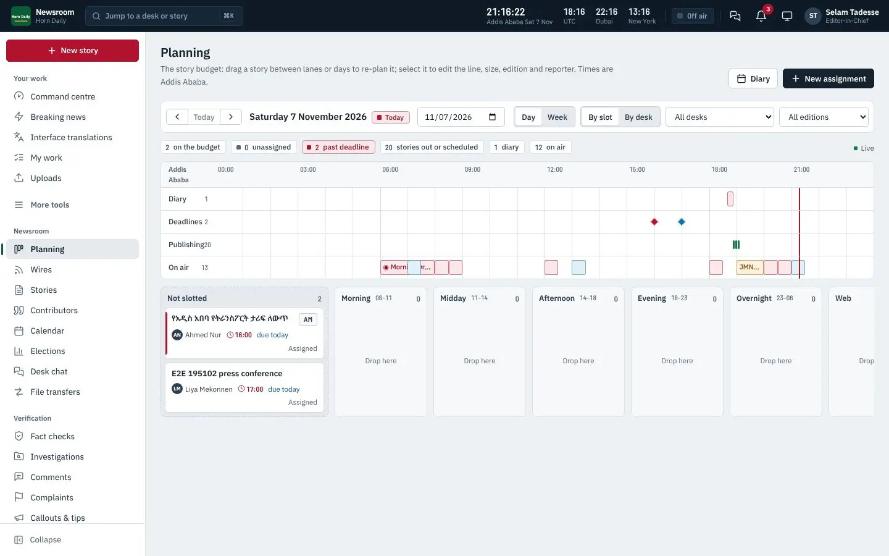
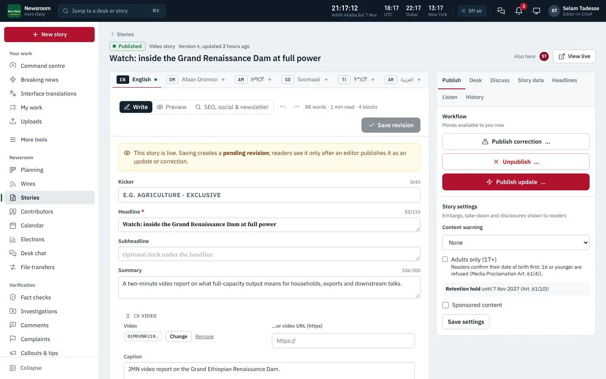
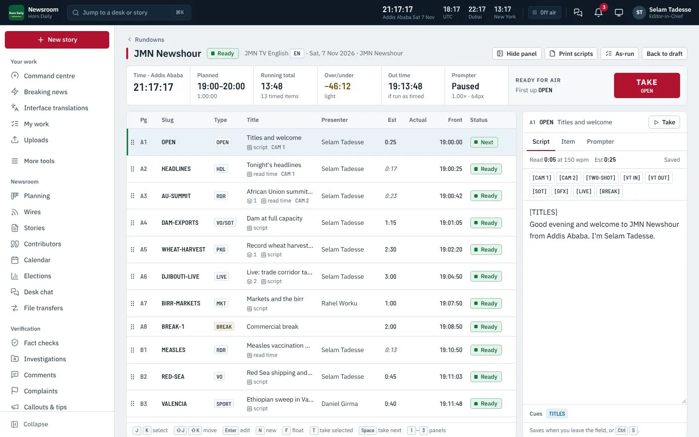

The Product Bible is the single source of truth about Sham MediaOS. It starts with the product at a glance and the capability catalogue, then gives the full specification of every part of the system as shipped in version 2.3.2.
Note
Background that helps you understand what the system is doing.
Tip
A faster or better way to do something.
Important
Something that can cost you work, money or trust if you skip it.
Danger
A step that cannot be undone, or that can expose data.
Who can do this
The roles or permissions a task needs.
Steps
Text in monospace is something you type or see exactly. Bold names a button, field or menu. Blue links jump to another place in this book; in the PDF they are clickable, and so is every line of the contents and the index. Screenshots show the example outlet Horn Daily in green; your system shows your own name, logo, colour and languages.
| Vol. | Title | For |
|---|---|---|
| 01 | Product Bible | buyers, owners, managers and everyone new to the product |
| 02 | Reader Guide | readers, help-desk staff and audience teams |
| 03 | Newsroom User Manual | reporters, editors and newsroom staff |
| 04 | Advanced User Manual | senior editors, producers, audience and commercial leads |
| 05 | Administrator Manual | system administrators and technical owners |
| 06 | Installation and Operations Manual | IT, hosting and operations staff |
| 07 | Advanced Technical Manual | developers, integrators, architects and security reviewers |
| 08 | Training Manual | trainers, new staff and team leads |
| 09 | FAQ and Troubleshooting | everyone, and the help desk |
| 10 | sham.et Store and Licensing Manual | customers buying licences and Sham operators |
| 11 | Commercial and Legal Pack | buyers, procurement, legal and sales teams |
© 2026 Sham Software Systems Development General Trading PLC. All rights reserved. This documentation is supplied to licensed customers of Sham MediaOS and may be copied for their internal training and use. Product names of third parties (for example Stripe, Google Play, the App Store, Microsoft Store, LiveKit, Jitsi, Cloudflare) belong to their owners and are used only to describe how Sham MediaOS works with them. Features marked as optional need a separate account with that provider; Sham MediaOS does not include those services.
One system for the newsroom, the website, the apps, broadcast and the business of news.
Sham MediaOS is a complete operating system for a news organisation. One installation runs the newsroom where stories are planned, written, checked, translated and approved; the public website in every language the outlet publishes in; the reader apps for Android, iOS and Windows; newsletters, podcasts, live blogs and live video; radio and television rundowns and studios; reader memberships and advertising; and the administration, security and backups that hold it all together.
It is installed on the outlet's own server, or on a cloud server the outlet controls, under the outlet's own name, logo and colour. Readers never see the name Sham unless the outlet chooses to show it.
Most newsrooms in the Horn of Africa, East Africa and the wider region run on a patchwork: a content management system made for blogs, a separate newsletter service, a spreadsheet for planning, messaging groups for approvals, a video platform that owns the audience, and no record of who changed what. Publishing in several languages means several copies of everything. When the internet is cut or slowed, the website goes dark and readers lose the outlet.
Sham MediaOS replaces the patchwork with one system that was designed from the first line for:
Planning, assignments, Story Studio editor, workflow and approvals, translation desk, fact-checks, investigations, corrections, breaking alerts, wires and agency feeds.
Fast multilingual site per edition: home, sections, topics, storylines, authors, archive, e-paper, search, live, elections, podcasts and video.
Branded reader apps for Android, iOS and Windows, built and published from the newsroom with App Studio. A Reporter app for field staff.
Newsletters, push notifications, callouts, tips, polls, comments with moderation, contributor programme, SMS and USSD.
Memberships, paywall, one-off support, advertising with campaigns and placements, sponsored newsletters; Stripe, PayPal, Chapa, telebirr, ArifPay, bank transfer.
Rundowns, prompter, studios, remote guests, graphics, live streaming to several destinations, interaction screens, election graphics.
Optional AI desk: summaries, translations drafts, transcription, verification aids and search across the archive, with providers the outlet chooses.
Corrections log, complaints handling, transparency pages, content provenance (C2PA), AI policy, legal holds and a full audit trail.
One-command install, health checks, backups with four-eyes restore, update checks, resilience mode, licence and capability management.
| Person | What they do in Sham MediaOS | Volume |
|---|---|---|
| Reader | Reads, listens and watches in their language; subscribes, supports, comments, sends tips | Reader Guide |
| Reporter | Pitches, writes, files from the field, uploads media, answers editors' queries | Newsroom User Manual |
| Editor, desk chief | Plans, assigns, edits, approves, publishes, corrects | Newsroom User Manual, Advanced User Manual |
| Editor-in-chief, managing editor | Sets standards, approval chains, breaking news, trust and transparency | Advanced User Manual |
| Producer, presenter | Builds rundowns, runs studios and live streams, handles audience interaction | Advanced User Manual |
| Audience, social and newsletter editors | Newsletters, push, social publishing, callouts, comments | Newsroom User Manual |
| Commercial staff | Memberships, paywall, advertising, reports | Advanced User Manual |
| Administrator | People and roles, editions, brand, licence, integrations, security, backups | Administrator Manual |
| IT and hosting staff | Installs, updates, monitors, restores, scales | Installation and Operations Manual |
| Developer, integrator | API, webhooks, embeds, data, extensions | Advanced Technical Manual |
| Trainer | Teaches all of the above | Training Manual |
Sham MediaOS is sold in five editions. Every edition includes the newsroom, the website, newsletters, local payment methods and advertising; higher editions add features and raise limits. The licence installed on the server decides which features are active, and an upgrade is a new licence key: no reinstall.
| Starter | Professional | Broadcast | Enterprise | Global | |
|---|---|---|---|---|---|
| Staff seats | 5 | 25 | 75 | 500 | Unlimited |
| Editions (publications) | 1 | 3 | 5 | Unlimited | Unlimited |
| Languages | 3 | 10 | 15 | Unlimited | Unlimited |
| Studios | – | – | 3 | 20 | Unlimited |
| Newsroom, website, newsletters | ● | ● | ● | ● | ● |
| Local payments, advertising | ● | ● | ● | ● | ● |
| Paywall and memberships | ● | ● | ● | ● | |
| Branded reader apps | ● | ● | ● | ● | |
| AI desk | ● | ● | ● | ● | |
| Analytics, podcasts, elections | ● | ● | ● | ● | |
| Broadcast, live, audience interaction, syndication | ● | ● | ● | ||
| Single sign-on (Google, Microsoft, SAML) | ● | ● | |||
| Several brands, archive tiers and legal holds, audit export | ● | ● | |||
| Several data centres | ● |
A new installation runs a 14-day trial with Professional features. When a licence lapses, the newsroom becomes read-only but the public website, apps and feeds keep running: readers are never punished for a billing problem.
Seven rules the product is built on
The server is a Laravel 13 application on PHP 8.3 or newer with PostgreSQL 17 (16 or newer is supported; MySQL is not), Redis for queues, caches and sessions, and a Next.js 16 website rendered on the server for speed and search engines. Media is processed by queue workers with FFmpeg and stored on local disk or S3-compatible object storage. The reader apps and the Reporter app are built with Flutter from one code base for Android, iOS and Windows; the studio desktop app runs on Electron. Live video uses a self-hosted LiveKit gateway by default, with Jitsi as a second option. The whole system installs with one command on Ubuntu 24.04, or with Docker or Kubernetes. The Advanced Technical Manual describes every part.
Every capability of the product, area by area.
This chapter lists what Sham MediaOS can do, area by area. Each area names the edition that first includes it, the people who use it, and the chapter of this library that explains it in depth. Later chapters of this Product Bible give the full specification.
All editions Editors, desk chiefs, reporters
The planning board holds every story before it is written: pitches, assignments, diary events and the coverage plan for each edition. Editors drag a pitch to a reporter, set a deadline and a target edition, and see at a glance what each desk will publish today, tomorrow and this week.

All editions Reporters, editors
Story Studio is the editor for every kind of story: news, features, opinion, explainers, live blogs, photo stories and video stories. A story is built from blocks: text, headings, quotes, photos, galleries, video, audio, embeds, fact boxes, timelines, maps, polls and related links. Every change is saved as a version that can be compared and restored.

All editions Editors, editor-in-chief, legal
Each desk has its own workflow: draft, submitted, in edit, legal review where needed, approved, scheduled, published. Approval chains require named roles to sign off certain kinds of story (for example investigations, election results or sponsored content) before they can be published. Every transition is recorded in the audit log with the person, time and reason.
All editions Editors, translators
An edition is a version of the publication in one language, with its own front page, sections, editors and schedule. Starter includes one edition with up to three languages; higher editions include more. Twenty languages are ready, including Amharic, Afaan Oromoo, Tigrinya, Somali, Arabic (right to left), Kiswahili, Afar, Sidama, Agew, Anuak and Nuer.
All editions Photographers, video editors, everyone
Photos, audio, video and documents live in one media library with rights, credits, captions in every language, alternative text, location and expiry. Large files upload in resumable pieces, so a dropped connection does not lose the upload.
All editions · live video Broadcast
All editions
The public website is generated for each edition in its own language and direction. It is fast on slow phones, readable by search engines, and accessible to people who use screen readers or keyboards.
All editions Audience editors
Professional and above for polls and interaction screens
Local payments and advertising All editions · paywall and memberships Professional and above
ads.txt support; sponsored newsletters.Professional and above
Shows and episodes with artwork, descriptions, transcripts and chapters, published to the website and to podcast platforms through standard feeds; scheduled publishing; listen page per edition; audio versions of articles through text-to-speech where enabled.
Broadcast and above Producers, presenters, directors

Professional and above
Elections with contests, candidates, parties and constituencies; results entered by authorised staff with two-person verification; live results pages and maps on the website; embeddable widgets for partners; verified feeds for syndication; broadcast graphics for election nights.
All editions
Professional and above
Privacy-respecting analytics without third-party trackers: page views, readers, reading time, sources of traffic, top stories per edition, newsletter and push performance, subscriptions and revenue, with per-story pages for editors.
Professional and above · every AI service is optional and off until switched on
Summaries, headline suggestions, translation drafts, transcription of audio and video, captions, search across the archive by meaning, entity extraction, and verification aids. The outlet chooses the provider: a cloud service under its own account, or a model running on its own server. Every AI output is marked as a draft for a person to check, and the public AI policy page says how the outlet uses AI.
Professional and above
App Studio lets the outlet brand, sign, build and publish its own reader apps for Google Play, the App Store and the Microsoft Store from inside the newsroom: name, icon, colours, splash screen, editions, store texts and screenshots. The Reporter app lets staff file stories, photos, audio and video from the field, also when the connection drops.
All editions · single sign-on, several brands and audit export Enterprise
All editions
The idea behind the platform: one operating system for a multilingual news organisation.
Document ID: JMN-DOC-024
Prepared: 17 October 2026
Scope: Product concept, evidence-based gap analysis, hosting fit and recommended sequence. This is not deployment approval or proof of production readiness.
Latest website checkpoint — 18 October 2026: All 16 edition fronts are available in the local preview. Eleven editions have complete 397-label draft interface dictionaries; Afar, Awngi, Sidama, Anuak and Nuer still require native translations. The notification recovery pass below records the latest implementation and checks. Historical 396-label reports remain evidence of their earlier runs. This checkpoint does not establish native approval or production readiness.
Sham MediaOS is intended to be a global, multilingual, digital-first media organization with the editorial, publishing, audience and broadcast systems needed to operate across 16 language editions. Each edition should have its own editorial identity, language-specific presentation, newsroom permissions, publication workflow, social channels, audio/video programming and audience relationship, while sharing a common technology platform and organizational standards.
The supplied project is already a substantial proprietary newsroom and publishing platform. It is not a blank draft. The archive contains a Laravel 13 API and a Next.js 16 web application, extensive newsroom and audience domains, 16-edition support, video/audio/podcast and live-event features, and extensive engineering documentation. The supplied PostgreSQL custom-format backup was created on 15 October 2026 from PostgreSQL 17.11. Its schema contains 139 tables, with data entries for all 139 tables, five public functions and 20 triggers. This establishes a broad implemented foundation; it does not prove that every feature is fully tested, correctly configured, deployed, or staffed for real operations.
The project is much closer to a multilingual newsroom CMS and digital publisher than to a complete broadcaster. It has no native Flutter apps, no configured broadcast control room, no 24/7 radio automation, no first-party live video ingest/relay service, no studio-to-studio contribution network, and no demonstrated production deployment. The website now supports scheduled YouTube event pages with a privacy-enhanced embedded player; the live-video layer also retains provider/manual-HLS adapters. It does not include a streaming server. These are distinct delivery programs and should be developed in stages.
The first deployment gate is database and service compatibility. The application and dump are PostgreSQL-oriented; the dump is PostgreSQL 17.11. MediaOS's deployment document requires PostgreSQL 14+ with pg_trgm, unaccent, and citext. The owner clarified that the Ethio telecom shared hosting account is MySQL-only, while both Ethio telecom VPS and Yegara VPS are candidate deployment options. The architecture should support either provider through one documented, portable VPS baseline; provider-specific OS, database version/extensions, network, storage, backup and support entitlements must be verified before choosing. Keep PostgreSQL as the system of record unless an intentional migration is approved.
The practical direction is to preserve the existing web/newsroom product and strengthen it for a safe first public launch, while designing the broadcast network as a connected but separately deployable media layer. Use Windows studio PCs for production, and use managed hosting features that the providers explicitly support. Rootless shared hosting can run the website and scheduled jobs within plan limits; it is not a safe assumption for Docker radio automation, persistent stream servers, custom ingest ports, video transcoding, or high-volume public video delivery.
Sham MediaOS is a multilingual, multimedia news organization and digital media platform originating in Ethiopia and serving audiences in Ethiopia, the Horn of Africa, Africa, the Middle East and the global diaspora.
MediaOS will publish original, verified journalism through 16 distinct language editions. Each edition will have its own editorial voice, newsroom permissions, section structure, terminology, social identities, newsletters, audience preferences and programming. Editions will share a secure common platform, brand family, editorial standards, engineering, archives and operational controls. Shared infrastructure must not flatten language differences or allow one edition's content, credentials, analytics or editorial decisions to leak into another.
MediaOS is a media organization supported by software, not merely a website. Its platform will connect the full work cycle: assignment and reporting; research, source protection and verification; writing, editing, translation and legal review; photo, audio and video production; publication; live coverage; audience engagement; distribution; preservation; and accountable measurement.
MediaOS's editorial purpose is to provide accurate, independent, timely and useful journalism, with particular strength in African and Horn of Africa reporting and an international outlook. The network will distinguish reporting, analysis, opinion, sponsored material and automated assistance. It will publish corrections transparently, protect vulnerable and confidential sources, explain methods and ownership, identify conflicts, and apply human editorial accountability to translations and AI-assisted work.
Initial revenue assumption: advertising is MediaOS's primary funding model. Advertising operations must remain separate from newsroom commissioning, story selection, verification, headlines and corrections. Sponsored material must be plainly labelled and must never bypass publication readiness or disclosure rules. Audience measurement should be privacy-aware, and commercial reporting should be available without exposing confidential newsroom information.
The public promise is that audiences can find trustworthy reporting in their language, on devices and connections available to them, with clear attribution, accessible presentation, usable archives, captions/transcripts where appropriate, and reliable ways to listen, watch, follow and share.
MediaOS will serve local and regional readers, radio listeners, video viewers, diaspora communities, people with disabilities, contributors and partner newsrooms. The public product family should include:
“Distinct edition” means an independently managed editorial service with its own language experience and distribution identity. It does not require 16 separate codebases or 16 separate apps. Program schedules and stream identities should be edition-specific. MediaOS should launch continuous channels only for languages with staffing, original programming, rights clearance, support and measured delivery capacity; it should not promise 16 simultaneous 24/7 feeds before those resources exist.
MediaOS will operate a central newsroom with language desks and subject desks, supported by regional bureaus, remote reporters, photographers, producers, translators, fact checkers, editors, legal reviewers, audience staff, engineers and administrators. The workflow will support assignments, deadlines, secure reporting intake, source records, versioned stories, translation linkage, collaborative review, scheduled and embargoed publication, correction/take-down, rights checks, social approval and a readable audit trail.
The main studio will be a Windows-PC production environment with configured video scenes, audio routing, microphones/cameras, monitoring, graphics, recording, contribution links, stream controls, run-of-show, backup recording and a clear manual fallback. Smaller studios and remote reporters will join through controlled contribution workflows. Every broadcast should create a recoverable local master, a publishable web version and metadata linked to its programme, edition, guests, rights, transcript/captions and archive record.
The broadcast design must distinguish four jobs that are often mistakenly bundled together: (1) local production and mixing; (2) contribution from reporters and guests; (3) ingest, playout, recording and stream packaging; and (4) public distribution to viewers/listeners. OBS can perform the first job; it does not by itself provide a scalable public media origin, adaptive bitrate delivery, radio automation, archive or 24/7 station continuity.
The recommended starting point is to retain the current Laravel modular monolith, Next.js public/newsroom web application and PostgreSQL data model. The common platform remains authoritative for journalism, staff identity, rights and editorial decisions. Stream servers, audio playout, heavy media processing and archive storage should connect through documented provider/driver interfaces rather than being added to the request/response path of the CMS.
Use open formats and protocols where they fit: HLS for broad browser video delivery; RTMP or SRT for contribution where provider support allows; WebRTC for interactive guest contribution; Icecast-compatible audio for radio distribution; RSS/Atom and podcast feeds; WebVTT/SRT captions; documented REST APIs and signed webhooks. A protocol is not itself a hosting service: every public stream still needs an ingest endpoint, origin/relay capacity, network egress and operational monitoring.
flowchart LR
subgraph Production[Studios and reporters]
R[Reporters and guests]
A[Windows audio desk<br/>Mixxx / audio console]
V[Windows video desk<br/>OBS Studio]
end
R -->|WebRTC, phone or secure upload| V
A -->|audio contribution| Radio[Managed Icecast-compatible endpoint<br/>or approved radio service]
V -->|RTMP / SRT contribution| Video[Approved live ingest and relay<br/>MediaMTX / Owncast / managed service]
Editorial[JMN editorial platform<br/>Laravel + PostgreSQL] <-->|schedule, stories, rights, captions, metadata| Web[Next.js public editions and newsroom]
Editorial --> Archive[Media archive and backups]
Radio --> Web
Video --> Web
Web --> Audience[Readers, listeners and viewers]
The diagram shows the proposed division of responsibility, not current deployed infrastructure. The ingest, radio endpoint, archive storage and database hosting remain deployment decisions until provider capabilities are confirmed.
The platform will apply least-privilege permissions by role, desk, language, section and bureau; multi-factor authentication for sensitive work; immutable versions and audit history; encryption of restricted material; protected-source access logging; consent and licensing records; publication readiness checks; and recoverable encrypted backups. AI output remains a draft until a qualified human reviews it. The platform will respect privacy choices, minimize audience data, provide clear correction and complaint routes, and support takedown without destroying the internal evidence needed for accountability.
“World-class” is a quality objective to define and measure: editorial credibility, language quality, accessibility, load performance, mobile usability, search/discovery, security, stream start and continuity, archive retrieval, incident response and audience trust. It is not satisfied by feature count or by copying another broadcaster's visual design.
Repository and project documentation provide evidence for a large set of implemented or substantially implemented areas:
en, om, am, so, ti, ar, sw, tr, zh, fr, aa, awn, sid, anu, nus, es.The database archive corroborates a mature data model: it includes stories/translations, workflow and audit, users/roles, media, podcasts, live events, email, newsletter, advertising, analytics, push, backup, and other tables. A schema can show that structures exist; it does not prove that a connector is configured, source media is preserved, an integration's credentials work, or the user experience meets launch standards.
These are architecture recommendations from the available evidence. They remain subject to confirmation of the exact hosting entitlements and actual network/stream demand.
This order addresses the highest-risk dependencies first. Each phase should have its own acceptance criteria and staffing/cost gate.
Obtain equivalent VPS capability sheets from both providers: supported OS and version, PostgreSQL version and permitted extensions (pg_trgm, unaccent, citext), PHP/Node versions, CPU/RAM/disk and bandwidth quotas, public IP/firewall controls, backup and restore terms, SSH/sudo boundaries, background services, Docker policy, ports, support and renewal costs.
Prepare a provider-neutral deployment baseline and two implementation runbooks (Ethio telecom VPS and Yegara VPS). Keep the Ethio telecom MySQL-only shared hosting outside the current PostgreSQL-backed app unless separately assigned a compatible secondary role.
Reconcile code, dump and docs into one versioned status ledger. Treat the 15 October dump as sensitive and preserve it unaltered.
Produce a release readiness baseline from the current actual checkout. Test results in earlier documents are historical claims until rerun in the current source and target environment.
Exit gate: written hosting route compatible with actual migrations, accepted product requirements, one authoritative open/closed gap list, confirmed edition names/owners and named launch languages.
Deploy the Laravel API and Next.js website to the compatible rootless web tier, with the approved database, secrets, storage, backups and cron model.
Rehearse installation, MFA enrollment, editorial roles, publication, correction/takedown, mail delivery, restore and incident recovery.
Populate real brand assets, legal/trust pages, real social profiles and representative editorial content; run the current responsive/accessibility, security, SEO and language review.
Set measurable operational targets for uptime, page performance, backup retention/restore time, error alerts and support ownership.
Exit gate: a controlled production launch of web publishing with recovery and human support, independent of live broadcast.
Keep all 16 edition records but only label editions launch-ready after native translators/editors complete UI, email, policy, navigation, search vocabulary, alerts and editorial style guide reviews.
Confirm staffing, editor availability, moderation, correction process, time zone, transliteration, spelling and script typography for each launch language.
Exit gate: each launched edition has an accountable editor, sufficient language coverage, operating policies, real accounts and reviewed end-to-end publication workflow.
Build the main Windows audio station with Mixxx, microphones/mixer, headphones/monitoring, audio processing and local recording.
Secure a working Icecast-compatible stream endpoint with a documented listener capacity, bitrate, fallback recording and monitoring. Do not assume it is included in web hosting.
Add edition/programme schedules, show metadata, web player, stream health, emergency announcements, replay/podcast publishing and rights checks.
Start with staffed, scheduled programme blocks and expand toward continuous station automation only after the live chain and resilience are measured.
Exit gate: clean feed, listener feed, web player, local master, backup/fallback and a trained operator work together for a full scheduled programme.
The owner selected English, Afaan Oromoo and Amharic for scheduled live video at launch. Distribution is through social platforms, with the YouTube player embedded on each event page. This phase does not require MediaOS to host a live-video origin or run 24/7 channels.
Create/schedule the YouTube event in YouTube Studio, stream from OBS using the official YouTube ingest settings, then distribute the event link through each edition's approved social accounts using the newsroom's human-approved social workflow.
Schedule the corresponding MediaOS live-event page with the public YouTube URL and approved poster/story. Embed through YouTube's privacy-enhanced player and provide a direct watch-page link for live chat, captions and cases where embedding is disabled.
Exit gate: a rehearsed scheduled event in each launch language has correct social links, YouTube playback on the website, an external watch fallback, a locally preserved recording and an editor-approved replay.
The current development pass has strengthened launch behavior without claiming production readiness:
contentUrl; replay entries are not marked as currently live broadcasts.Current-checkout verification on 17 October 2026: npm run lint, npm run typecheck and npm run build pass; the optimized build generated all 52 static pages. PHP Pint and syntax checks pass for the changed API files. The production dependency audit reports zero vulnerabilities. The full dependency tree reports five high-severity findings in development-only lint tooling (eslint-config-next and its transitive glob packages); dependency changes are not included in this pass. No test suite or production deployment is represented as complete. Native translation review, channel credentials, scheduled-event rehearsal, production secrets/database configuration and provider-compatible hosting remain external launch gates.
Continued implementation pass — 17 October 2026:
/ar with lang="ar" and dir="rtl".fill_from=en on every non-English active edition, and no edition.settings_updated audit event showed that an editor had selected it. A new migration removes only these unreviewed English defaults while preserving a source edition that an editor explicitly chose; the seeder no longer assigns an automatic fill source to new editions. The newsroom may still opt in to clearly labelled cross-edition stories by choice. The verified Arabic preview now keeps the E2E English story out of its front page.node --check; the new migration passed Pint and PHP syntax checks and ran against the disposable preview database; the Arabic browser page rendered right-to-left. No automated test suite, production database change or provider deployment was run.Verification refresh — 18 October 2026: After rebuilding the isolated PostgreSQL 17 preview from a separate restore of the supplied dump, the social-verification and edition-default migrations applied successfully. php -l and Pint pass for the changed API files; the web TypeScript check, focused ESLint run and optimized production build pass (52 static pages). The Arabic browser page returned HTTP 200 with RTL direction, Arabic edition stories, no English E2E story and no unverified social link. Database inspection found no non-English active edition defaulting to English and 144 imported social rows with zero verified. An independent review found no code defects in the changed paths; one stale baseline sentence about demo handles was corrected. No automated test suite or production deployment was run. These changes improve failure behavior but do not close the P0 launch gates in §5: an approved production database/hosting topology, reviewed edition-by-edition journalism and policy translations, authentic editorial content, approved social accounts, legal/rights review, real secrets, off-site backup verification, and an end-to-end production rehearsal are still required before calling MediaOS production-ready.
Website recovery improvements — 18 October 2026: The static offline screen now retains all 16 edition identities, uses Arabic RTL and recovery copy in English, Arabic, French, Spanish, Turkish and Chinese, and explicitly labels English recovery instructions for the other ten editions. Native review and the remaining recovery translations are still required. Saved-story discovery is limited to the requested edition and origin; malformed slugs and unavailable browser storage produce a usable empty state. The service worker refuses private/external save requests and redirected responses, supports saved article links with tracking queries, and tries the network even when browser cache storage is denied. Its static cache upgrade preserves saved article caches. Eight focused regression checks and targeted ESLint passed; npm run test:offline is included in CI. Static preview assets were refreshed without changing the application bundle. These checks do not represent a full browser offline/device rehearsal or production deployment.
Edition routing and local crawl — 18 October 2026: Browser language negotiation now honors valid priority weights, matches regional language preferences, and retains known edition identities or the last successful active list during registry failures. Redirect destinations are validated in encoded and decoded form; malformed percent encoding is rejected with a controlled 400 before route decoding. Eleven routing regression checks cover helper behavior and the proxy itself, including API failures, malformed responses, retained editions and redirect handling. The existing eight offline regressions also passed. The read-only local front-page crawl checked all 16 editions: each returned 200 with the correct document language/direction, a nonempty title and an edition-specific canonical path. It flagged the English demo/test story marker for editorial replacement. See evidence/2026-10-18/2026-10-18-LOCAL-EDITION-CRAWL.json; the crawl checks canonical paths, not launch-domain correctness or native translation quality. 25-WEBSITE-RELEASE-ACCEPTANCE.md now defines measurable technical, editorial, performance and operational acceptance targets. Local response timings are diagnostic and do not establish production page-performance or load results.
Verification of this routing pass: production compilation, TypeScript and standalone packaging completed successfully with 52 generated static pages; focused ESLint and all 19 routing/offline regression checks passed. Live requests to the rebuilt preview confirmed weighted Arabic negotiation (307 /ar) and malformed-path rejection (400 Invalid URL). The full browser/accessibility and production load suites were not run in this pass. These local results do not close the editorial, native-language, hosting or production-rehearsal launch gates.
Demo/test content cleanup — 18 October 2026: Applied php artisan jmn:demo:quarantine --apply only to the disposable local preview. Matching uses the exact account identities in DemoSeeder::USERS, not guesses based on news headlines. The operation soft-deleted 56 fixture articles, withdrew 30 sample newspaper editions, hid six public demo profiles, cancelled two demo live events, unpublished four published/scheduled podcast episodes, deactivated two fixture-only podcast shows, paused three demo advertising campaigns, disabled two demo social accounts and cancelled one pending demo newsletter. All 138 article-version records, original media and audit history remain; jmn:audit:verify confirmed the chain intact. The supplied dump was not changed. The reusable command defaults to report-only and records each mutation. It ends matching active alerts with a schema-valid reason, clears stale breaking badges, advances graph/related/layout caches, clears public-media authorization caches and sends signed urgent web invalidation in batches of at most 50 tags. Production use requires configured signed web revalidation; existing reader/CDN copies remain subject to their previous cache headers.
Verification: seven focused PHP tests (113 assertions) passed for quarantine and related-story behavior; a final extended quarantine regression passed 16 assertions, including profile hiding, scheduled-event cancellation and breaking-alert cleanup without removing the preserved article. PHP syntax/Pint, changed web-file ESLint, the 19 routing/offline checks, TypeScript and the optimized standalone build passed. The post-cleanup local crawl checked all 16 edition fronts with zero technical/demo-marker findings (evidence/2026-10-18/2026-10-18-POST-CLEANUP-EDITION-CRAWL.json). Direct checks confirmed empty public article/search/most-read/staff/podcast/newspaper responses, a former sample article returning 404, and no article references in English RSS, Atom, standard sitemap or News sitemap. No production deployment, full accessibility suite or load rehearsal was performed.
The clean preview currently has no authentic published journalism. This is an empty-content launch shell, not sixteen staffed editorial services. Browser review also found English empty-edition text in Turkish; added empty/unavailable strings to the six existing full dictionaries (en/ar/fr/es/tr/zh), with an additive migration that preserves existing translator wording. Turkish rendering was confirmed in the browser. The next interface pass below supersedes the dictionary counts from this cleanup snapshot.
The source catalogue now contains 396 interface labels, including the previously unregistered YouTube watch-link label. Complete draft dictionaries are supplied for English, Arabic, French, Spanish, Turkish, Chinese, Amharic, Afaan Oromoo, Somali, Kiswahili and Tigrinya. Existing own-language wording was retained; the five additional dictionaries fill previously missing labels across navigation, accounts, search, consent, newsletters, podcasts, digital newspapers, topics, alerts and empty states. Offline recovery also supports these eleven languages without needing the API.
This is technical dictionary coverage, not native editorial approval. Relationship grammar, technical terminology, content warnings, consent wording and policy references require native review. Afar (aa), Awngi (awn), Sidama (sid), Anuak (anu) and Nuer (nus) still use English fallback for missing interface labels; no invented or English-padded translations have been counted as completion. Their edition identity, routes and translation-desk missing-key lists remain available. Full policy pages, system email and original journalism are separate work from interface labels.
The additive dictionary migration preserves rows edited through the translation desk. Repeated seeding leaves identical wording and timestamps unchanged; new rows are inserted in batches within a transaction. Blank and whitespace-only rows no longer hide fallback wording or inflate coverage. Saving or clearing translations refreshes public coverage and the edited language's dependent fallback dictionaries. The desk rejects unexpected recognized placeholders as well as missing ones. Source tests check every literal website translation key and all eleven complete draft dictionaries.
Verification for this pass: seven PHP language/catalogue regression tests passed with 9,144 assertions; all 20 offline/routing checks, scoped Pint, PHP syntax checks, full web lint, TypeScript and the production standalone build passed. The additive migration ran on the local preview only. The served API confirmed eleven dictionaries at 396/396 and five at 0/396 (evidence/2026-10-18/2026-10-18-INTERFACE-COVERAGE.json); zero means genuine missing translations, not a broken route. Browser checks confirmed Oromo and Tigrinya navigation, script rendering and translated empty states, and the existing Turkish preview was reconnected after the build. Offline assets in the standalone package include the new languages and upgraded static cache. These checks do not establish native editorial acceptance, full device accessibility, production load capacity or deployment readiness.
The initial local crawl after rebuilding recorded one 30-second timeout on the Somali front (evidence/2026-10-18/2026-10-18-TRANSLATED-EDITION-CRAWL.json); the other fifteen fronts passed. A direct Somali recheck returned HTTP 200 in 1.38 seconds with localized empty-state text. The complete follow-up crawl passed all sixteen fronts with zero technical or known-demo-marker findings (evidence/2026-10-18/2026-10-18-TRANSLATED-WARM-EDITION-CRAWL.json). Both reports are retained. Cold local responses were slow; the warmed result is not evidence that production performance targets are met. The cleaned preview still contains zero authentic published articles.
The translation desk previously displayed 396 strings while its save endpoint accepted only 200 changes. It now accepts up to 500, validates the batch before mutation and saves atomically. Website submissions include the original wording for each changed key; a concurrent edit returns 409 TRANSLATION_CONFLICT without changing any strings. Per-edition locking also protects previously absent keys. Legacy API callers may omit originals and retain last-write-wins behavior. Responses include normalized accepted values so subsequent edits use the stored baseline.
The desk now exports and imports JSON drafts of the current view. Import validates edition, source wording, key uniqueness, known keys, length and recognized placeholders; blanks never erase wording and importing does not publish. Draft inputs survive validation/conflict responses and normalization across later saves. Dirty edition/filter links and search submissions are guarded, with export and explicit discard available. File reads are ordered and edits/save are disabled during import. Browser history/programmatic navigation is outside these guards; drafts should be exported before those navigation paths.
Ready-to-fill packs for aa, awn, sid, anu and nus are supplied at evidence/2026-10-18/2026-10-18-interface-draft-{code}.json: each contains 396 current English source labels, required placeholders and null translation targets. All five were checked with the actual importer. They are work materials, not translations; own-language coverage remains zero for those editions. The multilingual specification now records the eleven draft dictionaries, native-review limits and current verified-social behavior instead of stale coverage and approval claims.
Footer policy links now consistently identify fallback wording with lang, dir, hreflang and a visible language badge in both footer bands. Live HTML checks confirmed all six English privacy/terms/accessibility fallback links in the Oromo footer; browser review confirmed the badges on the mobile layout. The translation API returned 401 anonymously and the browser redirected an unauthenticated desk visit to sign-in. A signed-in browser import/save rehearsal was not performed; backend feature tests and frontend action/import tests cover those flows separately.
Verification: eight PHP language/catalogue tests passed (9,153 assertions); eight translation workflow tests and the twenty routing/offline tests passed. Scoped Pint, PHP syntax, full web lint, TypeScript and the optimized standalone build passed. The final local crawl checked all sixteen edition fronts with zero technical or known-demo-marker findings (evidence/2026-10-18/2026-10-18-TRANSLATION-WORKFLOW-EDITION-CRAWL.json). A code review found no remaining blockers after fixes for normalized-draft resurfacing, guarded navigation and import ordering.
During preview checking, PHP's 30-second development-server timeout was reached while loading framework classes. The local preview was restarted with the already-installed OPcache extension, CLI caching enabled and timestamp validation retained; production server configuration was not changed. The crawl also shares the local public API rate bucket; an additional registry request received a normal 429 after crawling. A later request recovered normally and confirmed sixteen editions with eleven complete draft dictionaries; the Oromo preview returned HTTP 200. These are local diagnostics, not production performance acceptance.
This pass addressed reader actions and locale fallbacks, using existing translated wording rather than adding guessed language strings. The shared reader client now returns recoverable failures for offline requests, timeouts and malformed upstream responses; successful 204 responses and structured API errors retain their meaning. Save and Follow recover from failed requests and expose translated alerts instead of remaining busy. Their updates retain unrelated reader state and do not apply to a different signed-in identity.
Comment loading now has a translated error/retry state. Reporting and deletion only advance after confirmed success; failed submissions remain retryable. A malformed successful comment response preserves the draft instead of crashing. Thread display is keyed by article, edition and reader identity so private pending comments disappear immediately on sign-out or identity change, even if reloading fails. The sign-in link now includes the complete article slug and comments fragment. Reply cancellation has an accessible translated label.
Shared date formatting now treats invalid dates as empty, uses deterministic English formatting where runtime locale support is absent, and retains the configured edition timezone. Invalid timezone configuration falls back to Addis Ababa. Non-finite/negative reading times are suppressed. This is formatting resilience, not a replacement for native interface translations. The catalogue test now checks literal component tr(...) keys as well as shared t(dict, ...) calls.
Seven focused reader regression tests cover request failures, malformed responses, Save/Follow recovery, failed reports/deletion, identity-isolated pending comments, retained comment drafts, sign-in return paths and locale/timezone edge cases. The source catalogue tests still confirm eleven complete 396-label draft dictionaries. Afar, Awngi, Sidama, Anuak and Nuer remain untranslated; the native-review, real editorial content and production verification gates remain open.
Final verification: all 35 reader/translation/routing/offline JavaScript checks passed; three catalogue tests passed with 9,126 assertions. Scoped PHP formatting, full web lint, TypeScript and the final production standalone build passed. The final crawl passed all sixteen edition fronts with zero technical or known-demo-marker findings (evidence/2026-10-18/2026-10-18-READER-RESILIENCE-EDITION-CRAWL.json). Oromo sign-in, Oromo/Arabic search and the Sidama fallback front returned HTTP 200. Browser review confirmed Oromo navigation, empty state and date rendering. Authenticated comment failure paths were exercised with controlled component/API-response tests, not a live published story or production account. No article content was published or changed.
The rebuilt local preview and API were launched as hidden background processes bound to 127.0.0.1, with diagnostic logs under D:/JMN/.tools. This keeps the preview independent of the foreground build command; it is not an installed Windows service or a production deployment.
The reader notification centre now distinguishes a subscription belonging to another edition, links to that edition's settings and explains that one browser endpoint receives one edition at a time. All eleven draft dictionaries contain the new notice, bringing their source catalogue to 397 labels. The local API confirms eleven editions at 397/397 and five at 0/397 (evidence/2026-10-18/2026-10-18-NOTIFICATION-INTERFACE-COVERAGE.json). The original 396-label native workpacks remain intact; new evidence/2026-10-18/2026-10-18-interface-draft-{code}-v397.json packs were checked with the actual importer. They remain untranslated work materials.
Explicit renewal reads back the authoritative server preferences, preserving displayed quiet hours. A lost or malformed registration response triggers best-effort browser unsubscribe; if token storage succeeds but confirmation fails, the token remains available and the page exposes recovery. Sibling controls are notified after durable token storage.
The settings API validates the website's expected edition inside a transaction with a subscription row lock, rejecting stale cross-edition updates/deletes with 409 PUSH_EDITION_CHANGED. Legacy callers may omit the expected edition. Settings responses include an authenticated endpoint hash; a changed browser endpoint requires explicit reader renewal. Automatic subscription renewal was removed so background worker events cannot recreate an opted-out subscription. Worker readiness has a 15-second timeout.
Enable, save and disable operations share an origin Web Lock across cooperating current clients. Browsers without Web Locks report push as unsupported rather than using an unsafe mutation fallback. Delayed refresh responses cannot clear replacement tokens. Transient failures retain retry tokens; a failed save never announces success. Opt-out only reports success after confirmed server deletion or browser unsubscribe. If browser unsubscribe alone succeeds, the server can retain the dead endpoint until delivery cleanup. No real notification permission was granted or alert sent in this pass; device and delivery rehearsal remains open.
Investigation also found that the signed web revalidation endpoint rejected the hyphenated ui-strings tag sent by the translation service. It now accepts the existing kebab-style tag names. Interface and language-registry updates expire immediately; ordinary content retains stale-while-revalidate. Three actual-route regressions cover signed tag acceptance/immediate expiry, ordinary caching and invalid-signature rejection.
Verification: all 50 JavaScript reader/translation/routing/offline/push/cache-revalidation checks passed; eight push API tests passed with 84 assertions; eight translation/catalogue tests passed with 9,211 assertions. Scoped Pint, full web lint, TypeScript and the production standalone build passed. The additive notice migration ran on the local preview only. The local crawl passed all sixteen fronts with zero technical or known-demo-marker findings (evidence/2026-10-18/2026-10-18-NOTIFICATION-FINAL-EDITION-CRAWL.json). The final notification HTML check confirmed the exact translated notice on all eleven draft-language pages (evidence/2026-10-18/2026-10-18-NOTIFICATION-FINAL-PAGE-CHECKS.json). The first check's six wording mismatches are retained in evidence/2026-10-18/2026-10-18-NOTIFICATION-PAGE-CHECKS.json; a later direct API check confirmed Arabic and French values and the follow-up pages matched. Further live checks found that the standalone startup omitted .env.local and the local revalidation secret was blank. The preview now starts with node --env-file=.env.local .next/standalone/server.js; existing rendering settings are loaded and a shared local revalidation secret was configured without exposing its value. A signed local request returned HTTP 200 and accepted both interface tags (evidence/2026-10-18/2026-10-18-LOCAL-INTERFACE-REVALIDATION.json). Production configuration was not changed. A crawl attempted before the port was listening is retained in evidence/2026-10-18/2026-10-18-NOTIFICATION-STARTUP-EDITION-CRAWL.json; pre-correction wording results are retained in evidence/2026-10-18/2026-10-18-NOTIFICATION-PRE-INVALIDATION-PAGE-CHECKS.json. The final checks ran after confirmed readiness and signed invalidation. One browser navigation timed out initially; a subsequent state check confirmed the requested page. This is not production performance acceptance.
Browser review confirmed the Oromo notice and Arabic RTL notice/unavailable state (evidence/2026-10-18/2026-10-18-ar-notifications-preview.png). Live push remains unconfigured locally; failure and race flows were exercised with controlled component tests and isolated API tests. The independent review's renewal, stale-token, readiness and mutation-race findings were addressed; it reported no further concrete blocker in those changes. Native review, the five missing language interfaces, authentic journalism, production configuration, supported-device accessibility and delivery/restore/load rehearsals remain release gates. The rebuilt local preview runs at http://127.0.0.1:3001; it is not a production deployment.
Configure OBS scenes, graphics, audio mix, camera/screen inputs, clean recording, lower-quality output and separate profiles for programmes/editions.
Establish guest/reporter contribution using a tested WebRTC path plus phone/audio and recorded-upload fallbacks. Define consent, moderation and confidential-source exclusions.
Select ingest/origin/distribution only after the provider confirms allowed protocols, ports, egress, sustained concurrency, transcoding and support. Pilot MediaMTX/Owncast on a permitted environment or use an already-configured provider driver with explicit cost/terms.
Connect live schedule, player, captions, replay, archive metadata, corrections and social distribution to the existing CMS.
Exit gate: a full production-to-viewer chain is verified at the target load, including a network interruption and recovery drill.
Add resumable, checksum-verified multi-file submissions with transfer state, access scope and retention controls.
Provide a studio/bureau handoff queue and clear ownership for review, ingest, rights and archive metadata.
Preserve masters and edit projects separately from web renditions; verify that backup and restore cover both database records and physical media.
Add speech-to-text/caption and metadata tools only as human-reviewable assistance.
Decide the user problems that PWA does not solve, then implement one Flutter codebase only if app-store presence, offline capture or device integration justifies it.
Prioritize reporter app capability: assignment, encrypted draft, media capture, resumable upload and idempotent conflict-aware sync.
Expand origin/relay capacity, object storage, search, observability, multi-region backups, partner syndication, analytics and commercial services from measured traffic, editorial needs and budget. Keep open protocols and provider adapters so hosting can change without moving editorial logic into the broadcast provider.
| Requirement | Yegara VPS candidate | Ethio telecom VPS candidate | MediaOS direction |
|---|---|---|---|
| Laravel/Next web tier | PHP/Laravel and lightweight Node/Next are listed as supported, subject to account quotas | Hosting product is available; exact plan capabilities need confirmation | Candidate for web tier after deployment rehearsal |
| PostgreSQL for current app | VPS account version/extensions and administration model to confirm | VPS account version/extensions and administration model to confirm; shared hosting is MySQL-only | Keep PostgreSQL; verify both VPS options against migrations. |
| Docker/AzuraCast/always-on services | VPS entitlement and rootless/rootful restrictions to confirm | VPS entitlement and rootless/rootful restrictions to confirm | Confirm before selecting container-based radio/stream services |
| OBS | Runs on Windows studio PCs, outside hosting account | N/A | Use locally for production, recording and outbound stream |
| Public video origin/relay | Published guide marks video streaming outside shared-hosting capability | Not confirmed | Managed/preinstalled stream service or an explicitly approved server product |
| Radio listener distribution | Web hosting alone does not establish an Icecast listener endpoint/capacity | Not confirmed | Obtain a managed Icecast-compatible endpoint; keep Mixxx playout local |
| File archive | Shared disk quota/backup terms need confirmation | MySQL service is unrelated to the media storage requirement | Confirm durable media storage and independent backup before accepting originals |
Provider claims above are time-sensitive and were checked against public pages on 17 October 2026. An individual VPS account may have different entitlements; obtain written account-specific confirmation from both providers before final deployment design. The target is one portable platform with two provider-specific runbooks, so MediaOS can choose either VPS without redesigning the application.
Language names: the repository currently uses awn for Agew/Awngi, anu for Anuak, and nus for Nuer. Confirm public names, scripts and labels with native editors; technical codes are not sufficient as a language policy.
Launch scale: launch the website across the supported editions, with original scheduled live video initially for English, Afaan Oromoo and Amharic. Produce from Windows PCs using OBS and distribute through approved social accounts; embed the YouTube watch page on the matching edition. No continuous 24/7 broadcast is assumed. Expand schedules and languages as staffing and audience demand support them.
Streaming costs: a “free, open-source, no-root” goal can apply to the studio applications and MediaOS application code. It cannot guarantee no-cost worldwide media delivery under shared hosting. A provider-hosted stream may have fees and limits even when the server software is open source.
Database compatibility: preserve PostgreSQL until exact Yegara entitlements are known. A MySQL conversion is a high-impact architecture change, not the default response to a hosting mismatch.
The owner has confirmed advertising as the primary funding source and Ethiopia as MediaOS's headquarters, with branches in other countries planned later. The existing first-party ad server is a starting point, subject to privacy and commercial/editorial separation review. Ethiopia is the first operating jurisdiction; each international branch will need a country-specific review of employment, media, privacy, consent and source-protection requirements before it opens. The owner has specified original video at launch for English, Afaan Oromoo and Amharic: scheduled OBS-produced streams distributed through social media, with YouTube embedded on the corresponding website edition. This establishes an event-based launch scope; staffing and audience evidence should guide later expansion.
This document proposes an ordered programme rather than claiming that the full global media network is already delivered. The owner subsequently authorized continued website implementation without confirmation pauses; its evidence is recorded in the dated website passes above. The broader delivery streams remain distinct: (1) hosting/database compatibility and production launch; (2) language operations and public experience; (3) studio and radio operations; (4) live video, contribution and archive; and (5) mobile apps and scale. No subsystem should be treated as complete solely because it appears in the roadmap or database schema.
This pass retains the Laravel/Next.js platform and the existing edition model. No real external post, email, push or bulk job retry is authorized by these development checks.
InboxBell.tsx, desk-actions.ts; controlled component/action regressions retain unread state on failed writes, preserve loaded data on refresh failure and expose retry.src/lib/api.ts; actual-client tests reject malformed successful responses and preserve structured authorization failures.DeskService::myQueue by organization and current story visibility; NewsroomDeskTest exercises cross-organization claimable tasks and revoked visibility.Review focus: permissions revoked after tasks were assigned; stories withdrawn after social scheduling; expired role grants in warm caches; failed responses after staff actions; queue filters lost between the operations view and action. These fixes do not translate the five remaining native interfaces or establish production delivery readiness.
Local test execution uses an isolated PostgreSQL test database. Existing GD/OpenSSL support is enabled per PHP process and the existing Git gzip tool is made available to the preview/test processes; no system-wide PHP or PATH settings were changed. Test fixtures use fake distribution and encrypted backup destinations. No real social post, email, push, bulk retry or production restore was performed.
The local preview is served at http://127.0.0.1:3001/en. Read-only reports: evidence/2026-10-18/2026-10-18-NEWSROOM-BACKOFFICE-EDITION-CRAWL.json (sixteen fronts pass, no known demo markers) and evidence/2026-10-18/2026-10-18-NEWSROOM-BACKOFFICE-BOUNDARY-CHECKS.json (five staff routes redirect to login, four anonymous API routes return 401, interface coverage recorded). These checks do not constitute authenticated browser, native language, accessibility, load or production acceptance. Eleven draft dictionaries remain at 397 keys; aa, awn, sid, anu and nus remain untranslated. Staff-interface translation, advanced newsroom features listed in 22-NEWSROOM-AUDIT.md, production account identity/credentials and deployment/restore rehearsal remain open.
Final verification: 85 PHP tests passed, 10,113 assertions across SocialDistribution, NewsroomDesk, AdminConsole, Content, Newsroom, OperationsBackup, InterfaceCatalog and InterfaceTranslation; 62 JavaScript tests passed across the explicit routing/offline/translation/reader/push/revalidation/newsroom regression files. Targeted Pint, full TypeScript, full ESLint and the production standalone build passed. The last PHP-only workflow change was included in the final 85-test run; no web source changed after the successful build. Regressions were observed failing before the relevant fixes, including the cross-edition proposal retry. A fresh local English GET returned 200 with its main element and English language attribute.
Retain the existing framework, permissions and editorial gates. Implement the following without installing dependencies or sending real publications. Native wording for the five untranslated interfaces must not be invented or marked reviewed.
ApprovalChainService, the admin API and an accessible policy editor. Fixed canonical permissions and mandatory transitions cannot be weakened; existing comment/MFA requirements remain a floor. Use organization and desk scopes, version conflicts and audit records. Test permission denial, inherited policy, stale saves and runtime enforcement in ApprovalChainTest before integrating routes/navigation.article_citations table, CitationService, CitationController, citation actions and StoryCitations panel. Records hold attributable references, edition, dates and research notes. Corrections add a replacement and retire the old record with a reason and optimistic version check; no confidential vault data, automatic remote fetch or public rendering. Test authentication, story visibility, scoped editing, invalid URL/dates, persisted metadata and audited retirement before implementation.Review focus: desk-policy changes during publication; scoped administrators reaching another desk; retired reference replay; edition translators changing another edition's sources; offline packs returning after a colleague's edits. The owning task's tests must cover each boundary. Execution is authorized by the user's instruction to continue without confirmation pauses.
The administration sidebar links Workflow policies for staff with settings.manage; per-desk scope filtering remains authoritative at the API. Policies configure existing transitions and stronger verification, not arbitrary new approval stages. The story editor now includes References & citations, including retired history, target-edition authorization, immutable metadata and controlled validation/retry feedback. Both additive citation migrations (table and foreign-key indexes) were applied only to the local preview. No sample reference, staff account, social profile or publication was added to preview data.
Independent review reproduced and fixed target-edition permission leakage, hidden-story validation disclosure and a pending-form edit race in the new citation feature. The focused integration run passed 37 PHP tests / 395 assertions; all 72 JavaScript checks, full TypeScript, full lint, scoped Pint/static analysis and the production standalone build passed. All sixteen public fronts passed the fresh crawl. Exact broader API evidence and its limits belong in 25-WEBSITE-RELEASE-ACCEPTANCE.md.
The broader test pass also prompted three citation foreign-key indexes, regenerated documentation for the five new API operations, corrected social-profile fixtures that now exercise official-account confirmation, and portable installer runtime/cleanup checks. The installed GD, intl and sodium extensions are enabled per preview/test process; memory is capped at 512 MB per such process. No global PHP settings or dependencies were changed. The full OpenAPI generator exceeded 512 MB; the five named routes were exported independently, merged into the existing document and checked for unresolved references and route coverage. This does not claim a fresh full-project OpenAPI generation.
Remaining work includes native wording for aa, awn, sid, anu, nus; native review of all eleven draft dictionaries; staff-portal localization; arbitrary ordered approval stages, tracked changes and optional staff digests; provider identity/credentials; and authenticated browser/device/accessibility, load and production restore/deployment acceptance. FFmpeg/FFprobe are unavailable to the configured runtime, so audio mastering remains unverified; Noto font provisioning is needed for the PDF edition checks. Studio/live broadcasting remains deferred as requested.
Final complete API run: 314 tests, 305 passed, 2 failed, 7 skipped, 13,951 assertions (662,198 ms). Both failures are in ArticleAudioTest: approved reading generation/withdrawal and pronunciation-triggered withdrawal depend on FFmpeg mastering; the first records the missing ffmpeg command, and the second cannot approve that failed render. Existing podcast/PDF checks skip without their external tooling/fonts. No tests were removed or marked skipped to hide these failures. Earlier installer, footer fixture, citation index and OpenAPI failures were corrected and are absent from the final run. A separate focused run had already passed all 37 newsroom/content/citation/policy tests. Evidence: evidence/2026-10-18/2026-10-18-ADVANCED-NEWSROOM-VERIFICATION.json and 25-WEBSITE-RELEASE-ACCEPTANCE.md. The website has not been certified production-ready.
The requirements the product was built to meet.
Version 1.0 · Derived from JMN-TECH-SPEC-001 v1.0 and the MediaOS Project Concept.
This document turns the master specification and concept into a traceable catalogue of
requirements. Each requirement has a stable ID (REQ-<AREA>-<NN>). Tests, tasks (doc 17) and
code comments reference these IDs. The document also records gaps, ambiguities and the decisions
taken for them.
| ID | Principle |
|---|---|
| P-01 | No WordPress, Drupal, Joomla or other traditional CMS as the foundation |
| P-02 | Laravel is the authoritative business-logic layer; the frontend is never trusted for security |
| P-03 | Modular monolith with strong domain boundaries; modules must stay extractable (§17, §18) |
| P-04 | Language is a first-class domain; no title_en-style columns (§11) |
| P-05 | Revisions and audit trails; published journalism is never silently modified or destroyed (§26, §84) |
| P-06 | AI assists only; a human is always in the loop (§72, §151, §152) |
| P-07 | No hard-coded AI, storage or media provider; use driver abstractions |
| P-08 | Expensive work runs asynchronously on prioritised queues (§64) |
| P-09 | PostgreSQL is authoritative; Redis is used only for cache, queues, locks and rate limits (§63) |
| P-10 | Cloudflare is the edge layer, but security is also enforced in the application (§62) |
| P-11 | Mobile-first design; accessibility built in, not added at the end (§53, §85) |
| P-12 | Critical operations run in transactions; downstream jobs are dispatched after commit (§95) |
| P-13 | Optimistic locking prevents silent overwrites (§96) |
| P-14 | ULID identifiers; no sequential IDs in public URLs (§21) |
| P-15 | Yegara cPanel first, with a path to horizontal scaling without redesign (§88, §87) |
| ID | Requirement | Spec |
|---|---|---|
| REQ-IDN-01 | Staff users with profile, status, locale and timezone | §22, §30 |
| REQ-IDN-02 | Secure password hashing (argon2id/bcrypt) and a password policy | §61 |
| REQ-IDN-03 | TOTP MFA; mandatory for privileged roles | §61, §129 |
| REQ-IDN-04 | Session and device tracking with revocation | §22, §129 |
| REQ-IDN-05 | Scoped, revocable API tokens (Sanctum) | §74, §132 |
| REQ-IDN-06 | Login attempt logging, brute-force lockout, suspicious-login events | §61 |
| REQ-ORG-01 | Organizations → regions → countries → bureaus → desks → teams hierarchy | §22, §31 |
| REQ-ORG-02 | Bureaus have their own staff, desks, languages, assignments and queues | §31 |
| REQ-ORG-03 | Reporter profile: bio, photo, title, bureau, city, languages, specialties, availability, credentials | §30 |
| REQ-ORG-04 | Language desks (English Desk, Amharic Desk, and so on) | §14 |
| ID | Requirement | Spec |
|---|---|---|
| REQ-SEC-01 | At least 27 seeded roles across the Executive, Editorial, Technical and Commercial groups | §59 |
| REQ-SEC-02 | Granular permissions (article.create, article.publish, and so on) |
§60 |
| REQ-SEC-03 | Role assignment scoped by organization, bureau, desk, language, section or country | §14 |
| REQ-SEC-04 | Every endpoint enforces authorization with policies | §60 |
| REQ-SEC-05 | Immutable audit log (append-only, enforced by a DB trigger) | §84 |
| REQ-SEC-06 | Security event log and alerts | §22, §61 |
| REQ-SEC-07 | Separate rate limits for login, registration, reset, public API, authenticated API, admin, AI, uploads and comments | §127 |
| REQ-SEC-08 | CSP, HSTS, secure cookies and CSRF (web) | §61 |
| REQ-SEC-09 | Stricter permissions for investigations and confidential sources | §36, §154 |
| ID | Requirement | Spec |
|---|---|---|
| REQ-CNT-01 | 18 content types (article, breaking, opinion ... announcement) | §23 |
| REQ-CNT-02 | Article core plus per-language translations (headline, subheadline, summary, body, SEO, slug, keywords, status, translator, reviewer, source, version) | §24, §12 |
| REQ-CNT-03 | Structured block body (22 block types), validated server-side, rendered as sanitised output | §25 |
| REQ-CNT-04 | Immutable versions for every save that matters (draft, edit, approve, publish, correct, update) | §26 |
| REQ-CNT-05 | Sections, categories, tags, topics, multiple authors | §22 |
| REQ-CNT-06 | Embargo, schedule and expiry | §169, §170 |
| REQ-CNT-07 | Public corrections with a note, timestamp and version link | §171 |
| REQ-CNT-08 | Unpublishing with a reason, audit entry and redirect/410 policy | §172 |
| REQ-CNT-09 | Soft delete only where appropriate; published versions are never hard-deleted | §173 |
| REQ-CNT-10 | Optimistic lock (lock_version) on edits; a conflict returns 409 |
§96 |
| ID | Requirement | Spec |
|---|---|---|
| REQ-WF-01 | 13 states: Draft → Submitted → Under Review → Needs Revision → Fact Check → Translation → Approved → Scheduled → Published → Updated → Corrected → Unpublished → Archived | §28 |
| REQ-WF-02 | Transitions are declared in data (workflow definitions), and each transition carries a required permission | §27 |
| REQ-WF-03 | Transition history, comments, tasks and approvals | §22 |
| REQ-WF-04 | Publishing is transactional, with jobs dispatched after commit (search, social, notify, cache) | §95 |
| REQ-WF-05 | Scheduler publishes due scheduled content idempotently | §65 |
| ID | Requirement | Spec |
|---|---|---|
| REQ-NR-01 | Assignment: title, description, reporter, editor, desk, location, priority (Routine to Breaking), deadline, embargo, formats, languages, media, status | §29 |
| REQ-NR-02 | Assignment members, deadlines and updates | §22 |
| REQ-NR-03 | Newsroom dashboard widgets (12) | §32 |
| REQ-NR-04 | Breaking news engine (badge, banner, ticker, push, takeover, language alerts) | §33 |
| REQ-NR-05 | Live blog entries, with configurable order | §34 |
| REQ-NR-06 | Fact-check workspace (claim → source → evidence → verification → reviewer → finding → publication) | §35 |
| REQ-NR-07 | Investigative workspace with restricted access | §36 |
| REQ-NR-08 | Editorial calendar, content planning and special events | §137–139 |
| REQ-NR-09 | Source management with confidentiality (encrypted at rest) | §153–154 |
| ID | Requirement | Spec |
|---|---|---|
| REQ-ML-01 | Language registry: code (BCP-47), native name, script, direction, active, fallback, PG search config | §10 |
| REQ-ML-02 | Seed 11 launch languages plus additional inactive expansion languages | §194 |
| REQ-ML-03 | Full RTL support (Arabic and future RTL languages) | §13 |
| REQ-ML-04 | Translation workflow: assign translator, review, and flag outdated translations when the source changes | §12 |
| REQ-ML-05 | UI string localisation, stored as data, for all active languages | §163 |
| REQ-ML-06 | Per-language search configuration | §48 |
| ID | Requirement | Spec |
|---|---|---|
| REQ-MED-01 | Asset metadata: ULID, original filename, MIME type, size, dimensions, duration, checksum, creator, copyright, license, source, capture date, geo, tags, restrictions | §38 |
| REQ-MED-02 | Upload validation: MIME sniffing, allow-list, size limits, randomised names, private storage | §102, §196, §197 |
| REQ-MED-03 | Image variants (responsive widths, WebP) produced by queued jobs | §39 |
| REQ-MED-04 | Video: sources, renditions (HLS), captions, chapters, playlists, via FFmpeg or a provider driver | §40, §130 |
| REQ-MED-05 | Audio: renditions and transcripts | §41 |
| REQ-MED-06 | Podcasts: shows, seasons, episodes, hosts, guests, RSS | §42 |
| REQ-MED-07 | Live events and streams, isolated from the core app | §43, §131 |
| REQ-MED-08 | Rights and licensing records | §103, §104 |
| REQ-MED-09 | Failed media jobs can be retried, and failures are surfaced | §199 |
| ID | Requirement | Spec |
|---|---|---|
| REQ-SRCH-01 | Full-text search per language (tsvector plus trigram fallback) | §48 |
| REQ-SRCH-02 | Archive facets: keyword, date, author, language, country, city, section, topic, person, organization, media type | §37 |
| REQ-SRCH-03 | Search driver abstraction (PostgreSQL now; Meilisearch/OpenSearch later) | §18 |
| REQ-KG-01 | Entities (person, organization, place, event, topic) and relationships linked to content | §49 |
| ID | Requirement | Spec |
|---|---|---|
| REQ-WEB-01 | Next.js public site: home, section, topic, article, author, live blog, video, podcast, search, language switcher | §4, §51 |
| REQ-WEB-02 | Locale-prefixed URLs /{lang}/... with ULID and slug; canonicalisation |
§146, §147 |
| REQ-WEB-03 | hreflang, sitemaps (per language, news sitemap), RSS, JSON-LD NewsArticle | §50, §116 |
| REQ-WEB-04 | Homepage and section builder (modules stored as data) | §167, §168 |
| REQ-WEB-05 | Redirect manager | §145 |
| REQ-WEB-06 | Cache plus invalidation on publish (tag-based) | §97, §98 |
| REQ-WEB-07 | WCAG 2.2 AA | §85 |
| ID | Requirement | Spec |
|---|---|---|
| REQ-AUD-01 | Audience accounts separate from staff: bookmarks, follows, preferences, notification preferences | §46 |
| REQ-AUD-02 | Comments with moderation queue | §47, §155 |
| REQ-NL-01 | Lists, double opt-in subscribers, campaigns, deliveries, unsubscribe | §45 |
| REQ-SOC-01 | Social accounts, publications and results, with a driver per platform | §44 |
| REQ-AD-01 | Ad accounts, campaigns, creatives, placements, impressions, clicks; editorial/commercial separation | §70, §150 |
| REQ-AN-01 | Event ingestion, page views, content metrics, traffic sources; aggregated asynchronously | §67–69 |
| ID | Requirement | Spec |
|---|---|---|
| REQ-AI-01 | Provider and model registry; driver abstraction | §71 |
| REQ-AI-02 | Tasks: summarise, translate draft, headline suggestions, SEO, transcription, tagging | §71 |
| REQ-AI-03 | Every AI run is logged (prompt hash, model, tokens, cost, user); outputs need human acceptance | §151, §152 |
| REQ-AI-04 | Budgets and quotas per organization, desk and user | §73 |
| ID | Requirement | Spec |
|---|---|---|
| REQ-MOB-01 | Flutter audience app and reporter app (a single codebase with flavours) | §57 |
| REQ-MOB-02 | Reporter offline mode: draft, capture media, queue, sync | §56, §160 |
| REQ-OFF-01 | Offline sync protocol with client mutation IDs, idempotency and conflict detection | §133, §134 |
| REQ-PWA-01 | Installable PWA; offline reading of saved articles | §54, §55 |
| REQ-API-01 | /api/v1, consistent error envelope, request ID, pagination, filtering, sorting, OpenAPI |
§74, §125, §126 |
| REQ-API-02 | Signed webhooks (HMAC-SHA256) for 8 events, with retries | §75 |
| REQ-ADM-01 | Admin app: users, roles, settings (versioned), feature flags, health centre, audit viewer | §58, §120–123, §175 |
| REQ-OPS-01 | Browser installer (13 steps) and install lock | §89, §90 |
| REQ-OPS-02 | Backups (DB dump plus media), a tested restore, and DR objectives | §80, §81 |
| REQ-OPS-03 | Structured JSON logs, health endpoints, metrics | §82, §83 |
Each scenario has a named Pest test (see doc 15): reporter submits, editor rejects, editor approves, scheduled publication, embargo, translation, RTL, breaking news, correction, media upload, video processing, live stream, newsletter, advertisement, permissions, account compromise, offline sync and conflicting edits.
How the parts fit together.
webapp/ (JMN monorepo root)
├── apps/
│ ├── api/ Laravel 13 API: authoritative business logic (PHP 8.4)
│ ├── web/ Next.js 16 / React / TypeScript: public site, newsroom, admin UI
│ └── mobile/ Flutter: audience + reporter apps (flavours)
├── infra/
│ ├── yegara/ cPanel deployment: cron, .htaccess, deploy scripts
│ ├── scaled/ supervisor / nginx / systemd templates for VPS/K8s migration
│ └── ci/ CI helper scripts
├── docs/ This documentation set (source of truth for engineering)
└── .github/workflows/ CI pipelines
Browser / App ──► Cloudflare (DNS, CDN, WAF, TLS, bot, rate limit)
│
┌──────────┴──────────┐
Next.js (SSR/ISR) Laravel API /api/v1 (+ /install, /health)
│ server-side fetch │
└──────────►──────────┘
│
PostgreSQL 16+ (authoritative) Redis (cache, queues, locks, rate limits)
│
Storage driver (local | S3-compatible | R2) ──► CDN
│
Queue workers: critical, high, default, media, ai, analytics, low
│
MediaProcessor driver (local-ffmpeg | provider)
app/
├── Domain/<Module>/ Models, Enums, Events, Policies, Services (actions), Rules, Exceptions
├── Http/Controllers/Api/V1/<Module>/ Thin controllers: validate, authorize, call a service, return a resource
├── Http/Requests/<Module>/ FormRequest validation
├── Http/Resources/<Module>/ JSON:API-style resources
├── Http/Middleware/ RequestId, SecurityHeaders, InstallGuard, ForceJson, SetLocale
├── Infrastructure/ Drivers: AI, Media, Search, Social, Storage, Webhooks
├── Jobs/ Queue jobs (one queue per priority)
└── Support/ ApiResponse, Ulid helpers, Money, Blocks
2026_10_01_000100_identity_....Modules: Identity, Organization, Security (RBAC and audit), Language, Editorial (content), Workflow, Assignment (newsroom), FactCheck, Investigation, Media, Video, Audio, Podcast, Live, Archive/Search, Knowledge, Audience, Comments, Newsletter, Social, Advertising, Analytics, AI, Notifications, Webhooks, Administration (settings, flags, health), Installer.
Accepted. It deploys simply on cPanel and supports shared transactions. Boundaries are enforced
by convention plus an architecture test (Pest arch()): Domain code must not depend on the Http layer.
Accepted. Every domain table uses a char(26) ULID primary key (HasUlids). ULIDs are
time-sortable, so they index better than UUIDv4. Public URLs use ULIDs plus slugs. Reference tables
(languages, countries) use natural codes as unique keys and keep ULID PKs for consistency.
Accepted. The articles table stores language-neutral data. article_translations has a unique
key on (article_id, language_id). UI strings live in ui_translations.
Accepted. article_translations.body is JSONB, {version:1, blocks:[{id,type,data}]}, validated
server-side against the registry in App\Support\Blocks\BlockRegistry. HTML is never stored as
the source of truth. A plain-text projection feeds search.
Accepted. article_versions rows are insert-only (a DB trigger rejects UPDATE and DELETE).
audit_logs is insert-only and hash-chained (prev_hash, hash = sha256), so tampering is
detectable.
Accepted. lock_version integer on articles, translations and assignments. Clients send
If-Match: <lock_version> or a lock_version field; a mismatch returns 409 EDIT_CONFLICT with the
current server version. There is no silent overwrite.
Accepted. QUEUE_CONNECTION=redis, falling back to database. Queues:
critical, high, default, media, ai, analytics, low.
php artisan schedule:run every minute, and the scheduler
runs queue:work --stop-when-empty --max-time=50 per queue group.Accepted. output: 'standalone'. On Yegara it runs through cPanel "Setup Node.js App" (Passenger)
where available; otherwise it runs on a separate Node host. ISR and tag revalidation are triggered by
Laravel webhooks to /api/revalidate (HMAC-signed).
Accepted. These contracts live in App\Infrastructure\*\Contracts:
AiProvider, MediaProcessor, LiveProvider, SearchEngine, SocialPublisher, PushSender.
Drivers are selected in config by environment variables.
Accepted. If Redis is unavailable, cache, queue and session fall back to database. The Health
Center reports "degraded".
Accepted. search_documents table: a tsvector column built with languages.search_config, plus a
pg_trgm GIN index on the normalised text. Queries combine websearch_to_tsquery with trigram
similarity for non-stemmed scripts.
Accepted. The users table is for staff (Sanctum guard staff). audience_users is for
readers (Sanctum tokens on a separate abilities namespace). Staff permissions can never be
granted to audience accounts.
Accepted. Success: {success:true, data, meta?, links?, request_id}.
Error: {success:false, error:{code,message,details}, request_id} (spec §125).
/newsroom/breaking (API GET|POST /newsroom/breaking, POST /newsroom/breaking/{id}/extend|end). Sending a breaking alert is one deliberate action for one published story in one edition. Nothing is ever published from here.
| Channel | What happens | Gate |
|---|---|---|
| Breaking bar (always) | The story leads the edition's ticker with the alert headline (editable, max 160 characters) | article.publish_breaking for the edition |
| Homepage lead | The story is pinned as the hero lead while the alert is active | same |
| Social accounts | A BREAKING: … post is queued on each active account of that edition |
social.manage for the edition, otherwise skipped with the reason |
| Breaking newsletter | A draft on the edition's breaking list, for review (never auto-sent from here; idempotent per story) | newsletter.manage for the edition |
| Live coverage | Links the alert to a live video of the same edition | — |
| Web push / WhatsApp | Recorded as skipped: not configured until a provider is connected (P2). Never shown as sent. | — |
article.publish_breaking (sensitive) for the edition, plus an MFA-verified session (a token without the mfa ability gets 403, even for the Editor-in-Chief). Each send is audited (breaking.alert_sent) and recorded as a security event (breaking_alert). Language-scoped editors see and alert only their editions.jmn:breaking:expire runs every minute, and the desk also expires due alerts when it loads. Ended alerts stay on record with the reason (expired or editor). articles.is_breaking is set while some edition has an active alert and cleared afterwards.ALREADY_BREAKING).breaking_alert_deliveries: done / queued / skipped / failed, with target and reason), so the desk sees exactly where an alert went and where it did not.is_breaking, so it never emptied. It now shows only active alerts. Send and end both trigger revalidation of breaking, home:{lang}, layout:{lang} and article:{id}. When breaking is among the tags, the web expires the pages immediately ({ expire: 0 }, not stale-while-revalidate), so the very next reader already sees the alert, and sees it gone once it ends (verified: first request after send and after end).BreakingNewsTest (4 API) and e2e/breaking.spec.ts (send → reader bar shows it → end; a reporter has no desk).Full design and audit: doc 22.
workflow_comments are per story, optionally per edition, and immutable. A query is a must-fix item.published, scheduled and updated while any query is open (409 READINESS_BLOCKED).@handle (the e-mail local part) only reaches colleagues who can already see the story. Anyone else is ignored silently.workflow_tasks move open → in_progress → done | cancelled, with lock_version.TASK_EXISTS).GET articles/{id}/readiness?language=):DeskNotification): mention, query, task, returned, approved, published, resolved. Shown by the header bell (polls every 60 s) and on /newsroom/my-work.EMBARGO_ACTIVE, and every public query hides expired stories.Supersedes: nothing; extends docs 02, 06, 13 and 24.
streaming services (VDO.Ninja, StreamYard, Restream, YouTube/Facebook) are first-class integrations; native iOS + Android audience apps.
The October audit (doc 24) established that MediaOS already owns a strong editorial core (workflow engine, versioned stories, 16 editions, fact-checks, investigations, distribution). What it lacked is everything that makes a broadcast-grade newsroom system (NRCS): planning, wires, running orders, prompter, studio control, live graphics, stream distribution, remote contribution, radio, a real-time command centre and native apps. The newsroom UI also read as a generic admin panel rather than the professional operating environment of a global broadcaster.
This document is the contract for closing those gaps. It defines the domains, schemas, API surfaces, UI information
architecture and integration protocols. Implementation must follow existing conventions (doc 18): App\Domain\* bounded
contexts, ULID keys, lock_version optimistic locking, AuditLogger, PermissionService scoped checks, ApiResponse /
ApiException envelopes, Pg::check enum constraints, tests in tests/Feature.
┌────────────────────────── JMN Platform (Laravel API + PostgreSQL + Redis) ─────────────────────────┐
│ Editorial · Workflow · Editions · Media · Distribution (existing) │
│ NEW: Broadcast (channels, programmes, EPG, rundowns, as-run, graphics, prompter, destinations, │
│ contributions, studio devices) · Wire (sources, items, watchlists) · Planning · Presence/Pulse │
│ · Desk chat · Resumable uploads · Native push (FCM) · App config │
└──────────────▲───────────────────────▲──────────────────────────▲────────────────────▲─────────────┘
│ BFF (httpOnly cookie) │ overlay/prompter key │ device token │ public API
┌──────────────┴─────────┐ ┌──────────┴─────────┐ ┌────────────┴─────────┐ ┌───────┴──────────┐
│ Newsroom OS (Next.js) │ │ OBS Browser Sources│ │ JMN Studio Bridge │ │ Website + Apps │
│ command · planning · │ │ /broadcast/overlay │ │ (Windows service) │ │ Next.js + Flutter│
│ wires · rundowns · │ │ /broadcast/prompter│ │ OBS ⇄ obs-websocket │ │ watch · listen · │
│ studio · streaming │ └────────────────────┘ │ Icecast · uploads │ │ schedule · push │
└───────────┬────────────┘ └───────────┬──────────┘ └──────────────────┘
│ obs-websocket v5 (ws://127.0.0.1:4455, direct mode on the studio PC)
▼ ▼
OBS Studio (Windows) ◀── VDO.Ninja guests (WebRTC browser sources) ── StreamYard / Restream
│ RTMP/SRT/WHIP → YouTube · Facebook · Restream · MediaMTX/Owncast (self-hosted)
Mixxx / BUTT (Windows) ── Icecast (radio) ──▶ web/app radio player
| Job | Tooling (open source, Windows) | MediaOS platform role |
|---|---|---|
| 1. Production & mixing | OBS Studio (default, open source), Meld Studio (optional, free), Mixxx | Scene/stream control (obs-websocket or Meld WebChannel), rundown-driven scene changes, HTML graphics, prompter |
| 2. Contribution (guests/reporters) | VDO.Ninja (self-hostable), StreamYard (SaaS), phone, recorded upload | Guest sessions with generated links, consent ledger, rundown linkage, resumable uploads |
| 3. Ingest/playout/recording | OBS recording, MediaMTX, Icecast, Liquidsoap (optional) | Studio Bridge uploads recordings, as-run log, stream destination registry |
| 4. Public distribution | YouTube, Facebook, Restream (multistream), Owncast/MediaMTX HLS, Icecast | Channel pages, EPG, embedded players, now-playing, apps, push |
RbacSeeder::PERMISSIONS)| Permission | Module | Sensitive | Meaning |
|---|---|---|---|
broadcast.view |
broadcast | no | See channels, programmes, schedules, rundowns, studio status |
rundown.edit |
broadcast | no | Create/edit rundowns and items (language-scoped via the channel's edition) |
rundown.approve |
broadcast | no | Approve/lock items and rundowns, mark ready for air |
studio.operate |
broadcast | no | Run the show: on-air pointer, graphics on/off, prompter, OBS control, guest sessions |
broadcast.manage |
broadcast | yes | Channels, programmes, EPG, stream destinations & keys, studio devices, overlay keys, Restream connection |
wire.view |
newsroom | no | Read the wires desk |
wire.manage |
newsroom | no | Add/edit wire sources and shared watchlists |
planning.manage |
newsroom | no | Edit the story budget (planning fields on assignments) |
chat.post |
newsroom | no | Post in newsroom desk channels |
New roles (keys): executive_producer (Executive Producer — all broadcast perms + newsroom.view_all, article.view_any,
planning.manage, wire.view, live.manage, podcast.manage), broadcast_producer (Broadcast Producer — broadcast.view,
rundown.edit, rundown.approve, studio.operate, wire.view, article.view_any, assignment.view), studio_operator
(Studio Operator / Technical Director — broadcast.view, studio.operate, media.view), presenter (Presenter / Anchor —
broadcast.view, article.view_any), radio_producer (Radio Producer — as broadcast_producer + podcast.manage).
Existing roles gain: editor_in_chief/managing_editor → all new perms; producer → broadcast.view, rundown.edit,
studio.operate, wire.view; senior_editor/section_editor/desk_editor/bureau_chief → wire.view, wire.manage,
planning.manage, broadcast.view; reporter/correspondent/researcher/fact_checker/translator/copy_editor → wire.view;
all editorial roles → chat.post. executive_admin receives everything automatically.
Scope rule: broadcast objects carry language_id (from their channel). Scoped checks use
PermissionService::userCan($u, $perm, ['language' => $languageId]), exactly like live.manage.
app/Domain/Broadcast)All tables: ULID id, organization_id FK, timestampsTz, and where noted lock_version int default 1, softDeletesTz.
broadcast_channels — a TV channel, radio station or web stream identity of one edition.
language_id FK · kind (tv,radio,web) · name · slug (unique per org) · tagline · description ·
timezone (IANA, default the edition's) · color (#RRGGBB) · logo_media_id nullable · is_active ·
playback jsonb {hls_url, icecast_url, icecast_status_url, youtube_channel_id, youtube_watch_url, facebook_url, embed_url, low_bitrate_url} ·
settings jsonb {reading_wpm: 150, scene_map: {type → OBS scene name}, ticker: {speed}, clock_format: "24h"} ·
overlay_key (encrypted cast) + overlay_key_hash char(64) unique · now_playing jsonb nullable · now_playing_at ·
created_by · lock_version · soft deletes.
broadcast_programs — shows/programmes. channel_id · title · slug (unique per channel) · description ·
format (bulletin,magazine,talk,interview,documentary,sports,music,special,religious,children,other) ·
presenters jsonb list of strings · producer_id nullable users · default_duration_seconds · color ·
poster_media_id nullable · podcast_show_id nullable · is_active · lock_version · soft deletes.
broadcast_slots — the programme guide (EPG). channel_id · program_id nullable · title nullable (override) ·
description · starts_at · ends_at (> starts_at, CHECK) · status (planned,confirmed,on_air,done,cancelled) ·
is_live bool · is_repeat bool · rundown_id nullable · live_event_id nullable · created_by · lock_version.
Overlap on one channel is rejected by the service under a channel row lock (409 SLOT_OVERLAP). Index (channel_id, starts_at).
rundowns — a running order. channel_id · program_id nullable · slot_id nullable · language_id (copied from
channel) · title · air_date date · planned_start_at · planned_duration_seconds · status
(draft,ready,on_air,done,archived) · is_template bool · on_air_item_id nullable · on_air_started_at ·
started_at · ended_at · notes · prompter jsonb {playing:false, speed:1.0, item_id:null, offset:0, mirror:false, font_size:64, version:0} ·
created_by · updated_by · lock_version · soft deletes. Index (channel_id, air_date).
rundown_items — rundown_id FK cascade · sort int · slug (≤40, e.g. OPEN, ETH-VOTE) · type
(open,headlines,reader,vo,vosot,sot,pkg,live,interview,phoner,remote,gfx,weather,sports,markets,
promo,ad_break,music,close,note) · title · presenter · camera · source · script text · production_notes text ·
estimated_seconds int ≥0 · actual_seconds nullable · aired_at nullable · article_id nullable · media_asset_id nullable ·
contribution_id nullable · graphics jsonb list of {id, kind, line1, line2, auto_in_s, duration_s} · obs_scene nullable ·
status (draft,ready,approved,killed,aired) · floated bool · created_by · updated_by · lock_version.
Index (rundown_id, sort). Max 400 items per rundown.
rundown_as_run — immutable as-run log (compliance; Immutable trait + DB guard trigger). rundown_id · item_id nullable ·
event (start,take,end,graphic_on,graphic_off,stream_start,stream_stop,record_start,record_stop,note) ·
payload jsonb · at timestampTz · user_id nullable · device_id nullable.
broadcast_graphics — one live-state row per channel. channel_id unique · state jsonb (layers below) · version bigint ·
updated_by · updated_at. Layers: lower_third {visible, line1, line2, style}, locator {visible, text},
ticker {visible, label, items[], speed}, bug {visible, text}, breaking {visible, kicker, headline},
clock {visible, timezone, format}, countdown {visible, label, target_at}, fullscreen {visible, title, body, image_url},
live_tag {visible, label}, score {visible, home, away, home_score, away_score, period}. Unknown layers are rejected.
broadcast_graphic_presets — channel_id · kind · name · data jsonb · created_by. Saved name straps, tickers etc.
stream_destinations — channel_id · platform (youtube,facebook,restream,streamyard,twitch,x,tiktok,
linkedin,owncast,mediamtx,icecast,custom_rtmp,custom_srt,custom_whip) · label · ingest_url · stream_key
(encrypted) · backup_ingest_url · watch_url · embed_url · is_primary · is_active · notes · credentials
(encrypted json; OAuth tokens for API platforms) · verified_at · verified_by · lock_version · soft deletes.
stream_key/credentials are never returned except via POST …/reveal (broadcast.manage + MFA ability), audited.
contribution_sessions — remote guests/reporters. channel_id · rundown_id nullable · rundown_item_id nullable ·
live_event_id nullable · provider (vdo_ninja,streamyard,phone,upload,other) · guest_name · guest_title ·
guest_contact (encrypted, nullable) · room · push_id · password (encrypted) · external_url (StreamYard invite etc.) ·
status (invited,connected,on_air,done,cancelled) · consent jsonb {recorded_at, method, statement_version, recorded_by} ·
scheduled_at · expires_at · notes · created_by · lock_version.
VDO.Ninja links are computed from config('jmn.broadcast.vdo_ninja_base') (default https://vdo.ninja/, can point at a
self-hosted instance): guest ?room=R&push=P&label=NAME&password=PW&quality=1&webcam, director ?director=R&password=PW,
scene ?scene&room=R&password=PW&cleanoutput, solo ?view=P&solo&room=R&password=PW&cleanoutput. Rooms/push ids are
random (jmn + 10 lowercase alphanumerics). Confidential-source interviews must not use contribution sessions (doc 24 §6.3);
the UI shows that rule and sessions cannot be linked to investigation stories.
studio_devices — channel_id nullable · name · kind (bridge,prompter,overlay) · token_hash char(64) unique ·
last_seen_at · status jsonb (latest heartbeat) · version · is_active · created_by. Token shown once on creation/rotation.
studio_commands — remote control queue. device_id · command (obs.scene,obs.preview,obs.transition,
obs.stream.start,obs.stream.stop,obs.record.start,obs.record.stop,obs.stream.configure,obs.source.refresh,obs.input.mute) ·
payload jsonb · status (queued,sent,done,failed,expired) · result jsonb · created_by · sent_at · done_at.
Commands expire after 30 s if not picked up (never executed late).
/api/v1/newsroom/broadcast/…, staff token)GET broadcast/overview channels with on-air state, current/next slot, graphics version, device health
GET broadcast/channels | POST | PATCH {id} | POST {id}/overlay-key (rotate, returns key once)
GET broadcast/channels/{id}/overlay-key (broadcast.manage or studio.operate) – plaintext key for operator setup
GET broadcast/programs?channel= | POST | PATCH {id}
GET broadcast/schedule?channel=&from=&to= | POST slots | PATCH slots/{id} | DELETE slots/{id}
GET broadcast/rundowns?channel=&date=&status= | POST (optionally from_template_id) | GET {id} | PATCH {id}
POST broadcast/rundowns/{id}/items | PATCH items/{itemId} | DELETE items/{itemId}
POST broadcast/rundowns/{id}/reorder {order:[itemIds], lock_version}
POST broadcast/rundowns/{id}/status {status, lock_version}
POST broadcast/rundowns/{id}/take {item_id} → on-air pointer; as-run start/end; actual seconds
POST broadcast/rundowns/{id}/end → as-run end, status done
GET broadcast/rundowns/{id}/as-run
POST broadcast/rundowns/{id}/prompter {playing?, speed?, item_id?, offset?, mirror?, font_size?}
GET broadcast/rundowns/{id}/print plain-text/HTML script for printing (presenter scripts)
GET broadcast/graphics/{channelId} | POST {layer, data, visible} (studio.operate)
POST broadcast/graphics/{channelId}/clear all layers off
GET broadcast/graphics/{channelId}/presets | POST | DELETE presets/{id}
GET broadcast/destinations?channel= | POST | PATCH {id} | DELETE {id} | POST {id}/reveal (MFA)
GET broadcast/contributions?channel=&rundown= | POST | PATCH {id} | POST {id}/consent
GET broadcast/devices | POST (returns token once) | POST {id}/rotate | DELETE {id}
POST broadcast/devices/{id}/commands {command, payload} (studio.operate) | GET broadcast/devices/{id}/commands
GET broadcast/restream/connect?channel= → {authorize_url} (broadcast.manage; needs RESTREAM_CLIENT_ID/SECRET)
GET broadcast/restream/callback?code=&state= → stores tokens on the channel's restream destination
GET broadcast/restream/{destinationId}/channels | POST …/channels/{id} {enabled}
GET /api/v1/broadcast/{code}/channels active channels of an edition (playback, now playing, current & next slot)
GET /api/v1/broadcast/{code}/schedule?date=&channel= EPG for a day (edition timezone)
GET /api/v1/broadcast/{code}/channels/{slug} one channel incl. today's schedule
GET /api/v1/broadcast/overlay/{channelId}?key=K graphics state + version (OBS browser source). 304-free: returns {version,state}; cheap, cached 1 s
GET /api/v1/broadcast/prompter/{rundownId}?key=K&v= prompter state + scripts (scripts omitted when `v` equals current script version)
POST /api/v1/studio/heartbeat (Bearer device token) body {obs:{connected,streaming,recording,scene,stats}, icecast?, app_version}
→ {commands:[…], config:{channel, scene_map, overlay_url}}
POST /api/v1/studio/commands/{id} (device token) {status: done|failed, result}
POST /api/v1/studio/as-run (device token) {rundown_id?, event, payload}
POST /api/v1/studio/now-playing (device token) {title, artist?, show?}
hash_equals against overlay_key_hash; failures are rate-limited (throttle:overlay).
estimated_seconds if > 0, else the script read time: words / reading_wpm × 60 (CJK: characters / 4 per
second). Floated and killed items are excluded. Breaks/ads count.planned_start_at + Σ durations before item. Over/under = Σ durations − planned_duration_seconds.actual_seconds of the previous item to the elapsed wall time and marks it aired.https://<site>/broadcast/overlay/<channelId>?key=K&layer=all (1920×1080,
transparent). The page polls every 750 ms with ?v= and animates layer changes locally (CSS transitions, no external libs).https://<site>/broadcast/prompter/<rundownId>?key=K (full-screen, mirror option, foot-pedal/keyboard
control: Space play/pause, ↑/↓ speed, PgUp/PgDn item). It polls state every 400 ms; scroll is rendered locally at 60 fps.ws://127.0.0.1:4455 (obs-websocket v5, auth
SHA-256 challenge). Password is kept only in the operator's browser (sessionStorage), never sent to JMN.studio_commands, uploads recordings (resumable) and posts as-run events. Producers anywhere control
the studio through the API.Rundown take can trigger the item's OBS scene (obs_scene or scene_map[type]) in either mode, and auto-fires the item's
first lower third after auto_in_s.
obs.stream.configure → SetStreamServiceSettings rtmp_custom). Watch/embed URLs feed channel pages.https://api.restream.io/login, token https://api.restream.io/oauth/token); list/toggle
channels and fetch the ingest key, then configure OBS. Tokens encrypted on the destination. Disabled (clear message) when
RESTREAM_CLIENT_ID/SECRET are unset.external_url.settings.engine = meld) controlled through Meld's WebChannel API
(ws://127.0.0.1:13376); Meld Multi handles cloud multistreaming and is recorded as a meld_multi destination (doc 27 §10).Studio Bridge can act as a MOS 2.8.5 NCS toward one MOS device on the studio LAN, such as a CasparCG MOS server or a partner's graphics or playout system. It is off unless mos_enabled is set in config.json, together with:
mos_device_host: the device's IP address. It also serves as the allow-list for status connections.mos_device_port: default 10541.mos_id: the device's MOS ID.ncs_id: default jmn.ncs.mos_listen_host and mos_listen_port: where the bridge listens for the device's status messages; default 10541.mos_poll_seconds.How it works:
GET /studio/rundowns (device token) returns the device channel's ready and on_air rundowns, with air dates within a day of today. Killed and floated items are left out. Scripts, notes and people stay in JMN. A version field changes with every edit.objID set to the MediaOS media asset ID. The device's media folder holds the file under that name; Studio Bridge's file transfer can deliver it.objID set to jmn/<kind> and its fields in mosPayload.roCreate.roStoryMoveMultiple.roReplace.roDelete.roCreate is refused because the device still holds the running order after a bridge restart, roReplace is sent instead. When the device reconnects, everything is sent again.roElementStat for items is recorded through the durable as-run outbox.graphic_on or graphic_off.note.roStoryInsert and so on) are refused with a NACK.CasparCG playout (also task T27; off unless caspar_enabled). Settings: caspar_host, caspar_port (AMCP, default 5250), caspar_channel, caspar_clip_layer (default 10), caspar_graphics_layer (default 20) and caspar_poll_seconds (default 2). The bridge connects to CasparCG Server over AMCP and follows the channel's on-air rundown:
- When a take in MediaOS puts an item on air, its video clip plays with PLAY <channel>-<clip layer> "<media asset ID>". The clip must be in CasparCG's media folder under its MediaOS ID.
- An item without a clip, or the end of the show, stops the clip layer.
- The MediaOS graphics overlay page from the heartbeat runs as an [HTML] producer on the graphics layer, so the graphics desk drives CasparCG exactly as it drives OBS. It is shown again after a key rotation or a CasparCG restart.
- Clips played and playback failures are written to the as-run log.
- Commands are one line each, and every parameter is checked (no quotes or line breaks), so rundown data cannot inject AMCP.
- AMCP has no authentication: keep CasparCG on the studio LAN.
app/Domain/Wire)wire_sources — name · kind (rss,atom,json_feed,reliefweb,usgs,gdacs) · url (HTTPS, OutboundUrlGuard) ·
language_code nullable · region · category · attribution · license_note · trust (official,agency,partner,
media,ngo,unverified) · usage (monitor_only,republish_with_credit,licensed) · poll_minutes (5–1440) ·
is_active · etag · last_modified · last_polled_at · last_success_at · last_error · failure_count · created_by.
wire_items — source_id · guid_hash char(64) (unique with source_id) · title · summary (plain text, ≤4000) · url ·
image_url · author · published_at · language_code · categories jsonb · priority (flash,urgent,normal) ·
fingerprint (bigint simhash of normalized title) · cluster_key (first item of a near-duplicate cluster) ·
matched_watchlists jsonb · status (new,used,ignored) · used_article_id · used_by · search tsvector (GIN).
Items older than 30 days are pruned unless used.
wire_watchlists — user_id nullable (personal) · desk_id nullable (shared) · name · terms jsonb (≤30) ·
languages jsonb · notify bool · is_active. Matches raise a staff inbox notification (existing DeskNotification),
at most one per item per watchlist.
Polling: jmn:wires:poll (scheduled every minute) dispatches PollWireSource for due sources; conditional GET with
ETag/Last-Modified; 5 MB / 15 s limits; XML parsed with LIBXML_NONET, no entity expansion; HTML stripped. Seeds: UN News,
ReliefWeb, USGS M4.5+, GDACS, WHO, AU (if feed), BBC Africa, Al Jazeera — all monitor_only unless licensed.
API: GET newsroom/wires?q=&source=&priority=&language=&status=&since= · GET wires/{id} · POST wires/{id}/use
{language, as: draft|assignment} (creates a draft with attribution + citation record, marks used) · POST wires/{id}/ignore ·
GET|POST|PATCH|DELETE wires/sources · POST wires/sources/{id}/poll · GET|POST|PATCH|DELETE wires/watchlists.
Additive columns on assignments: planned_for date · slot (morning,midday,afternoon,evening,overnight,
web,tv,radio,print,social) · budget_line text (≤500) · length_target int · language_id nullable (lead edition) ·
sort int. Index (organization_id, planned_for).
GET newsroom/planning?date=&desk=&language= returns one day's budget: assignments (planned_for = date, or deadline that
day), stories scheduled/published that day, rundowns, EPG slots, calendar events and live events — each already
visibility-filtered. PATCH newsroom/assignments/{id}/planning {planned_for, slot, budget_line, length_target, language, sort, lock_version}
(planning.manage or assignment.manage). The board view groups by slot or desk, with drag-to-reschedule.
POST newsroom/presence {resource: "article:ID"|"rundown:ID"|"assignment:ID", state: "viewing"|"editing"} → current
peers (cache-backed, TTL 40 s, stale after 30 s). Clients ping every 15 s; the response is the peer list.GET newsroom/pulse → {now, on_air:[channels], breaking:[active alerts], live_events, inbox_unread, wire_flash_15m,
my_tasks, open_queries} for the global status bar (polled every 20 s).desk_messages (channel key: general, breaking, desk:{id}, edition:{code}, rundown:{id} · user_id ·
body ≤4000 · mentions jsonb · created_at; immutable). GET newsroom/chat/{channel}?after= · POST newsroom/chat/{channel}.
Channel visibility follows the underlying object (desk membership/edition scope/rundown access).POST newsroom/uploads {filename, size, mime, sha256} → {id, chunk_size, offset:0} · PUT newsroom/uploads/{id}?offset=N
(raw body ≤ 8 MB, offset must equal stored size) · GET newsroom/uploads/{id} → offset · POST newsroom/uploads/{id}/complete
→ checksum verified, handed to the existing MediaService (finfo allow-list, rights, variants) → media asset.
Max 8 GB, expires after 24 h (jmn:uploads:prune). The Studio Bridge uses /api/v1/studio/uploads… with the same contract.
apps/mobile — one Flutter codebase, two flavours: MediaOS (audience) and MediaOS Reporter (staff).https://<site>/{lang}/article/{id}/{slug}.JMN_FCM_CREDENTIALS). Apps subscribe to topics
jmn_{code}_breaking, jmn_{code}_briefing; breaking alerts gain an app channel. POST /api/v1/push/devices registers
tokens (platform, edition, topics) for diagnostics/cleanup.GET /api/v1/app/config/{code} — edition identity, nav sections, channels, live now, feature flags, min versions.Global chrome: status bar (world clocks: Addis Ababa, Nairobi, Cairo, Dubai, London, New York; on-air lights per channel; breaking indicator; inbox; wire flashes; connection), workspace rail (icons + labels), command palette (⌘K), and contextual inspector panes. Dark "control-room" theme by default with a light theme; dense 13 px UI type, tabular mono for all times and durations; consistent status colours (on-air red, ready green, pending amber, info cyan, translation violet).
| Workspace | Screens |
|---|---|
| Command | Command centre (pipeline by stage × edition, on-air monitor, breaking, wires flash, deadlines, team presence) |
| Planning | Story budget board (day/slot/desk), assignments, calendar |
| Wires | Live wire stream, sources, watchlists, "use in story" |
| Stories | Story list (dense), Story Studio, my work, fact-checks, investigations, comments |
| Broadcast | Channels, programme guide (EPG), rundowns, rundown editor, as-run |
| Studio | Studio control (OBS direct/bridge), graphics control, prompter control, guest contributions, stream destinations |
| Distribution | Breaking, social, newsletters, push, digital newspaper, podcasts, live events |
| Publishing | Page builder, edition structure, media library, pages, knowledge graph, SEO, translations, pronunciations |
| Audience & revenue | Analytics, advertising |
| Admin | Existing administration console |
flutter analyze, unit/widget tests, release APK build.Sixteen live editions, in this order (LanguageSeeder, sort_order):
| # | Code | Edition | Native | Script | Dir |
|---|---|---|---|---|---|
| 1 | en | English | English | Latn | ltr (default) |
| 2 | om | Afaan Oromoo | Afaan Oromoo | Latn | ltr |
| 3 | am | Amharic | አማርኛ | Ethi | ltr |
| 4 | so | Somali | Soomaali | Latn | ltr |
| 5 | ti | Tigrinya | ትግርኛ | Ethi | ltr |
| 6 | ar | Arabic | العربية | Arab | rtl |
| 7 | sw | Kiswahili | Kiswahili | Latn | ltr |
| 8 | tr | Turkish | Türkçe | Latn | ltr |
| 9 | zh | Chinese | 中文 | Hans | ltr (CJK font stack) |
| 10 | fr | French | Français | Latn | ltr |
| 11 | aa | Afar | Qafaraf | Latn | ltr |
| 12 | awn | Agew (Awngi) | Awngi | Latn | ltr |
| 13 | sid | Sidama | Sidaamu Afoo | Latn | ltr |
| 14 | anu | Anuak | Dha-Anywaa | Latn | ltr |
| 15 | nus | Nuer | Thok Naath | Latn | ltr |
| 16 | es | Spanish | Español | Latn | ltr |
pt, de, it, ru, hi and ja are registered but offline. Adding or activating an edition is data (PUT /admin/languages/{code}), not code. The web proxy reads the live list from the API every 60 s.
section_translations), with its own name, address, description, order and menu visibility. There is no fallback to English names or order. Desk: Newsroom → Edition structure (layout.manage scoped to the edition).languages.settings): timezone, locale (date formatting), tagline, and fill_from (whether a thin homepage is topped up from another edition, and which one). Cross-edition fill requires an editorial choice; an unset/null value means no fill. Unreviewed English fill was removed from the preview.Resolution order for UI strings: requested → direct fallback_language_id → en. Blank rows are treated as missing; own-language coverage does not count inherited wording.
Interface translation desk (/newsroom/translations; API GET /newsroom/interface-translations, GET|PUT /newsroom/interface-translations/{code}):
- Shows coverage per edition (translated of total, with a percentage bar) and, for one edition, every string beside its English source, grouped by area. Filters: not translated, translated, all; search over key, English and translation.
- Who: translation.edit scoped to the edition, or language.manage, can edit. Editors with article.publish in the edition can view. English is the source and is never edited here.
- Rules enforced on the server: the key must exist in English; at most 2000 characters; markup is stripped; recognized placeholders (:minutes, {count}) must match the source set exactly. An emptied field deletes the translation, so readers use fallback wording again. A batch accepts up to 500 strings and validates before writing.
- The website sends originals alongside changed values. Under a per-edition transaction lock, a changed original produces 409 TRANSLATION_CONFLICT before any string is written. Older API clients may omit originals; these retain last-write-wins behavior. Successful responses include normalized values, allowing subsequent edits to use the accepted baseline.
- JSON draft export/import works on the current view. Packs include source text, placeholders and edition identity; imports reject wrong editions, unknown/duplicate keys, stale source text and placeholder damage. Empty entries do not clear translations. Import fills the form and requires an authorized save. Failed saves retain drafts; edition/filter links and search are guarded while dirty. Browser history/programmatic navigation is not covered by these guards; export a draft before using those routes.
- Each save is one audited event (ui_strings.saved). It clears the public dictionary cache and revalidates the edition's pages, so readers see the new wording at once.
- Seeding never overwrites a string a translator saved in the desk (updated_by set). Full per-edition sets live in database/seeders/ui-strings/{code}.php.
Coverage (18 October 2026, 397 strings): en, ar, es, fr, tr, zh, am, om, so, sw and ti have complete draft dictionaries. Recent additions are model-assisted drafts, not native-approved translations. aa, awn, sid, anu and nus have no own-language strings and show English fallback. Ready-to-fill JSON packs are in docs/evidence/2026-10-18/2026-10-18-interface-draft-{code}-v397.json; they contain English source labels and null targets, not completed translations. Native review remains necessary for every launched edition, including terminology, grammar, consent wording and reader journeys.
Policy and footer pages (20 kinds). The baseline text is database/seeders/content/pages.en.json. Human translations exist for fr, es, ar, tr and zh: all 20 pages, with the same slugs and block structure, 559 units per language.
- Source of truth: content/i18n/{code}/*.tsv, one id<TAB>text line per unit (title, summary, paragraph, list item, table cell).
- python3 content/src/page_units.py check {code} reports missing, unknown or empty units, lost {mail:role} placeholders, unbalanced **bold** marks and changed URLs. build {code} writes content/pages.{code}.json and refuses to build while any problem remains.
- PageSeeder publishes every page of an edition that has a pages.{code}.json, except ownership, which needs facts only the organisation can supply. Other editions get English drafts for their desk.
- It upgrades only pristine rows (updated_by null and lock_version 1), audited as page.baseline_upgraded. A page the edition's editors have saved, even as a draft, is never touched.
- The footer shows an edition's own pages. Where an edition has none it links the English page with a small EN badge and hreflang.
- These are supplied translations of a legal and editorial baseline; their provenance and native/legal approval have not been independently established in this pass. Each edition's legal counsel and editor must review them, as the English pages require.
Footer social profiles. Editions can configure Facebook, X, YouTube, Instagram, TikTok, Telegram, WhatsApp, Threads and LinkedIn. Public links require an authorized editor's ownership confirmation for the edition.
- Desk: Newsroom → Edition structure → Social profiles (https only, audited as edition.social_profiles_updated).
- Imported demo handles are unverified and hidden from public output. Each edition must confirm or replace its real accounts before launch.
- Re-seeding never replaces an edition that has saved its own list.
Articles do not silently fall back. If the requested translation is missing, the API returns
404 with details.available_languages and the web offers the available languages.
source_version_no, the original's version it was translated from.source_version_no is lower are marked outdated, and a translate task is opened for the language desk.user_languages).translation_source values: original, human, machine_assisted, machine. Machine output always needs human review before approved; this is enforced in the transition guard.languages.direction drives <html dir> and lang.ms-*, me-*, ps-*, start-*), which Tailwind v4 supports natively.rtl: variants.<bdi>. Numerals use the language's settings.numerals (default latn).Latin-script editions transliterate (Str::slug). Ethiopic, Arabic and Chinese keep their script in slugs (articles, sections, topics).
Slugs are Unicode-safe. For Latin-script languages they are transliterated with Str::slug, and for
Ethi and Arab scripts the native script is preserved (percent-encoded in URLs), falling back to
{ulid} when the slug would be empty. Slugs are unique per language.
search_documents.tsv = setweight(to_tsvector(cfg, title),'A') || setweight(to_tsvector(cfg, body),'B'),
where cfg is languages.search_config. Queries use websearch_to_tsquery(cfg, q) OR title % q (trigram).
Results are ranked by ts_rank_cd plus a similarity boost.
user_profiles.titles, biography and beat are maps keyed by edition code. Unknown codes are dropped and HTML is stripped (max 4,000 characters).job_title.editions in the API).staff.*, staff.dept.*, share.email, opens_new_tab) are seeded for en, fr, es, ar, tr and zh. Other editions show English until a translator writes them in the desk.users.locale); test sends use the edition being edited.fallback_language, then the built-in English wording. Nothing is ever blank. email_messages.rendered_language records which language was actually sent, so gaps are visible.resources/email-defaults/{code}.php, seeded as approved v1 by EmailTemplateSeeder, which never overwrites desk edits).<html lang dir> comes from the edition, so Arabic mail is right-to-left. Dates are formatted with IntlDateFormatter in the edition's locale. Footer links point to the edition's own contact, privacy and terms pages.email.manage is checked against the edition). A different person with email.approve approves. The fields are typed in the edition's direction.{{article_title}} and similar) are language-neutral, validated and escaped. Translators cannot add unknown variables.One browser endpoint belongs to one edition at a time. All eleven draft dictionaries include notifications.single_edition; the five outstanding editions inherit the English notice. Current local API evidence is evidence/2026-10-18/2026-10-18-NOTIFICATION-INTERFACE-COVERAGE.json: eleven at 397/397, five at 0/397. The older 396-row workpacks are retained; new -v397.json files were validated with the website's actual importer.
Settings identify a subscription belonging to another edition and link to its notification centre. The website supplies an expected edition on updates/deletes; the API checks it under a subscription row lock and returns 409 PUSH_EDITION_CHANGED before changing a different edition. Legacy clients may omit this field. A management-token-authenticated response includes the endpoint hash so a changed browser endpoint requires explicit renewal. No background subscription POST occurs on worker endpoint-change messages; the reader must enable again.
Push mutations use a shared origin Web Lock, including browser changes and management-token storage. Browsers without Web Locks report notifications as unsupported. Transient failures retain retry tokens, stale refresh responses cannot clear replacement tokens, worker readiness is bounded to 15 seconds, and successful UI confirmation requires confirmed API results. An opt-out is confirmed when either server deletion or browser unsubscribe succeeds; if only the browser succeeds, the server may retain a dead endpoint until delivery cleanup. Renewal reads back retained quiet hours. If registration succeeds but its confirmation fails, the new token is retained and the page shows a retryable error. Real notification delivery/device rehearsal remains open; this pass sends no real alerts.
The signed web revalidation endpoint accepts the ui-strings tag emitted by translation saves; interface and language-registry changes expire immediately. Ordinary content keeps stale-while-revalidate. Revalidation requires its existing HMAC signature and timestamp checks.
Interface workpacks now export format version 2. Every row retains original, the saved wording at export time, independently of its editable value. A returned pack is validated completely before any row is loaded into the form. If saved wording differs from the exported baseline and the returned wording is not already the current wording, import rejects the whole pack and preserves existing local drafts. Subsequent saves still use the API's optimistic original-value check for edits made after the page was loaded.
Translators must keep source keys, English wording, placeholders and original unchanged; edit only value. Use the desk's All strings without a search link before exporting/importing a complete edition. Version 1 files remain importable with a visible warning that export-time conflicts cannot be detected. Blank imports never erase saved translations.
The five existing evidence/2026-10-18/2026-10-18-interface-draft-{aa,awn,sid,anu,nus}-v397.json workpacks were upgraded to version 2 and validated with the actual importer. Each contains 397 source keys and null original/value fields; this is a safer handoff format, not completed translation. No new translated wording or native approval is asserted. Eleven full draft dictionaries and five outstanding interfaces remain the coverage baseline.
POST /api/v1/media (multipart, file plus metadata). Throttled by the uploads limiter; requires media.upload.
Validation: the size limit per type (image 25MB, audio 200MB, video 2GB via chunked upload, document 50MB; configurable, §197).
The MIME type is detected with finfo from the bytes, never from the extension or the client header. The allow-list (§196) is:
image/jpeg, image/png, image/webp, image/gif, image/avif; video/mp4, video/quicktime, video/webm;
audio/mpeg, audio/mp4, audio/wav, audio/ogg, audio/webm; application/pdf.
SVG is rejected (script risk).
The file is stored on the private disk (media driver: local/S3/R2) at originals/{yyyy}/{mm}/{ulid}.{ext}. The original filename is kept only as metadata.
The SHA-256 checksum is computed and duplicates are flagged (details.duplicate_of).
media_assets row is created with status uploaded, and the processing job is dispatched on the media queue.ProcessImage (GD; media queue, afterCommit, 300 s timeout, 3 tries) applies the EXIF orientation, then re-encodes every rendition. Re-encoding strips all metadata, including GPS. Images are never upscaled.
| Kind | Sizes | Formats | Quality |
|---|---|---|---|
w{width}_{fmt} (responsive + retina) |
320, 640, 1024, 1600, 2400 (≤ source width) | WebP, AVIF*, JPEG | 80 / 52 / 82 |
social_{fmt} (Open Graph / X / Google Discover 1.91:1) |
1200×630 | WebP, JPEG | 80 / 82 |
square_{fmt} (schema.org 1:1, Instagram) |
1080×1080 | WebP, JPEG | 80 / 82 |
* AVIF is produced only if imageavif exists and JMN_MEDIA_AVIF=true (default). Hosts without libavif simply skip it, and the public descriptor then advertises formats: ["webp"] only. JPEG is flattened onto white, so a transparent PNG never turns black.
Focal point. focal_x/focal_y (0–1, DB check media_assets_focal_range) centre every crop (ProcessImage::cropBox). On the public site they become the CSS object-position of cover images. Changing the focal point in the DAM re-queues ProcessImage.
Delivery. Readers never receive originals.
- API: GET /api/v1/media/{id}/{w640|social|square}.{avif|webp|jpg}. Only assets used by live content are served; the result is cached in Redis as jmn:public-media:{id}, and Redis is not the source of truth. If an exact width is missing, the next larger variant in the same format is served. Crops are never AVIF.
- Web: a same-origin proxy at /media/[id]/[file] with an immutable cache.
- <Img> renders <picture> with an AVIF <source>, falling back to a WebP srcset (sizes per placement).
- Article pages use social.jpg (with width and height) for og:image / twitter:image, and give JSON-LD image as [w1600 WebP, social 1.91:1, square 1:1], following Google's multi-ratio recommendation.
Backfill. php artisan jmn:media:regenerate [--all] [--sync] [--limit=500] re-queues ready images that lack social_jpg, square_jpg or w320_avif. Run it once after upgrading to Phase 05.
The MediaProcessor contract has probe(), transcodeVideo() and transcodeAudio().
local-ffmpeg driver runs ffprobe for metadata, produces HLS (360p/720p/1080p ladders) and an MP4 fallback, generates a poster frame, and produces AAC/MP3 128k for audio. It runs only on the media queue with a timeout.cloudflare-stream, mux) are interface stubs and are marked Specified.video.ready webhook fires.media_captions, unique on asset + language). Each edition writes its own; there is no machine filling and no fallback to another edition's text. Kind is captions (same language, with sounds) or subtitles (a translation).WebVtt::normalise rejects malformed headers, missing or backwards timings, minutes/seconds above 59 and cues after the end of the media. It sorts cues and rewrites SRT commas as WebVTT dots. It keeps only plain text and the inline tags WebVTT readers need (<b>, <i>, <u>, <v Speaker>); everything else (HTML, scripts, NOTE/STYLE/REGION blocks) is dropped, so a track can never inject markup. A DB check requires the stored text to start with WEBVTT.media_caption_versions (DB trigger). Edits need the current lock_version (409 EDIT_CONFLICT). Restore re-saves an earlier version as a new version.media.manage for that edition publishes it (DB check: published ⇒ published_at and published_by). Saving new text returns the track to draft, so unreviewed text never reaches readers. All saves and publish/unpublish actions are audited (media.captions_saved|published|unpublished). Edition-scoped editors see and edit only their editions' tracks.GET /api/v1/captions/{asset}/{lang}.vtt (only while the asset is public and the track published), proxied same-origin at /captions/{asset}/{lang}.vtt so <track> works under the CSP. The article's av descriptor lists tracks (the reader's edition first, marked default) and a plain-text transcript built from the edition's track. The player adds <track> elements; a collapsible transcript sits under the video or audio, and while the video plays its timestamps seek. Publishing refreshes the pages that embed the asset.dam-report.mp4 was timed from an automatic transcription of its narration and published through the same desk flow.A processed video can be cut into clips (in/out, 16:9 / 1:1 / 9:16 with a centre or focal-x reframe, the edition's published caption track burned in, MediaOS bug and lower third). RenderClip runs on the media queue with a hard FFmpeg timeout and two attempts; the result is a new asset with derived_from_id = source, the source's credit, licence, restrictions and rights expiry, and the source's published tracks cut to the clip. Published 9:16 clips form each edition's Shorts rail (page-builder module shorts, watch page). Upload to YouTube and TikTok: docs/39.
Publishing an article that uses a media asset with usage_restrictions or an expired license is
blocked, with the error MEDIA_RIGHTS_BLOCK, unless the user holds media.override_rights. Any override is audited.
Rights expiry. rights_expire_at is indexed. From that moment PublicCatalog::images() drops the asset from every public descriptor (articles, feeds, newsletters), and the media route returns 404. Nothing is deleted, so renewing the date restores the asset.
DAM metadata (media_assets): creator, credit_line (the reader-facing credit, overriding creator/copyright), copyright, licence (media_licenses), source, location, captured_at, tags, usage_restrictions, per-edition alt_text/caption (jsonb keyed by language code, written by each edition and never machine-filled), focal point, and lock_version.
Newsroom API (all server-side authorised):
- GET newsroom/media?q=&type=&rights=expiring|expired|missing_credit|missing_alt&page=&per_page= (media.view).
q searches filename, creator, credit, source, caption, alt text and tags. The response includes meta.total.
- GET newsroom/media/{id} returns the asset plus usage (stories referencing it as the featured image or in image/video/audio/document/gallery blocks).
- PATCH newsroom/media/{id} (media.manage) requires lock_version; a stale value returns 409 EDIT_CONFLICT. Alt/caption keys must be language codes (422 otherwise). The change is audited as media.metadata_updated with the field names and the rights values. A focal change re-queues crops, and the public-media cache is flushed.
- GET newsroom/media-licenses.
Newsroom UI at /newsroom/media (nav item Media library, visible with media.view/media.manage):
- A grid with type tabs, search and a rights-state filter. Badges flag missing credit or alt text, expiry and Rights expired.
- An upload button (same-origin streaming proxy) that opens the new asset to complete its rights.
- The asset page has a focal-point picker (pointer or arrow keys, role="slider") with live previews of the social, square and 4:5 crops; a credit and rights form; per-edition alt text and captions (each with lang/dir); Used in; the rendition list; and the SHA-256.
live_events has the statuses scheduled, live, ended and cancelled. Ingest comes from an external provider through the LiveProvider
driver. The MediaOS core only stores metadata and the playback URLs, so a live stream can never take down the CMS.
Shows, seasons and episodes, with an RSS 2.0 plus iTunes namespace feed at /api/v1/podcasts/{show}/feed.xml.
tts_voices.provider):kokoro: Kokoro-82M fp16 through kokoro-onnx (resources/tts/kokoro_synth.py). Synthesis runs sentence by sentence, with a peak of about 0.8 GB RAM and roughly real time on 2 cores.piper: Piper.http: a self-hosted GPU server.pip install kokoro-onnx, then php artisan jmn:tts:install-voice --kokoro.SpeechScript::build(..., $frame)):say_as written as /IPA/ is spoken exactly by Kokoro. Other engines read the written term./newsroom/pronunciations, API GET|POST pronunciations/{lang}, PATCH|DELETE pronunciations/{lang}/{id}, POST pronunciations/{lang}/sample, GET pronunciation-samples/{ticket}[/audio]):article.publish there. Every add, change and removal is audited (tts.pronunciation_*).Part of doc 44.
media_assets already has strong rights metadata (creator, credit line, copyright, licence, source, location,
captured date, tags, usage restrictions, rights expiry, per-edition alt text and captions, focal point, SHA-256,
lock_version), renditions, captions with versions, clips derived from sources, C2PA, resumable upload and malware
scanning (doc 08). It is a good media library. A professional archive also needs organisation, lifecycle and a
complete, browsable history.
| Option | Licence | Fit | Verdict |
|---|---|---|---|
| Extend MediaOS's own DAM | — | Same permissions, editions, workflow, audit chain; no sync problems | Recommended core |
| ResourceSpace | BSD-style open source | Mature, metadata-rich, used by archives | Optional connector for outlets that already use it |
| Phraseanet | GPL | Strong for archives and structured catalogues | Same |
| Pimcore DAM | Source-available (POCL / commercial) | Product-information oriented | Not recommended |
| Broadcast MAM (Dalet, Avid MediaCentral, Vizrt) | Commercial | Tier 3–4 broadcasters | Interoperate via export formats, do not depend on |
A separate DAM would duplicate identity, rights and audit, and every publish would need a sync. Extend MediaOS's model and offer import/export so outlets can bring or leave with their archive.
| Concept | Purpose | Model |
|---|---|---|
| Folders (hierarchy) | Where an asset lives administratively: /Editions/Amharic/2026/Elections/Rallies |
media_folders (id, parent_id, path materialised with ltree or a path column, edition scope, owner desk, default rights and retention). One folder per asset |
| Collections (many-to-many) | Curated sets for stories, projects, investigations, archives | media_collections + pivot; private, desk or public visibility |
| Smart collections | Saved searches ("all video from Gondar in 2026 without captions") | Stored query JSON, re-evaluated |
| Taxonomies | Controlled vocabularies: places, people, organisations, topics | Reuse the knowledge graph (Graph domain); IPTC Media Topics as the base topic list |
| Series and programmes | Broadcast archive by programme and episode | Link to broadcast_programs and rundowns; ISO recordings attached to rundown items |
Permissions: folder and collection access follows desks and editions through PermissionService scopes; investigation
material stays in the investigation workspace and is never visible in the general archive.
contribution_sessions.consent).| Class | Example | Retention | Storage |
|---|---|---|---|
working |
Rushes, drafts, unused uploads | 90 days after last use, then review | Hot (local or object storage) |
published |
Anything used in public content | Statutory minimum (written ≥ 1 year, audio/video ≥ 6 months; already enforced by trigger, doc 28 §1.5), then permanent by policy | Hot renditions, warm original |
broadcast_record |
As-aired programme recordings | ≥ 30 days by law, held while a complaint is open; MediaOS policy: permanent | Warm, then cold |
archive |
Selected for permanent keeping | Permanent | Cold (object storage archive class, B2/R2 + Object Lock, or LTO at Tier 3) with two copies in two places |
legal_hold |
Under preservation order or complaint | Until released | Locked; deletion refused |
Lifecycle jobs move originals between tiers, keep renditions hot, run fixity checks (re-hash on a schedule, record in PREMIS events) and never delete an asset that is in use, on hold or under statutory retention.
asset_events row and an audit-chain entry.
Views of public renditions are counted in aggregate, not per person.Start with PostgreSQL (full text + trigram + pgvector, which already power the newsroom). Add facets: folder, collection, type, edition, date captured, place, person, rights state, retention class, has captions, has transcript, resolution, duration. Visual similarity search ("find similar images") uses image embeddings in the AI worker (for example a CLIP-family model with a commercial-safe licence [verify licence]). Move to OpenSearch or Meilisearch only when PostgreSQL search is measured to be the bottleneck (Tier 3+).
local, s3; R2, B2, MinIO and Wasabi are S3-compatible).Media\Models\MediaAsset gains folder_id, retention_class, storage_tier, rights_* columns (expand/contract
migrations, D §8).Media\Services\Archive\* services: FolderService, CollectionService, LifecycleService, FixityService,
AssetHistory.MediaLibrary search gains facets; the newsroom Media library page gets a folder tree, collections panel and history
tab.AI is assistive only. AI output is never published without an explicit human acceptance action.
Every run is logged, and AI-assisted content is labelled internally (translation_source=machine_assisted, and
ai_runs.accepted_by).
interface AiProvider {
public function complete(AiRequest $req): AiResult; // text in → text out
public function transcribe(AiAudioRequest $req): AiResult;
}
openai-compatible (base URL + key from env; covers OpenAI and compatible gateways),
and null (deterministic output for tests/dev). The provider and model are chosen per task in ai_models.
summarize, headline_suggestions, seo_meta, translate_draft, tag_suggestions,
transcribe, fact_check_assist (research leads only; never verdicts).
Prompts are versioned templates in resources/ai-prompts/{task}.v{n}.md.
ai_budgets(scope_type, scope_id, period (month), limit_micros, used_micros). A request is rejected with
AI_BUDGET_EXCEEDED once over budget. ai_runs records user, task, model, prompt_hash (never raw
confidential text when the source is an investigation), token counts, cost, latency, status and accepted_by/at.
Investigation content can't be sent to external AI unless the investigation lead has
enabled it (audited).
Runs are async on the ai queue. The client polls GET /api/v1/ai/runs/{id}. The ai limiter is 20/min per user.
laravel/ai with the agent App\Domain\Ai\Agents\NewsroomAssistant. Provider and model come only from configuration: JMN_AI_PROVIDER (any provider in config/ai.php: openai, anthropic, gemini, mistral, ollama, …) and JMN_AI_MODEL. null disables AI.AiAssistant::suggest() runs these steps in order:
1. Checks ai.use in the article scope, evaluated for the target edition.
2. Checks the Pennant flag AiAssist, scoped to that edition.
3. Checks the monthly edition budget (ai_budgets: language_id, period YYYY-MM, token_limit, tokens_used; JMN_AI_DEFAULT_MONTHLY_TOKENS auto-provisions a budget).
4. Calls the provider.
5. Parses strict JSON, strips tags and bounds lengths.
6. Writes an immutable ai_runs row. The input is stored only as a sha256 hash.
7. Returns a suggestion. Nothing is written to the article.POST /newsroom/ai/runs/{id}/decision records accepted/rejected once, in the immutable ai_run_decisions table, and writes an audit entry.headlines, summary, seo_meta, social_copy, translation_draft.AI_UNAVAILABLE 503: flag off or no provider.AI_BUDGET_EXHAUSTED 429.AI_PROVIDER_ERROR 502.AI_UNPARSEABLE 502: the run is still recorded.JMN_AI_TIMEOUT) and rate-limited (ai, 20/min per user). The SDK's queue() is available for long tasks when a worker is present.AiAssistantTest uses the SDK's own NewsroomAssistant::fake() gateway, so no MediaOS code is mocked.Implements doc 33 items 9 (speech-to-text), 10 (translation memory, termbase, MT), 14 (semantic archive
search) and 15 (verification toolkit). All inference runs on a private sidecar, services/ai-worker (Python 3.11,
FastAPI). The Laravel API is its only client.
Source: docs/research/notes/african_language_ai_models.md. Registry: services/ai-worker/models.yaml.
| Model id | Task | Licence | Download | RAM (CPU int8) | Languages |
|---|---|---|---|---|---|
whisper-large-v3-turbo (deepdml CT2 build) |
STT | MIT | 1.6 GB | ~2.2 GB | ar, en, fr (+ other high-resource) |
sunbird-whisper-51-african (Sunbird faster-whisper, gated: needs HF_TOKEN) |
STT | Apache-2.0 | 3.1 GB | ~3.8 GB | am, om, so, sw |
omnilingual-ctc-1b (Meta Omnilingual ASR) — disabled by default |
STT | Apache-2.0 | 3.9 GB | ~6 GB | ti, sid, nus (+ am/om/so fallback) |
madlad400-3b-mt (santhosh CT2 int8 conversion) |
MT | Apache-2.0 | 3.0 GB | ~4.2 GB | am, om, so, ti, sw, ar, en, fr, aa |
multilingual-e5-large (int8 ONNX from the repo) |
Embeddings (1024-d) | MIT | 0.6 GB | ~1.2 GB | all (no Tigrinya tag — evaluate) |
Default set ≈ 9.3 GB on disk (+3.9 GB with Omnilingual), ~12 GB RAM when everything is loaded. Afar and Anuak have no commercial-safe STT model: routing is an explicit empty list and the worker answers 422.
Hard licence check (jmn_ai/registry.py): the worker refuses to start if any model's licence is not on the built-in
allow-list (Apache-2.0, MIT, BSD, CC-BY-4.0, CC0, …) or its repo/upstream matches a non-commercial family
(NLLB, MMS, SeamlessM4T, XTTS/Coqui, F5-TTS, Aya Expanse, afro-tts). The list is in code, not YAML. download.py
re-runs the check, so a blocked model can never be fetched.
http://ai-worker:8090, bearer JMN_AI_WORKER_TOKEN)| Endpoint | Purpose |
|---|---|
GET /health |
liveness (no auth) |
GET /status |
models, licences, installed/loaded state, download progress, routing, device, tools, free disk |
POST /stt (multipart file, language, mode=sync\|async) |
timed segments, segment confidence = exp(avg_logprob), word confidence, has_speech (VAD) |
POST /translate[?mode=async] |
sentence-segmented (Ge'ez ። ፧, Arabic ؟, Latin with abbreviations) MADLAD translation; preferred/do-not-translate terms inserted as constraints, forbidden terms and ignored constraints reported |
POST /embed {texts, kind: query\|passage} |
L2-normalised e5 vectors with query:/passage: prefixes |
POST /verify (multipart, mode) |
EXIF/XMP/IPTC/QuickTime (exiftool → Pillow/ffprobe fallback), C2PA (c2pa-python → JUMBF scan fallback), FFmpeg scene keyframes |
GET /jobs/{id} |
async job status/result (kept 1 h; unknown → 404 → API resubmits) |
Uploads go to a per-request temp dir and are deleted afterwards. Concurrency per task is bounded (JMN_AI_STT_CONCURRENCY …).
AiWorkerGovernance)Same rules as AiAssistant (doc 10): ai.use in the output's scope; per-edition Pennant flag newsroom-ai
(admin → Features or AI services); confidentiality gate — material linked to an uncleared investigation is never
sent (only if the worker is on a private address and JMN_AI_WORKER_ALLOW_CONFIDENTIAL=true), refusals audited as
ai.refused_confidential; every inference is an immutable ai_runs row (provider = jmn-ai-worker, new task
transcription); output stays a draft until a person accepts/rejects it (ai_run_decisions). Embedding/indexing skips
investigation-linked stories and search filters them out again. Metadata inspection is not AI and is not logged in ai_runs
(it is audited by the fact-check desk).
Jobs: PollAiWorkerJob on queue ai submits to the worker then polls with back-off (each run is a short HTTP call,
retryUntil 8 h), so no PHP worker holds a long request — the existing worker-low (low,ai,analytics) is enough.
EmbedArticle (on ArticlePublished), IndexWireItems (scheduled every 5 min), PopulateTranslationMemory (on human
approval/publication). Nothing is queued when JMN_AI_WORKER_URL is empty (TM population still runs — no AI).
asr) via MediaCaptions; publishing stays a human step.
media_assets.speech_detected (detected or set by an editor).StoryReadiness blocker captions_missing: video/audio with speech needs a published track in the
edition's language. Per edition: languages.settings.captions_required (admin → AI services), default
JMN_CAPTIONS_REQUIRED_DEFAULT=true.tm_segments (pg_trgm GIN, exact = sha256 of normalised source, fuzzy ≥ 0.55);
termbase_entries per edition (termbase.manage, granted to EIC, managing and senior editors; translators read);
newsroom page /newsroom/termbase. Story inspector tab Translate: TM matches with %, termbase hits, forbidden terms
found in the edition text, "Draft with TM + MT" (TM 100 % sentences reused, the rest to MADLAD with terms), per-sentence
origin; "Use draft" saves the edition through ArticleService::saveTranslation with translation_source =
machine_assisted (also upgrades an existing human row) → four-eyes approval and the public AI-use disclosure apply.semantic_chunks (pgvector vector(1024) + HNSW when the extension is available, else real[]jmn_dot() scan); stories list "Semantic (meaning)" mode (hybrid: 0.8 cosine + 0.15 headline match + 0.05
recency, same visibility as the story list); "Related coverage" in Story data; wires reading pane "Have we covered
this?" (near-duplicate wires ≥ 0.88 across languages, stories ≥ 0.80). Backfill: php artisan jmn:ai:index.verification_files, private disk), original
metadata summary + all fields, GPS → map / sun-position links, C2PA panel (valid / invalid / unverified / absent),
keyframes; "Search this frame" (Google Lens, TinEye, Yandex, Bing) mints a 15-min signed URL to the metadata-free JPEG
only on click (audited factcheck.frame_shared).health.view/ai.manage): worker health, models + licences + state, STT routing, queue depth,
24 h outcomes, failures, per-edition switches..env: JMN_AI_WORKER_URL=http://ai-worker:8090, JMN_AI_WORKER_TOKEN (generate-secrets.sh fills it), add ai to
COMPOSE_PROFILES; optional HF_TOKEN of an account that accepted the Sunbird terms.pgvector/pgvector:pg17 (same data format as postgres:17) or install postgresql-17-pgvector,
then as superuser CREATE EXTENSION vector; in the app DB before running the migrations (the app role is not a
superuser). Without it the migration falls back to real[] (fine up to ~100k passages). To convert later: create the
extension, ALTER TABLE semantic_chunks ALTER COLUMN embedding TYPE vector(1024) USING embedding::vector, then
CREATE INDEX … USING hnsw (embedding vector_cosine_ops).ai-models volume (~14 GB with Omnilingual) + 4 GB tmpfs. First start downloads in the background;
/status and the admin page show progress. Or bake: --build-arg JMN_AI_PRELOAD="multilingual-e5-large …".JMN_AI_BASE=nvidia/cuda:12.4.1-cudnn-runtime-ubuntu22.04,
JMN_AI_DEVICE=cuda, add a compose override with deploy.resources.reservations.devices: [{capabilities: [gpu]}];
24 GB VRAM (L4/A10/4090) fits the 7B Omnilingual LLM variant.php artisan migrate, then php artisan jmn:ai:index to embed the archive.
Evaluate per language before enabling an edition (Amharic/Tigrinya WER ≈ 30–40 %): human caption QA and MT post-editing stay mandatory.
Part of doc 44.
AI only suggests; a person accepts. Every run is recorded (ai_runs, ai_run_decisions). Investigation material is
never sent out. Only commercially licensed models run, enforced in code by the worker's licence check. Each capability
has a self-hosted provider and, where allowed, a cloud provider with a monthly budget.
| Capability | Exists | Self-hosted default (Tier 1–2) | Cloud alternative | Integration point |
|---|---|---|---|---|
| Speech to text | ✔ Whisper turbo, Sunbird (am/om/so/sw), Omnilingual (ti, sid, nus) | Same | Any via laravel/ai |
/stt in the worker |
| Subtitles (same language) | ✔ draft captions with review | Same | — | CaptionDrafts |
| Subtitles (translated) | Partly (MT exists) | STT → MADLAD-400 with TM and termbase → timed WebVTT draft per edition | LLM provider | New CaptionTranslation service; human publish gate stays |
| Live captions | — | faster-whisper streaming on the media hub audio (Tier 2 GPU) | Cloud live STT | Live caption track via WebVTT segments in HLS or a caption overlay |
| Text to speech | ✔ Kokoro, Piper, HTTP engine | Add native voices am/om/so/ti after MOS tests (T23) | — | TtsEngine |
| OCR | — | PaddleOCR (Apache-2.0) or Surya (GPL-3.0 code; check model weights licence [verify]) or Tesseract (Apache-2.0, has Amharic amh and Tigrinya tir data) |
Google Document AI, Azure Read | New /ocr worker endpoint; DAM enrichment, e-paper archive digitisation, document evidence in fact-checks |
| Image optimisation | ✔ renditions | Real-ESRGAN-class upscaling [verify licence], denoise, saliency crop | Cloudflare Images | ProcessImage, clip reframing |
| Translation | ✔ MADLAD + TM + termbase | Same | LLM providers | TranslationEngine |
| Moderation | Rules only | §6 | §6 | CommentService::screen |
| Fraud and intrusion | Audit, lockouts, security log shipping | §7 | — | Security domain |
| Semantic search, related, dedupe | ✔ e5 embeddings + pgvector | Same | — | Exists |
| Verification toolkit | ✔ metadata, C2PA, keyframes | Add audio and video deepfake indicators as advisory only | Commercial detectors | Fact-check desk |
Evaluate before choosing: 200 sample pages per script (Amharic newsprint, Afaan Oromoo Latin, Arabic, English), both clean scans and phone photos; measure character error rate. Tesseract is the safe baseline with Ethiopic support and low resource use; PaddleOCR and Surya often do better on layout and low-resource scripts in recent comparisons but need checking for Ge'ez. Output: text with positions (hOCR or ALTO XML for the archive), language, confidence. Uses: archive digitisation of printed back issues, searchable PDFs and documents in the DAM, OCR of screenshots and documents in fact-checks, text inside images for accessibility (suggested alt text).
| Tier | AI setup |
|---|---|
| 0 | Off, or cloud provider with a small budget (no confidential data) |
| 1 | CPU worker (exists): STT, MT, embeddings |
| 2 | GPU on demand (rented by the hour) for backlogs, OCR batches, moderation model, TTS |
| 3 | Dedicated GPU (24 GB class) for live captions, Omnilingual 7B, moderation at volume |
| 4 | GPU pool per region with a queue router |
The worker's routing table (models.yaml) already chooses a model per language; extend it with a provider per
capability so a capability can run self-hosted for some editions and cloud for others.
Beyond insults, outlets need checks against their own standards before publication and before on-air use of audience
content: unverified casualty figures, naming of minors or victims, graphic content warnings, hate speech per the
Ethiopian proclamation, election silence periods (exists), and defamation risk words. Implement as advisory checks
in StoryReadiness and in the Interaction Centre, configured per edition by the standards editor, never as automatic
edits.
Google's Perspective API stops after 31 December 2026, so it must not be a dependency.
| Provider | Licence / cost | Notes | Tier |
|---|---|---|---|
| Rules and blocked terms (exists) | — | First line in every language | 0 |
| Detoxify-class small multilingual classifiers (XLM-R based) | Apache-2.0 [verify per model] | CPU-friendly, fast; weak on Ethiopian languages | 1 |
| Llama Guard 4 (12B) | Llama licence (commercial use allowed with conditions) | Multilingual policy model; needs a GPU | 2–3 |
| ShieldGemma (2B and larger) | Gemma terms | Smaller; lower recall in published benchmarks | 2 |
LLM with a MediaOS moderation prompt (via laravel/ai) |
Provider cost | Flexible, explains decisions; cost per item | 0–2 (cloud) |
| OpenAI moderation endpoint, Azure Content Safety, commercial moderation APIs | Free or paid | Data leaves the country (PDPP) | 0–2 |
Recommendation: rules everywhere; a small self-hosted classifier at Tier 1; Llama Guard or an LLM for borderline cases at Tier 2; per-language evaluation with native moderators before any automatic rejection is switched on.
Security\Risk service): impossible travel and new-device sign-ins (alerts exist),
credential stuffing patterns, MFA fatigue, abnormal export or download volumes from the DAM, mass comment or vote
bursts from one network, payment velocity checks, contributor account farms. Each signal raises a score, throttles,
or asks for a passkey or MFA step-up, and is audited.| Part | Reader side | Newsroom side |
|---|---|---|
| Elections | /{lang}/elections, /{lang}/elections/{slug}, /{lang}/elections/{slug}/{race}, embed /embed/{lang}/elections/{slug}[/{race}], story blocks “Election results” and “Reader poll or quiz” |
Newsroom → Elections (/newsroom/elections), Editions & publishing → Polls & quizzes (/newsroom/polls) |
| Syndication | Partner feeds /api/v1/syndication/{edition}/ninjs and /newsml |
Administration → Syndication (/newsroom/admin/syndication), php artisan jmn:anf:export |
| Content Credentials | “cr Content Credentials” mark under signed images | Media library → asset → Content Credentials panel, fact-check Verification toolkit, php artisan jmn:c2pa:sign |
2026_11_03_400100)| Table | What it holds |
|---|---|
elections |
One election, owned by an edition (language_id = permission scope), shown in editions (JSON list). Per-edition title, description, notice. Status draft → live → final → archived; published_at is set when it first goes live. results_require_verification (default on), default_source, source_url, is_demo. ULID, lock_version (409 EDIT_CONFLICT). |
election_parties |
Short name, name, per-edition names, colour (#RRGGBB, CHECK). |
election_areas |
Code, name, kind (region, constituency, …), parent (self FK), registered voters, optional GeoJSON boundary (CHECK: Polygon or MultiPolygon). |
election_contests |
A race: title per edition, office, kind (candidate, party, referendum), seats, status (scheduled, counting, called, certified, cancelled), map_level (which area kind the race map shows), optional area, call_id → the approved call. |
election_candidates |
Name, party, ballot order, incumbent, withdrawn. |
election_result_snapshots |
Timestamped figures for a race (or one area of it): reporting_pct (0–100, CHECK), counts per candidate, registered/cast/valid/invalid, source (required) and source link, as_of, status pending → verified | rejected, entered_by, verified_by. CHECK verified_by <> entered_by. Figures are never edited: a correction is a newer snapshot. |
election_calls |
Race-call proposals: kind winner | runoff | uncall, candidates, authority jmn (MediaOS decision-desk projection) or official (declared by the election authority), basis, source, status proposed → approved | rejected | withdrawn. CHECK decided_by <> proposed_by; one open proposal per race (partial unique index). |
election_import_batches |
Every CSV import with its row errors. |
Every FK is indexed. Every change is written to the audit log with the election as subject; the desk shows that as the audit trail.
pending and invisible to readers until someone else with election.verify verifies them (the database also refuses self-verification). An election can opt out (results_require_verification = false) for very high-volume nights; the entry is then published at once but still attributed.election.enter proposes (with its basis), a different election.verify holder approves. A MediaOS projection needs verified figures; an official declaration does not. Retracting a call is an uncall that goes through the same approval./newsroom/elections/{id})Status controls (publish, final, archive), the verification queue (verify against the source / reject with a reason; your own figures are marked “waiting for another journalist”), the race-call queue (approve / reject; withdraw your own), the races table, a per-race panel (enter figures, propose a call, add candidates, history), parties / areas (GeoJSON) / races set-up, CSV import, the embed code and the audit trail.
CSV (long format, , ; or tab, UTF-8 with or without BOM):
contest,area,candidate,votes,reporting_pct,as_of,source[,source_url,registered_voters,ballots_cast,valid_votes,invalid_votes]
president,N,Amina Doe,91200,81,2026-11-02T21:00:00+03:00,Demoland Electoral Commission
president,N,HU,120500,81,2026-11-02T21:00:00+03:00,Demoland Electoral Commission
area empty = whole race; candidate is the name or the party short name. Rows with the same contest, area, as_of and source become one snapshot. Limit 5,000 rows per file (JMN_ELECTION_IMPORT_MAX_ROWS); each bad row is reported with its line number.
election:{slug}, elections:{lang}) whenever a figure is verified or a call approved; while counting is live the page re-fetches the same-origin, edge-cacheable JSON (/api/elections/…, 15 s) every 30 s while the tab is visible. Server-rendered first, so the tables work without JavaScript.<title>, and the caption says the table holds the same figures./embed/{lang}/elections/{slug}[/{race}]?view=table|map|full — no chrome, no analytics, no cookies; the only public path other sites may frame (frame-ancestors * in next.config.ts), noindex.election_results (election, optional contest, view, title) and poll (poll_id) in BlockRegistry and Story Studio (Data group).noindex and carry a “fictional” banner.ElectionUiStrings (80 keys × 11 languages: en ar fr es tr zh am om so sw ti; om, so, sw, ti need native review like the other groups), loaded by migration 2026_11_03_400600.elections; app topic jmn_{code}_elections, toggle in the app settings). When a second person approves a call (winner, runoff) or its withdrawal, PushRaceCall sends one message per public edition showing the election, in that edition's language ("Race called" — "Amina Doe wins President"), opening the race page. Never for demonstration elections or elections that are not live/final; sent once. The wording (elections.push.*, notifications.elections*) is in ElectionUiStrings, drafts in all 11 languages (migration 2026_11_04_140000). The apps have no results screen yet, so tapping the notification opens the app.2026_11_03_400200)polls (poll or quiz, 1–20 questions, 2–10 options; quizzes have a correct option and an explanation shown after answering; draft | open | closed, show_results after vote / after close / never) and poll_votes (poll_id, question_id, option_id, voter_hash, created_at — nothing else). The browser keeps a random token in localStorage; the API stores only HMAC(APP_KEY, poll + token), so one browser votes once per question and nothing identifies the reader. No cookies, IPs or user agents are stored; votes are rate-limited per address in memory (throttle:poll-votes, JMN_POLL_VOTES_PER_MINUTE, default 30). Public tallies stay hidden below 5 answers (JMN_POLL_MIN_VOTES). The block says it is a readers’ poll, not a survey.
The Art. 71 airtime tally (/newsroom/broadcast/election, ElectionCoverage) is unchanged; it now also lists the parties registered for live/final (non-demo) elections on the results desk so producers tag airtime with the same names, and links to the desk.
2026_11_03_400500)| Permission | Sensitive | Who has it by default |
|---|---|---|
election.view |
no | editorial leadership, desk/section/senior editors, bureau chiefs, reporters, correspondents, researchers, fact checkers, producers, broadcast staff, executives |
election.enter |
no | editors above, reporters, correspondents, researchers, fact checkers |
election.verify |
no | editor-in-chief, managing, senior, section and desk editors, bureau chiefs |
election.manage |
yes | editor-in-chief, managing editor |
poll.manage |
no | editors above, producers, social media editors |
syndication.manage |
yes | editor-in-chief, managing editor, partnership manager |
provenance.manage |
no | editor-in-chief, managing editor, system admin |
New role Elections & Data Editor (data_editor, MFA): all election.*, poll.manage, read access to stories. All grants are scoped per edition like the rest of the newsroom.
http://www.iptc.org/std/ninjs/ninjs-schema_2.3.json. One story = one ninjs object of type: text with headlines, descriptions, bodies (XHTML), subjects (section, keywords), genres, infosources, altids (MediaOS id, canonical URL), trustindicators (corrections log, about page), copyrightholder/notice, usageterms, ednote (corrections); the lead image is an associations entry of type: picture with JPEG renditions. URIs are tag:horndaily.example,2026:article:{id}:{lang}.catalog.IPTC-G2-Standards_41.xml): newsItem with rightsInfo, itemMeta (ninat:text, stat:usable|canceled, irel:seeAlso to the story), contentMeta, and the body as inlineXML XHTML; feeds are a newsMessage.apps/api/tests/Fixtures/iptc/ (ninjs JSON Schema 2.3, NewsML-G2 2.35 XSD and xml.xsd; IPTC, CC BY 4.0).GET /api/v1/syndication/{edition}/ninjs JMN envelope, data = [ninjs …], meta.next_before
GET /api/v1/syndication/{edition}/ninjs/{id} one bare ninjs 2.3 document
GET /api/v1/syndication/{edition}/newsml NewsML-G2 newsMessage
GET /api/v1/syndication/{edition}/newsml/{id} NewsML-G2 newsItem
?since=ISO (≤ 30 days; also lists stories withdrawn since, as pubstatus canceled)
&before=ISO (paging) &limit=1..50 §ion=key
Authorization: Bearer jmns_<prefix>_<secret> (or X-JMN-Partner-Key)
syndication_partners): shown once on issue/rotation, stored as SHA-256 only; scoped to editions, optionally sections, formats (ninjs, newsml) and images; per-partner rate limit (rate_per_minute, throttle:syndication); suspend, revoke, expiry. Usage per day in syndication_usage (no IPs). Issuing, rotating and withholding need syndication.manage and an MFA session.embargoed / NewsML-G2 <embargoed> (the time before which they must not be used); sponsored stories, press releases, announcements and stories withheld on the desk (syndication_exclusions) are never sent. Images only when their licence is in JMN_SYNDICATION_IMAGE_LICENSES (default CC BY, CC BY-SA, CC0) or their copyright/credit matches JMN_SYNDICATION_OWNER_PATTERN (JMN-owned), they have no usage restrictions, and the key includes images. Agency images are never passed on. Ads, newsletter prompts, polls and author boxes are dropped from bodies; election blocks become a link to the results page.AppleNewsRenderer builds article.json (ArticleDocument with the required version, identifier, title, language, layout, components, componentTextStyles incl. default, plus metadata: authors, canonicalURL, dates, excerpt, keywords, thumbnailURL). Components: title, intro, byline, photo (remote https JPEG, caption, accessibilityCaption), body (format: html), heading2–4, pullquote, htmltable, divider, and an attribution footer. version is the oldest ANF version with every feature used (1.7; ANF 1.31 is current and compatible).GET /api/v1/admin/syndication/apple-news/{id}/{edition}, or php artisan jmn:anf:export {id} --lang=en [--out=article.json].APPLE_NEWS_CHANNEL_ID, APPLE_NEWS_KEY_ID and APPLE_NEWS_KEY_SECRET are set, every publication/update/withdrawal in the editions of APPLE_NEWS_EDITIONS queues PublishToAppleNews (create POST /channels/{id}/articles, update POST /articles/{id} with the revision, withdraw DELETE), signed with Apple’s HHMAC scheme. APPLE_NEWS_PREVIEW=true (default) publishes as preview only. Ids/revisions are kept in apple_news_articles.| Option | Licence | Use |
|---|---|---|
c2patool (CLI in contentauth/c2pa-rs, v0.27.11, Aug 2026; library c2pa-rs 0.90.x) |
MIT or Apache-2.0 (commercial use allowed) | Used. Prebuilt Linux/macOS/Windows binaries; signs and validates. |
| c2pa-rs (Rust library) | MIT or Apache-2.0 | Alternative via a small sidecar service if a KMS/HSM signer is needed (--signer-path also lets c2patool call an external signer). |
| c2pa-node / c2pa-python | MIT or Apache-2.0 | Not needed (the ai-worker already uses c2pa-python as a fallback for reading). |
Behind the ContentCredentialsTool interface (App\Domain\Provenance): C2paCli in production, fakes in tests, and a clear “not configured” state when the binary or certificate is missing.
ProcessImage makes the renditions, SignContentCredentials (media queue) signs every public rendition (JPEG, WebP, AVIF) in place: c2patool --settings <thumbnails off> <in> -m manifest.json -o <out>. The manifest: c2pa.actions (opened the processed rendition, resized, transcoded, published, software agent “Sham MediaOS Newsroom”), stds.schema-org.CreativeWork (photographer, copyright, credit, capture date, publisher “Sham MediaOS”, edition), and com.jmnglobal.publication (publisher, site, edition, asset id, credit).media_content_credentials (pending | signed | partial | failed | not_configured | skipped, signer, actions, error). Re-processing an image clears the state and re-signs. Public image descriptors carry credentials only when all renditions are signed; the web then shows the Content Credentials mark (a no-script disclosure with publisher, edition, what MediaOS did, signing date and a link to contentcredentials.org/verify) under lead and body images.C2PA_AUTO_SIGN, default true); manual from the media library (provenance.manage) or php artisan jmn:c2pa:sign --asset=… | --unsigned [--queue].The API host now reads C2PA itself (c2patool <file> [trust --trust_anchors …]) when an evidence file is uploaded and on demand (“Check credentials again”, POST /newsroom/fact-checks/{id}/files/{file}/c2pa), so provenance is checked even without the AI worker. The result separates integrity (valid | invalid | unverified | absent) from trust (trusted | untrusted | unknown against C2PA_TRUST_ANCHORS) and flags files signed with MediaOS’s own certificate. The worker’s result is kept unless it could not validate.
apps/api/.env)| Variable | Default | Meaning |
|---|---|---|
JMN_ELECTION_PUBLIC_TTL |
30 | Seconds public results may be cached (API and web). |
JMN_ELECTION_MAX_POSITIONS |
20000 | Maximum GeoJSON points per area boundary. |
JMN_ELECTION_IMPORT_MAX_ROWS |
5000 | CSV rows per import. |
JMN_POLL_VOTES_PER_MINUTE / JMN_POLL_MIN_VOTES |
30 / 5 | Vote rate per address (memory only) / answers before tallies show. |
JMN_SYNDICATION_PROVIDER, _AUTHORITY, _COPYRIGHT, _USAGE_TERMS |
MediaOS defaults | Provider name, tag-URI authority, copyright holder, usage terms in every item. |
JMN_SYNDICATION_IMAGE_LICENSES |
cc-by-4.0,cc-by-sa-4.0,cc0 |
Licence keys whose images may be syndicated. |
JMN_SYNDICATION_OWNER_PATTERN |
/\b(JMN|Jirra Media Network)\b/i |
Copyright/credit pattern for JMN-owned images. |
APPLE_NEWS_CHANNEL_ID, APPLE_NEWS_KEY_ID, APPLE_NEWS_KEY_SECRET |
empty (off) | Apple News API credentials for the optional hook. |
APPLE_NEWS_EDITIONS, APPLE_NEWS_PREVIEW, APPLE_NEWS_ENDPOINT |
en, true, Apple’s |
Editions sent; preview-only publishing; API base. |
C2PA_TOOL_PATH |
c2patool |
Path of the c2patool binary. |
C2PA_SIGN_CERT, C2PA_PRIVATE_KEY |
empty (not configured) | PEM certificate chain (leaf first) and PKCS#8 private key. Never commit them. |
C2PA_SIGNER_PATH |
empty | External signer command for a KMS or HSM, run by c2patool with --signer-path (for example /usr/local/bin/jmn-kms-signer --key-id jmn-c2pa). It answers --signer-info with its certificate chain and algorithm and signs the bytes on stdin. When set, C2PA_SIGN_CERT / C2PA_PRIVATE_KEY are not used and no key is stored on the server. |
C2PA_SIGN_ALG |
es256 |
Must match the key (es256/384/512, ps256/384/512, ed25519). |
C2PA_TSA_URL |
empty | RFC 3161 time-stamp authority (recommended in production). |
C2PA_TRUST_ANCHORS |
empty | PEM trust list for validating incoming files. |
C2PA_PUBLISHER, C2PA_FORMATS, C2PA_TIMEOUT, C2PA_AUTO_SIGN |
MediaOS, jpg,webp,avif, 60, true |
Publisher name, rendition formats, timeout, sign after processing. |
phpunit.xml forces the C2PA variables empty so a developer .env never affects tests.
Next.js 16 (App Router, React Server Components) · React 19 · TypeScript strict · Tailwind CSS v4 · ESLint (next config) · Vitest + Testing Library · Playwright plus axe-core for accessibility and journeys.
[lang] validated against the API language list)| Route | Page |
|---|---|
/ |
Redirect to the preferred language (Accept-Language → cookie → en) |
/[lang] |
Home: breaking banner, ticker, lead story, latest, sections |
/[lang]/section/[slug] |
Section page |
/[lang]/article/[id]/[slug] |
Article: blocks, authors, corrections box, hreflang alternates, JSON-LD NewsArticle |
/[lang]/live/[id]/[slug] |
Live blog (polling every 20s; SSE later) |
/[lang]/search |
Search |
/[lang]/author/[slug] |
Reporter profile |
/[lang]/rss.xml, /sitemap.xml, /[lang]/news-sitemap.xml |
Feeds |
/newsroom/*, locale from the user profile)| /newsroom/login | Login + MFA step |
| /newsroom | Dashboard widgets |
| /newsroom/articles | Story list (filters: status, desk, language, type) |
| /newsroom/articles/new, /newsroom/articles/[id] | MediaOS Story Studio (see §Story Studio), edition tabs, workflow actions, Story settings (content warning, sponsorship), history, version diff and restore |
| /newsroom/mfa | Two-factor enrolment (server-rendered QR, recovery codes) |
| /newsroom/pages, /newsroom/pages/[kind] | Editorial and legal pages per edition; footer social profiles |
| /{lang}/page/{slug} (public) | Editorial and legal pages (About, Privacy, Corrections policy…) |
| /newsroom/assignments | Assignment board |
/newsroom/admin/*): overview, people & roles, role catalogue, editions, features/AI/redirects, webhooks, audit, health — inside the newsroom shell.src/lib/api.ts is a server-only fetch wrapper. It reads JMN_API_URL and forwards the X-Request-Id and the staff token taken from the httpOnly jmn_staff cookie, and it returns typed results or throws ApiError.fetch(..., { next: { revalidate: 60, tags: ['article:ID', 'home:LANG'] } })./api/revalidate (a route handler) verifies the HMAC from Laravel and calls revalidateTag.Tokens are CSS variables: colours (--jmn-ink, --jmn-paper, --jmn-accent #B3122E, --jmn-breaking),
spacing on a 4px scale, and type scales for Latin, Ethiopic and Arabic stacks. The components are
Button, Badge (breaking/live/opinion), Card, Headline, Byline, Block renderers and LanguageSwitcher.
Everything uses logical properties so it is RTL-safe.
There is a skip link, landmarks, a visible focus ring, colour contrast ≥ 4.5:1, lang/dir on the html element
and on mixed-language fragments, alt text required at media upload (enforced in the API for publication),
captions for video, and support for prefers-reduced-motion. Playwright + axe runs on the home, article and
login pages in CI and must report zero serious or critical violations.
The targets are LCP < 2.5s on 3G-fast, JS < 120KB gz on article pages (mostly RSC), next/image with
width-based variants from the API, and fonts subset with display=swap.
There is a manifest.webmanifest and a service worker that caches the app shell plus up to 50 saved articles
(stale-while-revalidate), with an offline fallback page.
Design system (src/app/globals.css, src/app/fonts.css)
- Tokens as CSS variables with light/dark themes (html[data-theme], auto follows the OS). The toggle stores the choice in localStorage only, so pages stay statically cacheable (no cookie). An inline bootstrap script sets it before first paint.
- Self-hosted variable fonts in public/fonts (OFL): Inter (UI), Source Serif 4 (headlines and reading), Noto Sans/Serif Ethiopic (am, ti, …), Noto Naskh Arabic. unicode-range means each reader downloads only the scripts on the page. There are no third-party font requests, and builds need no network.
- Script-aware typography: data-font switches body and headline families. Arabic is never letter-spaced or upper-cased, because that breaks glyph joining. Logical properties are used throughout for RTL.
- Components: ui/StoryCard (lead, feature, standard, compact, text, overlay, opinion variants), ui/Media (Img with srcset from API variants, fixed aspect ratio so there is no layout shift, lazy loading, high-priority lead image), chrome/Interactive (theme toggle, drawer, reading progress, share bar, view beacon), LiveBlog (20 s polling; new entries wait behind an "n new updates" button).
Pages
- Masthead: date line, edition bar, menu drawer (search, all sections, all editions), sticky section nav and a breaking ticker (scrolls only with 3+ alerts).
- Front page: editor-built modules rendered as a newspaper front. The band holds latest, the lead with a second tier, and most read. Section blocks alternate treatments; there is an opinion band and a dark fact-check band with verdict colours. With no editor layout, the default layout is hero, most read, latest, fact checks, more.
- Article: breadcrumb, type badges, serif display headline, byline (links to the author page), dates, reading time (Intl plurals), share bar (native share, WhatsApp, Telegram, X, Facebook, copy link), hero image with caption and credit, corrections, fact-check box, body with drop cap, pull quotes, fact boxes and images, live blog, "also available in" edition cards, newsletter call-to-action, sticky most-read rail, related stories.
- Structured data: NewsArticle, Opinion or Analysis article, or LiveBlogPosting; BreadcrumbList; ClaimReview; the NewsMediaOrganization site-wide; hreflang alternates; OG/Twitter large images.
- Section fronts (lead, top four, most read, paginated archive with rel=prev/next), author profile pages (ProfilePage JSON-LD), search, newsletter landing (no data collected until the Audience module), styled 404 inside the edition shell.
Same-origin routes
- /media/{id}/w{320|640|1024|1600}.webp proxies API public variants.
- /api/view is the aggregate view beacon. It fires after 4 s and respects Do Not Track and Global Privacy Control.
- /api/live/{id} is live-blog polling.
Shell (components/newsroom/NewsroomShell.tsx, nav model lib/newsroom-nav.ts)
- Desktop ≥1024 px: fixed dark sidebar grouped Newsroom · Publishing · Audience & revenue · Administration, Lucide-style inline SVG icons (Icon.tsx, no icon font), active item with accent bar; collapsible to a 72 px icon rail, remembered in the jmn_nav cookie so the server renders the final state (no flash).
- Phones/tablets: sticky top bar (hamburger, brand, page title, search, New story, account menu). The hamburger opens an off-canvas drawer: focus-trapped, inert when closed, Esc/backdrop/navigation close it, page scroll locked, slides from the logical start edge (correct in RTL).
- Phones: bottom tab bar (four most relevant desks for this person + a raised New story button + More → drawer), safe-area aware.
- Command palette (CommandPalette.tsx): ⌘K / Ctrl+K or / anywhere; n = new story. Jump to any permitted desk, create, or search headlines; full keyboard support and ARIA combobox/listbox semantics.
- Account menu: roles, MFA state, view site, sign out. Route-level loading.tsx skeleton, error.tsx boundary (with digest reference), branded not-found.tsx.
- Navigation is filtered by permission (any-of), editorial and commercial desks stay separate; the API still authorises every call.
UI kit (components/newsroom/ui.tsx, server-safe): PageHeader (eyebrow, back link, actions), Card, Stat, Badge (7 tones), StatusPill (workflow states), Notice, EmptyState, Tabs (bookmarkable, scroll-fade on phones, 44 px targets), Toolbar + SearchField/SelectField, DataTable (stacks into labelled cards under 768 px via data-label), Split (main + side rail), Pager, ButtonLink, fmtRelative, humanize.
CSS layer (globals.css, @layer components): .nr-card, .nr-input, .nr-label, .nr-table(-stack), .nr-fade-x; legacy desk controls inside .nr-shell main inherit the same input/select/file/checkbox styling so every desk is consistent.
Rebuilt screens: login (split brand panel), dashboard (greeting, alarm notice, KPI stats, review queue, latest activity, scheduled, deadlines, desk-at-a-glance), stories (status tabs, search, responsive table), story editor (edition tabs with live dots, counters, word count / read time, inline workflow with contextual inputs, timeline history, versions), new story (type picker, edition, priority), and every desk: fact checks, investigations, comments, page builder (module cards with reorder/remove), live, podcasts (+ episode workspace with publishing panel), newsletters, social, analytics, advertising, and the administration console.
QA gate: Playwright at 1440×900 and 390×844 across 29 routes and 4 roles: HTTP 200, scrollWidth equals the viewport (no horizontal overflow), zero console errors; palette, rail persistence, drawer and 404 are exercised.
components/newsroom/studio/* is the only editor of article bodies. It is lossless: every block type in BlockRegistry (26 types) loads, edits and saves with all fields intact. A feature test round-trips each type.
Files:
- schema.ts: block definitions, normalise, serialise, problems, word count.
- Fields.tsx: auto-growing text, inline marks, media and story pickers, grid fields.
- StoryStudio.tsx: canvas, inserter and slash menu, toolbar, tabs (Write / Preview / SEO & social).
- VersionHistory.tsx: word-level diff and restore.
Interaction:
- / opens the slash menu.
- Enter adds a paragraph.
- ⌘↑/⌘↓ moves a block; drag handles also move blocks.
- ⌘D duplicates a block; delete is undoable.
- ⌘Z / ⇧⌘Z undo and redo, coalesced to 1 s.
- ⌘S saves.
Inline marks:
- Syntax: **bold**, *italic*, [text](https://…).
- They are stored as plain text and parsed by Blocks.tsx Inline into React nodes. No HTML is ever stored or injected.
- Links must be https.
Drafts: unsaved work is kept in localStorage (jmn:studio:{article}:{lang}). A recovery banner offers restore or discard. Server saves use lock_version; a stale save receives 409 EDIT_CONFLICT and nothing is overwritten.
Preview: desktop, tablet and mobile widths, rendered with the public Blocks component, plus Google, Facebook and X previews that use the social title and description.
Page mode: the same editor edits /newsroom/pages/[kind].
SiteHeader in components/SiteChrome.tsx has three layers.
| Layer | Contents | Shown at |
|---|---|---|
| Utility | date · live now (red LIVE badge and title, linked to the stream) · Podcasts · The MediaOS Briefing (newsletter) | md and up |
| Main bar | menu drawer · MediaOS logo · primary navigation (first five sections) · search field (widens on focus) · edition selector · theme · account | primary nav at xl and up; search field at lg and up, otherwise a search icon |
| Secondary bar (sticky) | Home · every section · divider · Fact Check (accent colour) · Live video (dot when on air) · Podcasts | all widths; scrolls sideways on small screens |
Breaking-news alerts sit directly below the masthead.
Mobile: menu · logo · LIVE badge (only when something is on air) · search · compact edition code (e.g. EN) · account. The theme toggle moves into the drawer.
Edition selector (EditionMenu):
- It replaces the old separate language strip and is built as a disclosure menu.
- Each edition shows its native name and its English name.
- The current edition is highlighted.
- Keyboard: Enter or Space opens it with focus on the current edition. ↑ and ↓ move through the list. Home and End jump to the first and last edition. Esc closes it and returns focus to the button; Tab also closes it. Clicking outside closes it.
- Each link sets lang, dir and hreflang.
- Without JavaScript, the drawer and the footer still list every edition.
Footer (SiteFooter, four bands):
1. Newsletter title, text and Sign up, beside Follow MediaOS: up to 9 edition social icons (44 px targets, https only, rel="noopener noreferrer me", each labelled "… (opens in a new tab)").
Editions as pills in their own script, lang/dir/hreflang on each, the current one highlighted.
© line, Privacy, Terms, Accessibility and bureaus.
- Phones: each group is a <details> disclosure. From 768 px up, FooterGroupsSync keeps them open, so assistive technology sees open columns as well, not just the CSS.
- Pages come from the edition. An edition without its own page links the default edition's page with an EN badge and hreflang.
- Policy pages render note blocks with the edition's labels (note.editors_note, note.correction, note.update, note.source).
Verified: no horizontal overflow and no off-screen controls at 1440, 1100, 768, 390 and 360 px. The header was also checked in /ar (RTL) and /am (Ethiopic).
Newsroom
- /newsroom/staff (staff.manage): Toolbar filters plus a DataTable.
- /newsroom/staff/{id|me}: StaffProfileForm, with per-edition <details> carrying lang/dir, working-language chips, up to 10 https links, a "Staff desk only" fieldset for managers, and a lock_version conflict message.
- /newsroom/admin/users/{id}/offboard: open-work summary plus OffboardForm.
- /newsroom/admin/integrations: state badges (Working, Set up, Needs attention, Not set up, No official integration), each with the next action.
Public
- /{lang}/staff: search, department and working-language filters, featured first, CollectionPage/ItemList JSON-LD; filtered views are noindex,follow.
- /{lang}/author/{slug} adds beat, coverage, expertise, languages (native names with lang), rel="me" links, Person sameAs/knowsLanguage/knowsAbout, og:type=profile with the photo or brand card, and hreflang only for editions with their own wording.
- The footer About MediaOS group links the directory.
- ShareBar adds LinkedIn (share-offsite) and mailto:.
- Article metadata always has an image (the brand 1200×630 card as fallback), og:site_name, article:author (profile URLs) and article:tag.
Newsroom (email.manage or email.approve; translators see only their editions)
- /newsroom/email
- Matrix of the 21 system emails × editions. Each cell is Approved, Pending, Draft, Uses English or Off, and its accessible name is a full sentence.
- Filters by category, language and search.
- Pending-approval list.
- Warning when the mailer is log.
- Approvers also get Delivery log.
- /newsroom/email/{key}/{code} (EmailTemplateEditor)
- Edition switcher.
- Fields: subject, preheader, heading, body, CTA label and small print, each with the edition's lang/dir.
- Variable insert buttons; only catalogued {{variables}} are accepted.
- Save draft / Submit for approval.
- Approve/Reject panel for a different approver; a rejection needs a note.
- More actions: discard draft, restore default, copy from another edition or version, switch on/off. Required security mail cannot be switched off.
- Preview in a sandbox="" iframe, the plain-text version, Send me a test (own address, [TEST] subject), and version history.
- /newsroom/email/log
- Recent deliveries with masked address, status and rendered language. No bodies.
- /newsroom/staff/me
- Email preferences (tasks, queries, mentions, returned, published, assignments, alerts). Security mail is always sent.
Login
- /newsroom/login links Forgot your password?.
- /newsroom/login/forgot: always check your inbox.
- /newsroom/login/reset?token=: new password plus confirmation, with the password rules shown.
There is one Flutter codebase in apps/mobile with two flavours:
Directionality), saved articles (offline, sqflite/drift), push notifications (FCM/APNs through the PushSender driver on the server), podcasts and video.The architecture uses Riverpod state, dio HTTP with a request-id interceptor, drift local DB and flutter_secure_storage for tokens.
Builds run in CI (a Flutter stable image) because the dev sandbox has no Flutter SDK (gap G11).
The client keeps an outbox of mutations: {client_mutation_id (ULID), entity, entity_id?, op, payload, base_lock_version, created_at}.
POST /api/v1/sync/push takes a batch of up to 50 mutations with an Idempotency-Key per mutation (= client_mutation_id). The server applies each mutation in its own transaction and returns a per-item result: applied, duplicate (already applied, with the original result), conflict (with the server state), or rejected (with a validation or authorization error).GET /api/v1/sync/pull?since=<cursor> returns changed assignments and the user's own drafts since the cursor.POST /media/uploads → PUT /media/uploads/{id}/chunks/{n} → POST /complete).Conflicts are never auto-merged into editorial text. On a conflict the server keeps its version. The client stores its copy as a conflict draft and shows a side-by-side comparison, and the user chooses "keep mine" (resubmitting with the new base_lock_version), "keep server" or "copy to new draft".
app/manifest.ts provides 192/512 icons, a maskable icon, theme colours, and shortcuts (Latest, Search, Saved, Notifications). Icons and the share image live in public/brand/.public/sw.js, served no-cache with Service-Worker-Allowed: /):/offline.html./media/* images and /_next/static/*./newsroom, /api, /account, authenticated or non-GET requests.SAVE_ARTICLE to the worker, which stores the page and its lead image. Saved stories open with no network, and an offline banner explains the state.SKIP_WAITING and reloads once.pushsubscriptionchange re-subscribes and posts the new endpoint, so the subscription token survives key rotation.jmn-outbox sync event. Browsers without Background Sync replay it when the page comes back online, and once on load.aes128gcm payload encryption and RFC 8292 VAPID (ES256), using PHP OpenSSL. Tested against the RFC 8291 Appendix A vector (WebPushTest). Keys: php artisan jmn:push:vapid --write (the installer does this automatically).push_subscriptions) are per browser and per edition. Only hashes of the endpoint and the management token are stored. Topics: breaking, briefing, section:{key}, author:{slug}, with optional quiet hours (breaking ignores them)./{lang}/notifications). Never on page load./{lang}/notifications (noindex): topics, quiet hours, and turn off. Unsubscribe deletes the subscription on the server.section:{key}) or one of its bylined journalists (author:{slug}) receive one notification.settings.push_follow_alerts = false.newsletter.manage or article.publish_breaking for that edition, and are audited. Links must stay inside the edition.critical queue and are counted as targeted, sent, failed, expired or clicked. A 404 or 410 response deactivates the subscription immediately; 5 consecutive failures disable it. Clicks are counted through a beacon from notificationclick, and the notification opens a deep link to the story.The Android and iOS apps (§1) share the same edition model. Each edition's content, notifications (topics are per edition) and settings come from the same API, so a single app serves all 16 editions.
App Studio (Administration → App Studio, release 2.3.0) lets an outlet publish its own reader app and reporter app under its own name, in its own store accounts: Android on Google Play, iPhone and iPad on the App Store, and the website as a Windows app on the Microsoft Store. It takes the outlet from brand and store listing through signing, builds and store upload to the review state, in one place, with plain-word errors.
appstudio.manage (System Administrator and Executive Administrator). Every change
and every download needs a session verified with the authenticator (ability:mfa) and is written to the audit log.apps (Professional, Enterprise, Global). Starter gets 402 FEATURE_NOT_LICENSED.apps/api/app/Domain/AppStudio/, routes apps/api/routes/api/app-studio.php, web pages
apps/web/src/app/(staff)/newsroom/(app)/admin/app-studio/, build workflow .github/workflows/app-studio.yml,
branding apps/mobile/tool/brand_app.py, tests apps/api/tests/Feature/AppStudioTest.php.The page App Studio → Before you start has the same checklist with links and exact click paths. In short:
| Store | Fee (as the store states it) | Needs | You paste into App Studio |
|---|---|---|---|
| Google Play — play.google.com/console/signup | US$25 once | Organisation account (identity check; D-U-N-S for organisations). A personal account must run a 12-tester, 14-day closed test before production | The service account's JSON key |
| Apple — developer.apple.com/programs/enroll | US$99 a year | D-U-N-S number for organisations (free, up to ~2 weeks); Apple Account with two-factor sign-in; legal signatory | Issuer ID, Key ID, Team ID, the .p8 API key (App Manager role) |
| Microsoft — partner.microsoft.com/dashboard/registration | Free (companies and individuals) | Work account; company verification | Tenant ID, Client ID, client secret, Seller ID, Store ID, and the package identity |
| GitHub (build runner) | Free allowance of Actions minutes; macOS minutes count ×10 | A private repository with this source and .github/workflows/app-studio.yml |
Owner, repository, branch, fine-grained token with Actions: Read and write on that repository only |
The repository must be private: GitHub shows the inputs of a run, including the single-use build token, to everyone who can read the repository. The token can fetch the signing material only once, so a stolen use makes the real build fail with "already fetched" instead of passing quietly; start a new build and check who has access to the repository.
Click paths (also on the page):
.p8 (once). Issuer ID is above the table; Team ID is at
developer.apple.com/account → Membership details.Done by hand once, because the stores' APIs do not allow it:
.aab from the build page, upload it in Play Console → Test and
release → Internal testing → Create new release, accept Play App Signing. App Studio explains this in words when
it meets Package not found.| Step | How | Endpoint (all under /api/v1/admin/app-studio) |
|---|---|---|
| Brand and listing per app (reader, reporter) | Defaults from Administration → Brand (name, short name, accent, contact e-mail) and the site address: package com.example.app / .reporter from the reversed host, domains, privacy page; listing texts per edition language from AppStudioUiStrings (all 33 dictionaries). Logo picked from the media library (PNG/JPEG/WebP). Optimistic locking (lock_version), build numbers only go up |
GET /, PUT apps/{flavour} |
| Store accounts | Encrypted (encrypted:array with APP_KEY); only "set" and the last four characters come back; empty secret = keep |
PUT/DELETE accounts/{store} |
| Test connection | Google: RS256 JWT (kid = private_key_id, scope androidpublisher, aud = token URI, 1 h) → oauth2.googleapis.com/token → edits.insert + edits.delete on the reader app. Apple: ES256 JWT (kid, iss = issuer, aud appstoreconnect-v1, ≤ 20 min, raw R‖S signature) → GET /v1/apps. Microsoft: Azure AD client credentials (/{tenant}/oauth2/token, resource https://manage.devcenter.microsoft.com) → GET /v1.0/my/applications/{id}. GitHub: repository and workflow lookup |
POST accounts/{store}/test |
| Android upload key | PKCS#12 made here (RSA 2048, 10 000 days, alias upload, random 32-character password), stored encrypted, downloadable once with its passwords and a backup warning; or upload an existing .jks/.p12 (password checked) |
POST signing/android/keystore[/upload], POST signing/{id}/download |
| Apple certificate | Key and CSR made with openssl → POST /v1/certificates (IOS_DISTRIBUTION) → key matched to the certificate → .p12; or upload an exported .p12 |
POST signing/apple/certificate[/upload] |
| Apple profiles | Bundle ID found or registered (POST /v1/bundleIds), capabilities PUSH_NOTIFICATIONS (+ ASSOCIATED_DOMAINS for the reader app), POST /v1/profiles IOS_APP_STORE |
POST signing/apple/profiles/{flavour} |
| Builds | One record per platform, app and version (queued → building → built → uploading → submitted, or failed), with log, artifact and SHA-256. Runners are pluggable (config/appstudio.php → runners, interface BuildRunner) |
POST builds, GET builds[/{id}], GET builds/{id}/artifact |
| Runner A: GitHub Actions | workflow_dispatch of app-studio.yml with a single-use build token. Android on ubuntu-latest: brand_app.py, icons, splash, signed flutter build appbundle, the .aab (with SHA-256) back to App Studio. iOS on macos-latest: throwaway keychain, .p12 made with macOS LibreSSL, profile, ExportOptions.plist (app-store-connect, manual), flutter build ipa, xcrun altool --upload-app with the API key |
runner side: GET/POST /api/v1/app-studio/runner/builds/{id}/bundle\|status\|artifact |
| Runner B: this server | Android only, a queued job on the media queue when a Flutter SDK is found (APP_STUDIO_FLUTTER or PATH): copies apps/mobile to a work folder, brands, signs, builds, removes the folder (and the key) afterwards |
— |
| Google Play | edits.insert → bundles.upload (uploadType=media) → listings per language → tracks.update with release notes → edits.commit; a never-reviewed app gets a draft release (the store's rule) |
POST builds/{id}/publish |
| App Store | Waits while Apple processes the build (job retried every 5 min), usesNonExemptEncryption=false, finds or creates the appStoreVersion, whatsNew per locale, attaches the build, reuses or creates a reviewSubmission, adds the item, submits |
same |
| Microsoft Store | Refuses when a submission is pending; POST submissions, old packages PendingDelete, new one PendingUpload, release notes per language, PUT, zip → SAS URL (x-ms-blob-type: BlockBlob) → commit → status polled |
POST builds/windows (upload), then publish |
| Review state | jmn:app-studio:status every 30 minutes (scheduler) for submissions of the last 45 days: Apple review states and Microsoft certification in plain words with a tone (ok, waiting, action, error); Google Play has no review-state API, so the release status on the track is shown |
POST status/refresh |
Store errors are mapped to plain words (StoreErrors): for example a Google 403 points to Play Console → Users and
permissions, AADSTS7000215 to the client secret, Package not found to the first manual upload, Apple's certificate limit to revoking an old
certificate.
app_studio_accounts.credentials) and signing material
(app_studio_signing.material) are encrypted with Laravel's encrypted:array cast (AES-256 with APP_KEY). They are
hidden from serialisation. A changed APP_KEY makes them unreadable; the UI says so and asks for them again.downloaded_at; a second try
is 410 ALREADY_DOWNLOADED); the web server passes the file to the browser without storing it. Uploaded keys are
never downloadable.asb1.{build}.{nonce}.{HMAC-SHA256} with a key derived from APP_KEY; only its SHA-256 is stored
(token_hash), it expires after APP_STUDIO_BUILD_TOKEN_MINUTES (180), is bound to one build, lets the runner
fetch the brand and signing material once (token_used_at; then 410), and is revoked when the build is built or
failed. The workflow masks it and every secret it receives (::add-mask::), keeps them in $RUNNER_TEMP and a
throwaway keychain, and removes them in an always() step. The GitHub inputs carry no store secret; they are visible
to people with read access to the repository, which is why the repository should be private and the token is
single-use and short-lived.finally; the build token is cleared at once (the server needs no callback).appstudio.manage (audited permission, administration group), licence feature apps, MFA for
every change and download, throttles per action (throttle:…,appstudio-*). Artifacts live on the private disk
(APP_STUDIO_ARTIFACT_DISK), downloads are audited.config/appstudio.php (official store APIs, the SAS URL Partner
Center returns, the GitHub API). No paid service is used.All optional (apps/api/.env):
| Variable | Default | Meaning |
|---|---|---|
APP_STUDIO_BUILD_TOKEN_MINUTES |
180 | Life of a build token |
APP_STUDIO_ARTIFACT_DISK |
local |
Private disk for .aab and Windows packages |
APP_STUDIO_MAX_ARTIFACT_MB |
500 | Largest artifact; PHP's upload_max_filesize/post_max_size and the web proxy (260 MB for Windows packages) must allow it too |
APP_STUDIO_FLUTTER |
(PATH) | Flutter binary for the server runner |
APP_STUDIO_PYTHON |
python3 |
For brand_app.py (Pillow for the icons) |
APP_STUDIO_MOBILE_PATH |
../mobile |
The Flutter project on the server |
APP_STUDIO_WORK_DIR |
storage/app/private/app-studio/work |
Work folders of server builds |
APP_STUDIO_BUILD_TIMEOUT |
3600 | Seconds per build step |
GitHub must reach the API over HTTPS: APP_URL (or JMN_PUBLIC_API_URL) must be the public https address.
AppStudioTest (13 tests): permission, MFA, licence gate (Starter 402, Professional 200), defaults,
masking, encryption at rest, audit without values, every connection test with the JWTs checked against the keys,
plain-word errors, keystore once / replace / upload, Apple certificate (a test CA signs the CSR) and profiles, the
GitHub build with the single-use bundle, status and artifact, publishing to Google Play (bodies and order asserted),
the draft fallback, the first-upload message and retry, iOS waiting for processing then review, Windows to Partner
Center (zip content asserted) and certification failure, and the server runner with Process::fake. Every outbound
call is faked with Http::fake and asserted; stray requests fail.flutter build (no Flutter SDK in the development environment), the GitHub workflow itself
(its shell steps were syntax-checked and the request/fetch/report steps run against a local fake API), xcrun
altool, PWABuilder.| Part | Reader side | Newsroom side | API |
|---|---|---|---|
| Callouts | /{lang}/callout/{slug} and the Callout story block |
Verification → Callouts & tips (/newsroom/callouts) |
routes/api/engagement.php |
| Secure tips | /{lang}/tips (footer: Send us a tip) |
Link-out to the GlobaLeaks recipient login on the callouts desk | GET /engagement/{code}/tips |
| Messaging kit | Preferred-source box under each story and a footer link; telegram:channel meta |
Distribution → Messaging (/newsroom/messaging) |
/newsroom/messaging* |
| Returning readers | "Since your last visit" page-builder module; story timelines /{lang}/storyline/{slug} and a compact timeline under each story in one |
Editions & publishing → Story timelines (/newsroom/storylines) |
/engagement/{code}/since, /engagement/{code}/storylines/{slug} |
What it does. An editor writes a question ("Tell us"), up to 15 structured questions (long or short answer, one or several choices, yes/no, place, date, number), the consent text readers agree to, a closing date and a retention period. The editor opens the callout. It then has its own page, and the editor can embed it in any story of the same edition with a Reader callout block in Story Studio (paste the callout id from the desk).
Intake (POST /api/v1/engagement/{code}/callouts/{slug}/answers, no account needed):
- Throttled at 20/min on the route. CalloutService also allows 8 per hour per network address and 4 per day per email. The address is stored only as an HMAC (keyed with APP_KEY).
- A filled honeypot field (website) gets the same 201 response as a real answer, and nothing is stored.
- Likely spam is flagged, not rejected. A submission is flagged when it has more than 3 links (many_links) or repeats the same text within 24 h (duplicate). Since 4 Nov 2026 (T16) it is also flagged (blocked_term) when it contains one of the edition's blocked terms (Comment moderation → Blocked terms); answers are never refused for a term. With Cloudflare Turnstile on (doc 28 §3.7), the form also needs a valid bot-check token. Flagged answers go to the desk's Possible spam tab and send no inbox alert.
- Under-16 rule (PDPP 1321/2024 Art. 11, the same rule as reader accounts): the form asks "How old are you?". If the reader answers under 16, the form tells them a parent or guardian must answer for them, and nothing is sent. The API also refuses age=minor with 422 GUARDIAN_REQUIRED and keeps nothing.
- Consent is recorded with each answer: consented_at, the SHA-256 of the exact consent text shown, age_confirmed, and the reader's choices may contact and may publish my name. A check constraint makes every answer that has not been purged carry this consent record.
Reader files (added 4 Nov 2026, T15). A question of type File (photo, PDF, audio, video) lets readers attach up to one file per question (at most 3 file questions per callout).
- Offered only while the malware scanner is configured (JMN_CLAMAV_HOST or JMN_CLAMAV_SOCKET, doc 28 §3.6). Without it the desk refuses new file questions (scanner_required), and existing ones are hidden from readers and no longer required.
- The browser sends the file first, through the same-origin route /api/callout-file/{lang}/{slug} to POST /api/v1/engagement/{code}/callouts/{slug}/files (throttle:10,1, plus JMN_CALLOUT_FILES_PER_IP_HOUR, 10, per hashed address).
- The type is sniffed from the bytes: JPEG, PNG, WebP, HEIC, PDF, MP3, M4A, Ogg, WAV, MP4, MOV, WebM. Size ≤ JMN_CALLOUT_FILE_MAX_BYTES (20 MB, at most 50 MB). Office documents and archives stay with GlobaLeaks.
- The scan fails closed. An infected file is quarantined and refused (MALWARE_FOUND). If the scanner cannot answer, the upload is refused (SCAN_UNAVAILABLE).
- The file is stored encrypted with APP_KEY on the private disk; its name is encrypted too. Metadata (EXIF, GPS) is kept for verification and is never published. The reader gets a one-time token; the answer carries it, and the file is attached to that answer only (a token works once, for its own callout and question). Files no answer claimed are deleted after 2 hours by jmn:callouts:sweep.
- On the desk, everyone with callouts.view sees file names and sizes. Only callouts.manage can download (GET /newsroom/callout-files/{id}, audited callout.file_downloaded), always as an attachment (application/octet-stream, nosniff, sandboxed), never shown in the browser.
- Files go with their answer: retention purge, erasure requests and the desk's purge delete them.
Desk (callouts.view / callouts.manage, scoped per edition):
- callouts.view: reads answers, but email and phone are masked.
- callouts.manage: sees contact details and can create, open, close and edit callouts. It can also triage answers: set the status (new → reviewing / contacted / used / discarded), assign the answer to someone who also runs callouts for that edition, add an encrypted desk note, mark or clear spam, and keep for a story (a reason is required).
- contacted is only allowed when the reader agreed to be contacted.
- Every write uses lock_version (409 EDIT_CONFLICT) and goes to the hash-chained audit log. The immutable callout_submission_events log holds metadata only (status, assignee id, note length), so purging an answer leaves no personal data behind.
- Once readers have answered, a question cannot change its type or be removed. The API returns 409 FIELDS_IN_USE. Labels, help text and options can still change.
- A new answer that is not flagged sends an inbox notice (TrustNotice kind callout) to people who run callouts for that edition.
PII minimisation and retention:
- Answers, name, email, phone and the desk note are encrypted at rest.
- retain_until is set to the closing date plus retention_days (30–730; default JMN_CALLOUT_RETENTION_DAYS, 180). If the callout has no closing date, it counts from receipt. Closing early, or changing the closing date or the retention period, recomputes it for every live answer.
- php artisan jmn:callouts:sweep runs hourly. It closes callouts whose closing time has passed. It also purges answers past retain_until that nobody kept for a story: every personal column and hash is set to null and a tombstone stays. The check constraint callout_submissions_purged_empty proves a purged row is empty.
- Media-law and compliance tie-in.
- The record of processing has two new baseline entries: callouts (legal basis consent) and secure_tips (journalism, DPIA required). Load them with Administration → Compliance → Load baseline.
- Data-subject requests now cover callout answers. The person's email hash is used to find them; export includes them; erasure purges them, including answers kept for a story, because consent was the legal basis.
/{lang}/tips lists the safest ways to reach MediaOS, most secure first, with "Protect yourself" advice in all 11 interface languages. It has no form, no analytics event and no third-party script. It shows only the channels configured on the API server. Unset channels are hidden, and with nothing set the page says the channels are being set up. GlobaLeaks is not part of this stack: run it on its own server and onion address (doc 33 §16). MediaOS only links to it, so a compromise of one cannot expose the other. The callouts desk shows which channels are configured and links to the GlobaLeaks recipient login, if one is set. That login URL is never sent to the public page.
Env var (API .env) |
Shown as |
|---|---|
JMN_TIPS_GLOBALEAKS_URL |
"Open the secure drop box" (https only) |
JMN_TIPS_GLOBALEAKS_ONION |
GlobaLeaks onion address (v3, validated) |
JMN_TIPS_GLOBALEAKS_ADMIN_URL |
Staff only: link to the recipient login on the desk |
JMN_TIPS_SIGNAL_USERNAME |
Signal username, e.g. jmn.01 |
JMN_TIPS_SIGNAL_LINK |
"Open in Signal" (https://signal.me/…). Quote the value: the link contains #, and an unquoted # starts a comment in .env |
JMN_TIPS_EMAIL, JMN_TIPS_PGP_FINGERPRINT, JMN_TIPS_PGP_KEY_URL |
Encrypted email: address, 40-hex fingerprint and public-key download |
JMN_TIPS_POSTAL |
Postal address (\n between lines) |
JMN_ONION_HOST (existing, doc 36) |
"This website on Tor" |
WhatsApp Channel desk. Meta has no publishing API for Channels, and MediaOS uses no unofficial automation. The desk works like this:
- For each edition, the editor saves the channel's follow link, the daily posting reminders (edition time) and the UTM campaign (default whatsapp_{code}).
- The editor chooses one published story, or up to 8 stories for a briefing. The desk composes copy-ready text:
- a WhatsApp-bold *headline* with any * _ ~ \`` characters stripped from the story text;
- a summary of up to 220 characters;
- a link tagged?utm_source=whatsapp&utm_medium=channel&utm_campaign=…`.
- A briefing uses the edition's translated "MediaOS Briefing" title.
- The editor copies the text, pastes it into WhatsApp and clicks Mark as posted. The post log, the 24-hour count and the next reminder slot show what went out and when.
Telegram channel publishing. It reuses the Social desk's queued delivery (SendSocialPost): an atomic claim, retries with backoff for 429 and 5xx responses, and an alert to editors on final failure. Each edition has its own Telegram account (@channel as the external id). Changes in this release:
- The bot token now comes from the account, or else from the server (JMN_TELEGRAM_BOT_TOKEN, the same bot as the shutdown lifeline). When the server token is set, an account needs no credentials of its own.
- Messages are sent as HTML: the headline in bold, then the rest of the copy, then the link, with everything escaped.
- The link preview points at the article.
- The messaging desk adds Send to Telegram for any published story of the edition.
Telegram Instant View. Article pages carry a single <article> with an <h1>, OpenGraph article:published_time and article:author, the lead image, and <meta property="telegram:channel" content="@…">. That channel comes from the edition's Telegram footer profile (Pages & footer → social profiles). The owner still has to create and submit the template (see §6). Once Telegram approves it, set JMN_TELEGRAM_IV_RHASH. Bot posts then preview through t.me/iv?url=…&rhash=… until Telegram applies IV to the domain everywhere.
Google preferred source. The deep-link format was checked against Google Search Central ("Preferred sources" in the Search appearance docs): https://www.google.com/preferences/source?q=<domain>, with a bare domain and no scheme or www.. The link is built from JMN_SITE_URL, so production gives ?q=horndaily.example. It appears as a box under every story and as a footer link (MediaOS on Google). It is a plain link with no Google script, so it needs no consent.
AI-crawler policy. Already in place (docs/32): apps/web/src/app/robots.ts applies a per-edition policy (search_only by default; or allow_all / block_ai) to AI training crawlers and AI search agents. Editors set it in SEO & Google. The messaging desk links to it.
Since your last visit. This is a page-builder module (since_last_visit, limit 3–12). It is in the default home layout after the hero. For a custom layout, add it in the Page builder; the dev English home layout now has it.
- The browser keeps two numbers per edition in localStorage: when the front was last seen, and the baseline of the current visit. A visit starts after 30 minutes away. Every access is wrapped in try/catch.
- No cookie and no profile are involved. Only the timestamp is sent, through the Next route /api/since/{lang}, which rounds it down to 5 minutes so readers share cache entries.
- The API (GET /engagement/{code}/since?after=…&limit=…) returns this edition's live stories published after that time. Editor pins come first: active breaking alerts pinned to the home page, the hero pick and hand-picked modules. Breaking stories come next, then the newest. Sponsored content is excluded and the window is capped at 14 days.
- First-time readers see nothing. Hide resets the baseline.
Story timelines. A timeline belongs to one edition. It has a title, a summary, an optional anchor story and knowledge-graph topic, and a status (draft / live / archived).
- Mode: auto adds the strongest suggestions (summed score ≥ 6, at most 8); frozen shows only what is pinned.
- Sort: by date (an editor-set "happened on" date overrides the publication date) or manual.
- Suggestions come from existing data, with no AI: the related_stories lists of the anchor and every pinned story (scores summed), plus stories tagged with the topic.
- Editorial override: pin a story (with a label and a date), exclude a story (never suggested again), reset a decision, and reorder (switches to manual sort). Every change bumps lock_version (409 on conflicts) and is audited.
- Readers get /{lang}/storyline/{slug}. Every story in a live timeline also shows a compact "Follow the story" module with up to five neighbouring stories and the reader's own position marked.
API (apps/api):
- Domains:
- app/Domain/Callout: CalloutService, CalloutDesk, SecureTips, models and enums.
- app/Domain/Messaging: MessagingDesk, models.
- app/Domain/Storyline: StorylineService, SinceLastVisit, models.
- app/Domain/Social/Drivers/TelegramDriver.php
- Controllers: Public/EngagementController, Newsroom/{Callout,Storyline,Messaging}Controller. Routes: routes/api/engagement.php. Command: SweepCallouts (scheduled hourly at :17).
- Config: config/engagement.php. Strings: database/seeders/CalloutUiStrings.php (76 keys × 11 languages; om, so, sw and ti need native review). Permissions: callouts.view, callouts.manage, storyline.manage in RbacSeeder.
- Edits to existing code:
- New callout block in BlockRegistry; since_last_visit module in ModuleRegistry and LayoutService::DEFAULT_HOME.
- ArticlePresenter now returns callouts and storylines.
- The DSR service covers callout answers; ProcessingRegister has the two new baseline entries.
- SocialController accepts an empty credentials object when the server token covers it.
- Migrations: 2026_11_03_300100 (callouts), 300200 (messaging), 300300 (storylines), 300400 (RBAC and interface strings for existing installs).
- Tests: tests/Feature/CalloutsTest.php and tests/Feature/EngagementKitTest.php, plus updated samples in ReconciliationTest and PageLayoutTest.
Web (apps/web):
- Public pages (public)/[lang]/{callout/[slug],tips,storyline/[slug]}; components components/engagement/*; route handler app/api/since/[lang]; library lib/engagement.ts.
- Newsroom pages (staff)/newsroom/(app)/{callouts,storylines,messaging}, components components/newsroom/engagement/* and the actions {callout,storyline,messaging}-actions.ts.
- Story Studio has a Reader callout block, and the Page builder a Since your last visit module.
Part of doc 44.
Audience\Services\CommentService, BlockedTerms).ContentNoticeDesk).Messaging domain).What is missing is one place where every audience signal arrives, is moderated once, and can be used on air.
All interactions are normalised into one append-only table, interaction_events:
id (ULID) · organization_id · language_id · source (site, app, youtube, facebook, instagram, twitch,
telegram, whatsapp, x, tiktok, sms, phone, email) · source_ref (platform message id, unique with source)
· kind (comment, question, reaction, poll_vote, view_count, like_count, share, donation, report) ·
context (article, live event, rundown, broadcast channel, social post) · author_handle and author_ref (platform
id; no profile scraping) · body · language_detected · received_at · moderation (pending, approved, held,
rejected, auto_rejected) · scores jsonb (classifier output) · flags · on_air_at.
Counts (views, likes) are stored as periodic snapshots per platform, not as individual events.
live.interaction)| Platform | Official route | Notes |
|---|---|---|
| Site and apps | Native | Exists |
| YouTube live | YouTube Data API liveChatMessages (polling or the streaming list method) [verify quota cost per poll] |
Moderation actions (delete, ban) also via API; quota is the constraint |
| Facebook / Instagram live | Graph API live video comments and webhooks for Pages [verify current permissions and app review] | Needs Meta app review |
| Twitch | EventSub and chat (IRC/EventSub chat) | Straightforward |
| Telegram | Bot API: messages in the channel's discussion group and in the bot | Exists partly (bot) |
| WhatsApp Business Platform webhooks for messages to the business number (not Channels, which have no read API) | Needs Meta verification | |
| X | Paid API tiers; replies by search | Optional; cost |
| TikTok live | No official live-comment API; unofficial libraries exist | Not supported officially; use Restream or Social Stream Ninja as a manual overlay source |
| Restream chat | Restream aggregates chat from its connected platforms | Fallback connector for platforms MediaOS lacks |
| SMS and phone | Africa's Talking inbound SMS (exists) and call screening (A §3) | Questions by SMS during radio shows |
An open-source alternative for chat aggregation is Social Stream Ninja (by the VDO.Ninja author), which collects chat from many platforms into one dashboard and overlay; MediaOS can accept its webhook output as a manual connector for platforms without official APIs.
lower_third or a new audience_question layer, with the
handle and platform icon) and to the prompter's notes. As-run records graphic_on with the event id.| Element | Detail |
|---|---|
| Identity | New contributors table separate from staff users and from readers (audience_users), so staff permissions can never leak to them (same reasoning as ADR-012). A contributor signs in with a magic link or passkey and MFA |
| Profile | Name, verified affiliation, short bio, photo, conflicts of interest, country, languages, social links; public author page with "Contributor" label |
| Intake | Public "Write for MediaOS" page per edition (pitch form, guidelines, word limits), plus invitation by an editor. Bot protection and rate limits apply |
| Submission | Contributors write in a reduced block editor (text, quote, image, embed), can upload images with rights declarations, and see status |
| Declarations | Originality, no conflict or a declared conflict, licence grant (exclusive window then non-exclusive, configurable), consent to edits, AI-use declaration |
| Editorial workflow | New states before the existing workflow: pitch_received → pitch_accepted → draft_submitted → in_edit; then the existing workflow (legal review, four-eyes publishing). Edits are tracked as proposals the contributor can accept or comment on |
| Labelling | ContentType::Opinion or Analysis with a standard disclaimer ("Views are the author's own"), contributor box and conflict statement; JSON-LD OpinionNewsArticle / AnalysisNewsArticle |
| Right of reply | Link to the existing complaints and right-of-reply desk |
| Payments (later) | Optional fee per piece, statements (copy B had rate cards and statements; port only if D7 says so) |
| Quality checks | Plagiarism check against MediaOS's archive (semantic search exists) and the web [provider to choose]; AI-generated-text detection is unreliable and should only advise editors |
Editorial\Services\ArticleService gains an author kind (staff|contributor) on bylines; Workflow\WorkflowEngine
gains the pre-states.write_for_us in Pages.ai.moderation): toxicity, insult, threat, identity attack, sexual content,
spam/scam, self-harm, and "media standards" categories configured per edition. Providers in E §6.Languages: most models are weakest in Amharic, Afaan Oromoo, Tigrinya and Somali. Keep blocked-term lists maintained by native moderators (doc 04 A5) as the first line, and use the classifier as a second opinion until evaluation per language shows it is reliable.
Extend the existing reader flag to every public item: articles, comments, live chat items shown on the site,
videos, podcasts and ads. Report reasons follow the law pack (hate speech, misinformation, privacy, copyright, other)
and land in ContentNoticeDesk with its 24-hour clock. Reporters receive a reference number and the outcome; repeated
false reports lower a reporter's weight.
One notification service (capability notify.channel) with channel drivers: web push (VAPID, exists), FCM and APNs
(exists), e-mail (four drivers exist), SMS (Africa's Talking), Telegram bot, WhatsApp Business templates (paid, opt-in
only).
| Use | Detail |
|---|---|
| Reader reminders | "Remind me" on any EPG slot, live event, podcast premiere or election night; delivered on the reader's chosen channel at T−15 minutes and at start |
| Topic and author alerts | Follow topics (exists) with frequency caps and quiet hours per time zone |
| Staff | Desk notifications exist; add escalation (unacknowledged breaking alert → SMS to the duty editor) |
| Live Activities and Android live updates | Planned (T24) |
Rules: one preference centre per reader, double opt-in for e-mail and messaging, every message carries an unsubscribe, delivery and opt-out are logged for the consent ledger.
| Part | What readers or staff get | Where |
|---|---|---|
| §1 Headline tests (#32) | Up to 4 alternative headlines (and card images) per story and edition, tested on fronts and lists without cookies | Story inspector → Headlines |
| §2 SMS, USSD, IVR (#27) | SMS headlines by keyword, a USSD menu of published stories, a phone line that plays the latest bulletin | /newsroom/sms |
| §3 Newsroom MCP (#29) | Staff connect Claude or another AI assistant. It can search, read and draft, and it never publishes | Staff profile → AI assistant access; POST /mcp/newsroom |
New permissions (RbacSeeder, applied by migration 2026_11_03_600400):
abtest.manage: editors and desk editors, copy editors and social editors.sms.view, sms.compose, sms.approve: the editorial desks. Social and newsletter editors only compose, and producers, executives and the DPO only view.sms.manage (sensitive): editor-in-chief and managing editor.mcp.use: reporting and editing staff.Every grant is scoped per edition like the rest of the newsroom.
PublicCatalog::withCards (layout modules, section pages, lists, most read and related) as card.ab = {id, variants:[{headline|null, image|null}]}.components/ui/AbVariant.tsx picks the arm in the browser: an FNV-1a hash of a random seed kept in sessionStorage for that tab only (in memory if storage is blocked; every access is wrapped in try/catch), plus the test id. Different tests split independently.ab_impression / ab_click with meta = "<test>:<arm>", through the existing /api/a collector.<h1>, <title> and SEO title are always the editor's (ArticlePresenter does not receive ab), so search engines and readers see the same thing.Collector hands these events to HeadlineTests::record(). It writes counters only, never raw rows:
Significance, HeadlineTests::evaluate)min_hours (default 2), once every arm has min_impressions (default 1,000), the first arm with P(best) ≥ confidence (default 0.95) wins.max_hours (default 72) the test stops.jmn:headline-tests:evaluate runs every 5 minutes.abtest.manage and article.publish.abtest.created, started, stopped, completed, promoted, discarded. Automatic decisions are logged as actor system.is_breaking, the breaking content type, or an active breaking alert. Set JMN_ABTEST_ALLOW_BREAKING=true to allow them.draft) are invisible to readers. Assistants can only create proposals (§3).API:
GET|POST /newsroom/articles/{id}/headline-testsPOST /newsroom/headline-tests/{id}/{start|stop|discard|promote} (lock_version, 409 on conflict)Tables: headline_tests, headline_test_variants (migration 2026_11_03_600100).
| Piece | Files |
|---|---|
| Provider adapter | App\Domain\Phone\Contracts\PhoneGateway; drivers AfricasTalkingGateway and LogGateway (development: nothing leaves the server). Bound in AudienceLabServiceProvider from JMN_PHONE_DRIVER |
| Opt-in / out | PhoneSubscriptions |
| Desk | PhoneDesk; page /newsroom/sms |
| Delivery and receipts | PhoneDelivery, jobs DeliverPhoneSend and SendPhoneReply |
| USSD and voice | PhoneMenus |
| Segment counting | SmsText (PHP) and lib/sms-text.ts (live counter) |
SMS send
- POST https://api.africastalking.com/version1/messaging/bulk with an apiKey header and JSON {username, message, senderId, phoneNumbers[], enqueue}.
- Each recipient's statusCode 100, 101 or 102 counts as accepted. cost is returned like "ETB 0.1500".
Callbacks
- Delivery reports and incoming messages are form posts: id, status and failureReason; or from, to, text and id.
- Africa's Talking does not sign callbacks. MediaOS verifies them three ways:
- a secret path segment (JMN_PHONE_CALLBACK_SECRET, compared in constant time);
- an optional IP allow-list (JMN_PHONE_CALLBACK_IPS);
- for receipts, the id must be a message MediaOS sent. Forged ids are ignored.
- A final status (delivered, failed, rejected) is never overwritten by a late intermediate one.
- Inbound ids are de-duplicated, so a provider retry is never answered twice.
USSD
- Form post {sessionId, phoneNumber, networkCode, serviceCode, text}, where text is all inputs so far joined by *.
- The reply is plain text that starts with CON (continue) or END (finish). Pages are kept to 160 characters or less, with no markup or symbols.
Voice
- Form post {isActive, sessionId, callerNumber, destinationNumber, …}.
- MediaOS answers with Voice XML: <Response><Play url="…"/></Response>, or <Reject/> when no audio exists.
- The final request (isActive=0) records the call cost.
| Reader sends | Effect |
|---|---|
JOIN AM, START AM, SUBSCRIBE AM or just AM |
Subscribes the number to the edition with keyword AM. With double opt-in (the default) the number waits for YES; unconfirmed sign-ups are deleted after 72 h |
YES (Y, OK, CONFIRM) |
Confirms the pending sign-ups and sends the welcome SMS |
STOP (STOP ALL, UNSUBSCRIBE, CANCEL, END, QUIT) |
Stops every edition for the number. STOP AM stops only Amharic |
HELP, INFO |
Lists the commands |
| USSD option 3 | Subscribes at once. The operator supplies the number, so there is no YES round trip; the welcome SMS still says how to stop |
AudienceLabUiStrings, 21 keys in all 11 languages). Translators can change them in Interface translations.JMN_PHONE_REPLIES_PER_HOUR), and confirmation SMS to 2 per number and edition per day. Someone typing another person's number cannot flood them.09… or 07… become +251… (JMN_PHONE_DEFAULT_COUNTRY).phone_encrypted, with APP_KEY) plus a keyed HMAC-SHA256 for lookup (JMN_PHONE_HASH_KEY) and the last four digits for the desk.••• ••• 1234.sms.manage with a two-step-verified session can look up one number. The lookup is audited (sms.subscriber_lookup) and the number itself is not logged. They can then remove it, which erases it at once.sms.compose): a bulletin, a headline digest or a single breaking story. Without text, the message is built from the chosen stories or the edition's top stories. A MediaOS Lite link and "STOP to end" are added in the edition's language.^{}[]~|€\ count twice. UCS-2 allows 70, or 67 per segment. Ethiopic (Amharic, Tigrinya), Arabic, Chinese and emoji are always UCS-2, so roughly 2.3× the segments.max_segments per edition (default 3) is enforced.sms.approve): the estimate (segments × active subscribers × the edition's price per segment) is recalculated at that moment and written to the audit log. Then DeliverPhoneSend sends in batches of 500 with a 250 ms pause.phone_sends_second_editor). The desk shows "Waiting for a second editor to approve" until then.daily_cap messages a day (default 4, breaking included).jmn:phone:digests runs every 5 minutes. At the edition's digest time (Addis Ababa time) it composes the day's digest and sends it without a second person, audited as an automatic approval (owner decision, docs/41 L3). If the edition is off or no provider is configured, the digest waits on the desk.Retention register (Compliance → Media law → Retention):
- phone_optout_days (default 30): after STOP, the encrypted number is erased (jmn:phone:prune, daily at 03:50). Only the keyed hash stays, as a suppression list, so the number is never messaged again unless it subscribes again itself.
- phone_log_days (default 90): SMS, USSD and voice log rows are deleted.
Data-subject requests can now carry a phone number (subject_phone, encrypted, plus phone_hash):
- Lookup and export list the SMS subscriptions.
- Erasure deletes them and their message log, including the suppression hash.
Content comes from published stories in the edition language, cached for 60 s:
Sections → five headlines → summary
Headlines by SMS (subscribe)
0 goes back and 00 returns to the start. If several editions share one code, the first page asks for the language.
There is no text-to-speech here. The call plays either:
/av/{id}/audio_mp3).Otherwise the call is rejected. Africa's Talking caches the played file and re-checks it using the response headers. A live Icecast stream is not a suitable Play URL; use a bulletin file.
Keypad menu (optional, 4 Nov 2026). SMS desk → Keypad menu prompt: an https MP3 recorded in the edition's language,
for example "Press 1 for the news bulletin, 2 for the latest podcast, then the hash key". While it is set, a call starts
with <GetDigits timeout="10" finishOnKey="#"> around the prompt; the key comes back on the same /voice callback as
dtmfDigits. 1 plays the edition's audio URL, 2 the newest podcast episode; any other key, or none within
10 seconds, plays the default audio above. If a choice has no audio, the default plays instead, so a caller never gets
silence. Without a prompt the line behaves as before.
https://api.horndaily.example/api/v1/phone/africastalking/<JMN_PHONE_CALLBACK_SECRET>/…
| Setting | Path ending |
|---|---|
| SMS → Delivery reports | /delivery |
| SMS → Incoming messages | /sms |
| USSD → callback | /ussd |
| Voice → callback of the number | /voice |
Rate limit phone-callbacks: 1,200/min per IP.
For readers without e-mail and on feature phones. Off until JMN_READER_SMS_SIGNIN=true and the edition's SMS
settings are active (the sender and price come from there). GET /api/v1/reader/auth/methods?language= tells the website
and the apps whether to offer it.
POST /reader/auth/sms {phone, language, age} → always 202, whether or not the number has an account (no
account enumeration). The reader declares 16 or older; younger readers are sent to the e-mail sign-up, where a
parent consents (age=minor → 422 AGE).POST /reader/auth/sms/verify {phone, code} → the same session as the e-mail link. The first sign-in of a number
creates the account (age band adult).command = signin in the SMS log, so it shows in the desk's cost figures). One per
number per minute, five per number per day, JMN_READER_SMS_DAILY_CAP (500) per day in total; per network address
10/minute and 60/hour (loose on purpose: mobile carriers put many readers behind one address).ReaderSignInUiStrings, drafts in all 11 interface languages.POST /api/v1/reader/auth/oidc {provider: google|apple, id_token, nonce, language, age}: the app signs in with the
platform (Google Credential Manager on Android, Sign in with Apple on iOS) using a random nonce of at least 16
characters and sends the ID token. Off until JMN_GOOGLE_READER_CLIENT_IDS / JMN_APPLE_READER_CLIENT_IDS list the
apps' client IDs (they are the accepted aud).
sub finds the account; otherwise a verified e-mail address links to an existing account;
otherwise a new account is created for a reader who declares 16 or older. An unverified address is refused
(EMAIL_UNVERIFIED). Linked identities are deleted on erasure.JMN_GOOGLE_WEB_CLIENT_ID (an OAuth web client) and/or JMN_APPLE_WEB_CLIENT_ID (an Apple Services ID
with the site's domain and https://<site>/<lang>/account/signin as return URL); add the same IDs to the API lists
above. The reader first ticks "16 or older"; only then are Google's / Apple's scripts loaded (CSP allows
accounts.google.com and appleid.cdn-apple.com). A server action issues a single-use nonce in an httpOnly cookie
(10 minutes) that goes into the provider's button and is checked again before the token reaches the API.google_sign_in / sign_in_with_apple packages (owner approval).POST https://api.horndaily.example/mcp/newsroom (Streamable HTTP, JSON responses). It is built on the official laravel/mcp v1.0.2 package (protocol versions up to 2026-07-28).laravel/mcp was already in vendor as a dev dependency of Laravel Boost. It was promoted to a direct production dependency: composer.json "laravel/mcp": "^1.0", and the lock entry moved without a version change. Why: it is the official, maintained implementation of the protocol, which is safer than a hand-written JSON-RPC server.routes/ai.php (the package's convention). They sit outside the web and api groups: no session, no cookies, no CSRF.JMN_MCP_ENABLED=true. When off, /mcp/newsroom returns 404.mcp.use and a session confirmed with two-step verification.jmn_mcp_ + 40 characters) is shown once. Only its SHA-256 is stored, in a table of its own (mcp_tokens), so it can never call the REST API and a REST session token can never call MCP.JMN_MCP_TOKEN_MAX_DAYS);McpContext). A role you lose takes effect immediately.Every call is written to the hash-chained audit log as mcp.tool_called, with the token id, tool name, outcome and content-free facts such as ids and counts.
| Tool | Needs (token + role) | Does |
|---|---|---|
search_archive |
article.view_any, article.edit_own or translation.edit |
Published stories plus the drafts you can see, at most 20 |
read_story |
same | Headline, summary and plain text of one edition, its status and editions |
list_my_assignments |
assignment.view |
Your open assignments as reporter or editor |
summarise_wires |
wire.view |
Recent wire items grouped by story, with each source's usage rights |
draft_story |
article.create |
A new draft in your name |
draft_translation |
translation.edit in that edition |
A machine-assisted draft, so a second person must review it. On a published edition it becomes a pending revision |
propose_headline_variants |
abtest.manage in that edition |
A headline-test proposal. An editor starts it in the inspector |
What assistants can never do:
article.view_any on the token, you see only your own and authored stories.Newsroom → your name → My profile → AI assistant access. If you were not asked for a code today, sign in again with your two-step verification code.
Name the token after the assistant and device, tick only what it needs, pick an expiry and click Create token. Copy the token now: it is never shown again.
claude mcp add --transport http jmn-newsroom https://api.horndaily.example/mcp/newsroom \
--header "Authorization: Bearer jmn_mcp_…"
/mcp to check the connection. For a shared project file, use .mcp.json with "headers": {"Authorization": "Bearer ${JMN_MCP_TOKEN}"} and keep the token in your own environment variable. Never commit it.Authorization header. A client that only offers OAuth sign-in (for example, at the time of writing, custom connectors in the Claude apps) cannot use these tokens yet. This server does not offer OAuth.
4. Ask in plain language, for example "find our coverage of the Valencia marathon in Amharic", "draft an Oromo translation of story 01…", or "propose three shorter headlines for …". Everything the assistant writes waits for an editor.| Variable | Default | Purpose |
|---|---|---|
JMN_ABTEST_ENABLED |
true | Headline tests on cards and in the beacon |
JMN_ABTEST_MIN_IMPRESSIONS, _MIN_HOURS, _MAX_HOURS, _CONFIDENCE |
1000, 2, 72, 0.95 | Defaults for new tests |
JMN_ABTEST_ALLOW_BREAKING |
false | Allow tests on breaking stories |
JMN_PHONE_DRIVER |
log (production example: africastalking) | Phone provider driver |
JMN_PHONE_DEFAULT_COUNTRY |
251 | Country code for local numbers |
JMN_PHONE_TIMEZONE |
Africa/Addis_Ababa | Digest times, daily caps |
JMN_PHONE_HASH_KEY |
derived from APP_KEY | Lookup hash key. Never change after launch |
JMN_PHONE_CALLBACK_SECRET |
— (required outside local/testing; dev works locally) |
Callback path secret |
JMN_PHONE_CALLBACK_IPS |
empty | Optional provider IP allow-list |
JMN_PHONE_REPLIES_PER_HOUR, JMN_PHONE_BATCH_SIZE, JMN_PHONE_BATCH_PAUSE_MS |
5, 500, 250 | Flood and throughput limits |
AFRICASTALKING_USERNAME, AFRICASTALKING_API_KEY, AFRICASTALKING_BASE_URL |
— | Provider account |
JMN_MCP_ENABLED |
false | Newsroom MCP server |
JMN_MCP_TOKEN_MAX_DAYS, JMN_MCP_CALLS_PER_MINUTE, JMN_MCP_WRITES_PER_HOUR |
90, 60, 20 | Token limits |
Config files: config/experiments.php, config/phone.php, config/newsroom-mcp.php.
Migrations: 2026_11_03_600100 (tests), 600200 (phone tables, the breaking SMS channel, DSR phone columns), 600300 (MCP tokens), 600400 (RBAC and interface strings).
Scheduler (routes/console.php):
jmn:headline-tests:evaluate: every 5 minutes.jmn:phone:digests: every 5 minutes.jmn:phone:prune: daily at 03:50.Code: apps/api/app/Domain/Revenue, routes/api/revenue.php, config/revenue.php; web /{lang}/support,
/{lang}/account?tab=support, /newsroom/revenue; tests tests/Feature/ReaderRevenueTest.php.
Research basis: docs/research/notes/reader_revenue_payments.md.
Legal and finance sections (§4–§5) are working notes, not advice. Every item marked ⚖️ must be confirmed with Ethiopian counsel and a chartered accountant before any rail goes live.
/{lang}/support in every edition: why support matters, one-off / monthly / yearly tiers with suggested amounts per
currency, a custom amount, and a choice of payment rail. Ethiopia (edge country ET) defaults to ETB via Chapa with
Telebirr shown first; other countries default to their diaspora currency (GBP for GB, EUR for the euro area, USD
otherwise) via Stripe. Rails without keys are never shown./{lang}/support/thanks?ref=…: asks the API, which re-verifies a pending payment with the provider.
It never trusts the redirect's query string. Bank transfers show account details and the payment reference./{lang}/account?tab=support: memberships (renew now, cancel at period end, Stripe billing portal) and
receipts as HTML or PDF. Supporter records are linked to an account only when the email matches the address the reader
signed in with. A signed-in reader always pays as themselves.active or past_due within the grace period) get ad-free reading. The web ad proxy passes
the reader token, and GET /ads/{code} returns empty placements for members. Members can opt in to a supporter badge
on their comments (§7).reader ─▶ Next.js server action ─▶ POST /revenue/{code}/checkout ─▶ ledger: supporter + (membership) + payment(pending)
└▶ adapter.startCheckout ─▶ hosted page (Chapa / Stripe) | bank details
provider ─▶ POST /revenue/webhooks/{chapa|stripe} ─▶ store raw event ─▶ verify signature ─▶ re-read from provider API
└▶ RevenueLedger.apply (row lock, idempotent)
revenue_settings, revenue_plans, supporters (email and name encrypted, email_hash), memberships,
revenue_payments (minor units; unique tx_ref; unique (provider, provider_reference)), revenue_refunds,
revenue_payouts, revenue_webhook_events (raw body, unique (provider, event_key)).VerifiedCharge changes a payment's state. It comes from the provider API, or from a desk confirmation for bank
transfers.needs_review and is never
credited. The mismatch is audited.PaymentGateway): TelebirrGateway and ArifPayGateway (4 Nov 2026), ChapaGateway, StripeGateway, PaypalGateway (4 Nov 2026), ManualGateway. For birr the support page offers Telebirr direct first, then Chapa, then ArifPay; abroad, Stripe (cards, Apple Pay, Google Pay) and PayPal. Each
declares its currencies, its merchant entity and whether recurring is native.POST /transaction/initialize, GET /transaction/verify/{tx_ref}, POST /refund/{tx_ref}.x-chapa-signature = HMAC-SHA256(secret, body). If it is present it must match.chapa-signature = HMAC-SHA256(secret, secret) must match.callback_url is only a nudge to verify.invoice.paid. customer.subscription.* events keep state in sync, charge.refunded
records refunds, and the customer portal handles self-service.Stripe-Signature uses the v1 HMAC with a 300 s timestamp tolerance.GET /v1/events/{id}, and only that copy is acted on.intent=CAPTURE, no shipping, PayPal-Request-Id: checkout-{tx_ref}; the reader approves on PayPal.PayPal-Request-Id: capture-{tx_ref}), from the webhook or the return page,
whichever comes first; the amount, currency and fee come from the order as the API returns it.CHECKOUT.ORDER.APPROVED, PAYMENT.CAPTURE.*) are verified by PayPal itself
(/v1/notifications/verify-webhook-signature with the transmission headers and PAYPAL_WEBHOOK_ID)./v2/payments/captures/{id}/refund, PayPal-Request-Id: refund-{id}); refunds made in
PayPal's dashboard are confirmed through the order API before the ledger records them.PAYPAL_CLIENT_ID, PAYPAL_CLIENT_SECRET and
PAYPAL_WEBHOOK_ID are set; PAYPAL_MODE=sandbox|live.POST /payment/v1/token, X-APP-Key + app secret) authorises every call and is cached 50 minutes.preOrder (/payment/v1/merchant/preOrder) returns a prepay_id; the reader goes to Telebirr's web paygate with
a signed raw request (appid, merch_code, nonce_str, prepay_id, timestamp). merch_order_id is the
tx_ref without dashes and is stored as the checkout session id.key=value pairs of the request and its biz_content, minus sign, sign_type
and the other unsigned fields (RsaPss, TelebirrGateway::signString)./api/v1/revenue/webhooks/telebirr) must carry a valid signature by Telebirr's public key and
our merchant code and app id; they only trigger queryOrder, which alone sets status and amount (mismatch →
needs_review). Idempotent on the transaction id and status./payment/v1/merchant/refund (REFUNDING = pending). Soft recurring (reminders).POST /api/checkout/session with the payer's mobile number (required by ArifPay; passed through for this checkout
only, never stored), the items, the beneficiary bank account and a 2-hour expiry → paymentUrl (https only) and
sessionId (stored as the checkout session id).RevenueLinks::notifyToken,
APP_KEY); a notice without it is rejected, and one with it only triggers GET /api/checkout/session/{id}, which
alone sets status and amount.manual).jmn:revenue:renewals job handles each stage:past_due and a final reminder is sent. Benefits continue for the grace
period (default 7 days).lapsed./account./newsroom/revenue (revenue.view / revenue.manage, scoped per edition):revenue.manage and is audited.supporter.receipt and supporter.renewal_due (EmailCatalog), with built-in wording in en, am, ar, es, fr,
tr and zh. Interface strings are in RevenueUiStrings for all eleven dictionaries.revenue.*, and revenue staff hold no editorial permissions.STRIPE_MERCHANT_* and printed on checkouts and receipts.
Options to evaluate:The entity pays MediaOS under a written content-licence or service agreement, or as a grant. Which one applies decides both the FX treatment (§5) and the media-law exposure. ⚖️ The foreign entity must not own MediaOS shares beyond the 25 % cap, and preferably owns none. 3. Consumer and data protection.
How Friends of MediaOS remits (service-export income versus grant) decides which rule applies. ⚖️
2. ETB via Chapa is domestic revenue. Settlement goes to MediaOS's Ethiopian bank account, and Chapa fees (about 1.5–3.5 %,
unverified) are recorded in fee_minor when Chapa reports them.
3. VAT. It is unclear whether voluntary memberships are a taxable supply. Ad-free reading could be treated as
consideration for a digital service, so VAT may be due on memberships even if one-off gifts are exempt. Get a TIN-level
ruling. ⚖️ The system stores gross amounts; add a tax line to receipts if required.
4. Income tax. Donations to a for-profit PLC are most likely taxable business income. ⚖️ Receipts state that they are
not tax-deductible donation receipts unless the receiving entity says otherwise.
5. Reconciliation.
revenue_payouts.needs_review items before month-end.Foreign entity incorporated, Stripe account verified, content/service agreement signed. ⚖️
2. Set the keys in .env (see .env.example "Reader revenue"). Start with CHASECK_TEST-… and sk_test_… keys; test
mode is shown on the support page.
3. Register the webhook endpoints:
Chapa: https://<api>/api/v1/revenue/webhooks/chapa, and set its secret hash as CHAPA_WEBHOOK_SECRET.
https://<api>/api/v1/revenue/webhooks/stripe with the events listed in .env.example, and set the
whsec_… value as STRIPE_WEBHOOK_SECRET.
4. Enable the Stripe customer portal (cancel at period end, update payment method).
PayPal (optional): create a REST app at developer.paypal.com for the same entity, register the webhook
https://<api>/api/v1/revenue/webhooks/paypal (events in .env.example), set PAYPAL_CLIENT_ID,
PAYPAL_CLIENT_SECRET, PAYPAL_WEBHOOK_ID; test in PAYPAL_MODE=sandbox first.
Telebirr direct (optional, recommended for birr): apply for a Telebirr merchant (C2B / H5 web checkout) account with
Ethio Telecom for the Ethiopian PLC. From the onboarding pack set TELEBIRR_FABRIC_APP_ID, TELEBIRR_APP_SECRET,
TELEBIRR_MERCHANT_APP_ID (appid) and TELEBIRR_MERCHANT_CODE (short code), and TELEBIRR_PUBLIC_KEY (Telebirr's
public key). Generate our key pair (openssl genpkey -algorithm RSA -pkeyopt rsa_keygen_bits:2048 -out telebirr.pem
and openssl pkey -in telebirr.pem -pubout), give Ethio Telecom the public half and set TELEBIRR_PRIVATE_KEY (the
PEM, a path to it, or its base64). The notify URL https://<api>/api/v1/revenue/webhooks/telebirr is sent with every
order. Test on the test bed (default URLs, TELEBIRR_TEST_MODE=true); for live, set TELEBIRR_BASE_URL and
TELEBIRR_WEB_BASE_URL to the production addresses Ethio Telecom gives you, TELEBIRR_TEST_MODE=false, and if the
paygate host is not under ethiotelebirr.et / ethiotelecom.et, add it to the web server's JMN_CHECKOUT_HOSTS.
ArifPay (optional): open an ArifPay merchant account, set ARIFPAY_API_KEY, the settlement account
ARIFPAY_BENEFICIARY_ACCOUNT and its ArifPay bank code ARIFPAY_BENEFICIARY_BANK; nothing to register (the notify URL
is sent with each checkout). For live use set ARIFPAY_TEST_MODE=false (and ARIFPAY_BASE_URL if ArifPay gives you a
different gateway address). Refunds: make them in the ArifPay portal, then record them on the payments desk.
Stripe wallets: Apple Pay and Google Pay appear on Stripe Checkout once they are on in Settings → Payment methods; no
domain verification is needed for the hosted Checkout page (only for embedded payment elements, which MediaOS does not use).
5. On the desk (Editions & prompts), review each edition's tiers, default currency, prompt wording, reminder days and
grace days.
6. Grant the Reader Revenue Manager role, which requires MFA.JMN_REVENUE_ENABLED=true. Make a real ETB 50 Telebirr payment and a USD 2 card payment, refund both from the desk,
and check that the receipt emails and the event log are correct.jmn:revenue:renewals hourly./{lang}/article/{ulid}/{slug}. A wrong or old slug returns a 301 to the canonical slug. The ULID is authoritative.<link rel=canonical> points to the article's own-language URL, or to canonical_article_id for syndicated content.hreflang alternates are generated for every published translation, plus x-default (the original language).NewsArticle (headline, datePublished, dateModified, author, publisher, image, inLanguage), LiveBlogPosting for live blogs, and ClaimReview for fact checks.redirects table, checked by the Next.js middleware through the cached API.lib/track.ts, components/Analytics.tsx) batches events per page and sends them with sendBeacon to
the same-origin /api/a, which forwards them to POST /api/v1/analytics/collect (throttle analytics, 120/min; always 204).
Event types: page_view, engaged (visible-and-active milliseconds + max scroll depth), read_complete (end of article
reached after ≥10 s engaged), share, audio_play, video_play, newsletter_signup and search.JMN_ANALYTICS_RETENTION_DAYS (default 30).article_view_counts, which is used for most-read. The old /articles/{id}/view endpoint remains for API clients.utm_medium=email / utm_source=newsletter), social (UTM or known hosts), search (known engines),
internal (own host), referral (any other host) and direct.jmn:analytics:aggregate (every 5 min; nightly --hours=26 --prune) rebuilds whole hour buckets
transactionally (delete + insert), so runs are idempotent and backfills are safe. It builds analytics_content_hourly,
analytics_edition_hourly (sources, devices), analytics_edition_daily (uniques) and analytics_search_terms.analytics.view, edition-scoped), /newsroom/analytics:/newsroom/analytics/{id}) with views over time, readers, engaged time, scroll depth, completion,
shares, media plays and sources.analytics per edition, plus JMN_ANALYTICS_ENABLED globally.2026_10_01_001400_advertising): ad_placements (key, format leaderboard|mpu|native, size), ad_advertisers,
ad_campaigns (per edition, draft|active|paused|ended, flight dates, priority 1–10, optional impression goal, section targeting,
lock_version), ad_creatives (placement, optional image, headline/body/CTA/alt, HTTPS click URL enforced by a CHECK) and
ad_daily_stats (creative × day counters, upserted). No per-view rows and no personal data are stored.AdServer): one decision request per page for all its slots. Eligible creatives (active, in flight, under goal,
placement and section match) are cached per edition for 60 s. Selection takes the highest priority tier, then a weighted pick by
remaining goal, with at most one creative per campaign per page. Each served ad carries HMAC-signed impression and click tokens
(1 h TTL), so counters cannot be forged and click URLs cannot be redirected.sendBeacon to the same-origin /api/ads/i. Clicks pass through /ad/c?t=…, which returns 302 to the creative URL, or 410 if the
token is bad or expired.ads_disabled, on press_release/announcement content, or on stories carrying a
warning block of level sensitive or graphic. Live blogs get no inline unit. The inline native unit appears only in long reads
(≥7 blocks, after block 4). Every unit is labelled "Advertisement · advertiser", links are rel="sponsored", display slots
reserve their size (no CLS), and nothing autoplays.ads.manage roles (advertising/sales manager) have no editorial permissions. The newsroom
article index refuses users without an editorial permission, and the web hides Dashboard/Stories from them and redirects
/newsroom to /newsroom/ads. Creative images upload through POST /newsroom/ads/creative-images, which does not grant
media.upload. Previews (GET /newsroom/ads/creative-images/{id}) are limited to creative assets, so commercial staff never
see the editorial library.advertising per edition (and JMN_ADS_ENABLED globally). Each edition sells its own inventory.
jmn:ads:end-finished (every 10 min) ends campaigns past their end date or goal. Every desk action is audited./newsroom/ads shows KPIs, campaigns, placements and advertisers. /newsroom/ads/{id} shows totals, goal pacing, a
30-day delivery chart, per-creative stats, activate/pause/end, settings (optimistic locking) and creative upload.Rule: every language edition has its own social accounts. MediaOS English posts only to English accounts; MediaOS Afaan Oromoo posts only to Afaan Oromoo accounts. Editions never share or mix accounts.
social_accounts: language_id NOT NULL, platform, handle, external_id, encrypted credentials, auto_publish. (platform, lower(handle)) is unique across all editions.social_posts: account, language, article, article_translation, origin, status, message, link, schedule, attempts, errors, lock_version.jmn_social_edition_guard rejects any post whose account language or translation differs from the post language.ArticlePublished (fired after commit) triggers the DistributeToSocial listener.
2. For each published translation, a post is created for that edition's active accounts only. Creation is idempotent: one automatic post per account and translation. Updates and corrections never re-broadcast an edition that has already posted.
3. A translation published later (e.g. Oromo after English) reaches only its own edition.social-autopublish is on and the account's auto_publish is true.EDIT_CONFLICT).SendSocialPost job makes an atomic claim (queued → sending), so a post is never sent twice.LinkedIn-Version header) as an article share on the edition's organisation page; external_id = urn:li:organization:{id}. Commentary "little text" markup characters are escaped.link_attachment, then threads_publish; external_id = Threads user id.app.bsky.feed.post record with an app.bsky.embed.external link card and langs set to the edition language; external_id = handle.POST /api/v1/statuses with the post id as Idempotency-Key, so a retried job never posts twice. The instance URL is customer-supplied, so it is SSRF-checked at registration (OutboundUrlGuard) and re-vetted and pinned to the vetted IP (CURLOPT_RESOLVE) on every delivery.GET newsroom/social/platforms lists each platform's credentials, account-id hint, character limit and the editions the caller may manage. The newsroom Social distribution page connects accounts (MFA session required), pauses or resumes them, and switches each between approval and automatic posting.jmn:social:dispatch-due every minute.SocialPostFailed, database + mail) only that edition's social editors.social.manage scoped per language. Registering accounts and rotating credentials requires an MFA token. Credentials are never returned by the API./newsroom/social shows the queue and edition accounts, filtered to the editions the user manages, with text direction following the edition's script./sitemap.xml (listed in robots.txt) contains, for each active edition with live content:/sitemaps/{lang}/{n}, 5,000 URLs per page, each with xhtml:link hreflang alternates to the story's other published editions;/sitemaps/{lang}/news (last 48 h, ≤ 1000 URLs, news:language = edition)./{lang}/rss.xml: latest 50 items, atom:self, stable GUID jmn:{id}:{lang}.GET /api/v1/feeds/sitemap-index and GET /api/v1/feeds/{lang}?mode=sitemap|news|rss&page=. Both are edge-cacheable./admin/redirects, requires settings.manage + MFA, audited): 301/302/410 rules.//host, backslashes, whitespace/control characters and .. are rejected, so there are no open redirects./, /newsroom* and /api* cannot be redirected.REDIRECT_CHAIN), and existing redirects to a newly redirected path are repointed to its final target.GET /api/v1/redirects/resolve?path=) is cached for 5 min and counts hits.article_view_counts(article_id, language_id, day, views) drives most-read and is fed by analytics page views (see §2). No IPs, cookies or user IDs are stored anywhere; short-lived raw analytics events carry only a daily-salted, unlinkable visitor hash.
When an edition front carries fewer than 10 distinct stories, the web layer tops it up with recent flagship (en) stories that the edition doesn't already carry in translation. They go into the front band's rail (when the edition has no ranked list or latest list of its own) and into a "From other MediaOS editions" band. Borrowed cards keep their original language: they link to the source edition, carry lang and dir attributes and a visible language tag, so screen readers and search engines never see mislabelled text. The top-up is presentation-only: layouts, workflow and the edition's own content are untouched, and it disappears once the edition has enough stories.
newsletter_lists belong to one language edition, just as each edition owns its social accounts. Every active edition gets a default briefing list from NewsletterSeeder; the English edition also has fact-check-weekly and breaking.POST /newsletters/subscribe always answers 202 check_inbox, so it never reveals whether an address is already known. Confirmation needs an explicit button click on the web page (the email link opens the page; it does not confirm), so mail scanners can't subscribe anyone.newsletter_consent_events is immutable (DB trigger) and records requested, confirmed, subscribed, unsubscribed, bounced and erased. IPs are kept only as an HMAC./{lang}/newsletter/manage (preferences, unsubscribe one list or all, self-service erasure).List-Unsubscribe + List-Unsubscribe-Post: List-Unsubscribe=One-Click headers (RFC 2369/8058, as required by Gmail and Yahoo for bulk senders) → POST /newsletters/unsubscribe.jmn:newsletters:prune-pending (daily) erases sign-ups never confirmed within 30 days.newsletter.manage (scoped per edition; new newsletter_editor role). Only stories published in the list's edition can be included.jmn:newsletters:dispatch-due runs every minute.SendNewsletterIssue snapshots the audience into newsletter_deliveries, which is unique on (issue, subscriber), so nobody is ever emailed twice. It then sends in batches of 200 with atomic row claims, re-dispatching itself until done, so each batch fits the Yegara cron-worker window.sending are re-queued after 15 minutes (at most 3 attempts).PATCH newsroom/newsletters/lists/{id}/automation with optimistic lock_version, audited newsletter.automation_updated).daily, weekly (weekday) or monthly at a send time in the list's own timezone (default Africa/Addis_Ababa). jmn:newsletters:assemble runs every five minutes and builds the draft from one hour before the send time. A unique (list, assembly_key) index guarantees one draft per slot (daily:2026-10-02, weekly:2026-W40, monthly:2026-10), so overlapping cron runs never duplicate.assembly_meta.AssembleBreakingNewsletter (high queue), which creates one draft led by it (breaking:{article}). It is never sent automatically.origin=auto) that need editorial approval. A daily/weekly/monthly list may opt in to auto_send (DB check newsletter_lists_auto_send_needs_assembly); the draft is then scheduled after a 5–1440 minute review window, during which an editor can edit, unschedule or cancel it. If too few stories qualify nothing is created and newsletter.assembly_skipped is audited.NOTHING_TO_ASSEMBLE when there is nothing new).personalize, audited). Breaking lists are never personalised (422).interest_options). Choices are validated against the edition and stored on newsletter_subscribers.interests; nothing is inferred from reading history or tracking.NewsletterPersonalizer builds one candidate pool per batch (live in the edition within the cadence window, not already in the issue, never sponsored), and each reader with interests gets up to 3 matching stories, newest first. Each carries a visible reason ("Because you follow: …", a named topic preferred over a section) and utm_content=for_you. Each delivery records its variant (standard / personalised).?sections[]=…&topics[]=…), showing exactly what such a reader would receive.newsletter_subscribers_erased_no_interests)./newsroom/newsletters/deliverability.X-JMN-Delivery, Feedback-ID, provider tags and jmn_delivery metadata; the provider Message-ID is stored on the delivery.POST /api/v1/email-events/{mailgun|postmark|generic} (600/min): Mailgun HMAC signature (15-minute window), Postmark Basic auth, generic X-JMN-Signature: sha256=HMAC(timestamp.body) (5-minute window). Failures return 401 INVALID_SIGNATURE. Events are idempotent on (provider, event id) in newsletter_email_events, correlated by Message-ID then delivery reference, and set the delivery outcome (delivered, bounced, complained).newsletter_suppressions, keyed by SHA-256 of the normalised address, so it survives erasure). A hard bounce or complaint suppresses immediately and closes the subscriber (bounced/unsubscribed, recorded in the consent ledger); 3 soft bounces in 30 days suppress. Suppressed addresses are skipped at send time (error=suppressed).newsletter.manage grant can suppress manually or lift (audited). Lifting never re-subscribes anyone.digital_editions belongs to a language edition. Only stories live in that edition (published translation, not embargoed or expired) can be placed in it; the API rejects anything else.RenderDigitalEdition (media queue, about 1 s for 10 pages, ~50 MB peak) uses dompdf (LGPL, pure PHP, so it runs on Yegara shared hosting). Remote resources, PHP and JavaScript are disabled; fonts and images are read only from known directories. Text comes from the structured blocks as escaped plain text (paragraphs, headings, quotes, fact boxes, lists, notes); media, embeds and ads have no print form. Images are the processed 1200×630 focal-point crops of publicly usable assets (never originals, never expired licences). Each story ends with a QR code linking to its live version.edition.publish; edition.manage composes and renders). Optimistic lock_version on every change. A paper whose story was unpublished after rendering cannot be published. A published paper is immutable: its PDF is frozen with a SHA-256 fingerprint (DB check digital_editions_published_has_pdf, at most one published paper per edition and date by a partial unique index). A correction creates version n+1 with a mandatory note (DB check digital_editions_correction_noted), shown on its front page; when it publishes, the earlier version becomes superseded and stays downloadable unchanged. Withdrawal (legal) hides a paper from readers without deleting it. Every step is audited (edition.created, …render_requested, …rendered, …render_failed, …published, …correction_started, …correction_published, …withdrawn, …discarded)./{lang}/epaper lists the edition's published papers (today's first); /{lang}/epaper/{date} shows the PDF beside an accessible table of contents whose headlines link to the live stories (a story unpublished since is listed without a link). PDFs are served same-origin at /epaper/{id}; each version has its own id, so a URL never changes content. Publishing, correcting and withdrawing revalidate the epaper:{lang} cache tag.GET /editions/{code}, GET /editions/{code}/{date}, GET /editions/{id}/pdf. Newsroom GET|POST /newsroom/editions, GET|PATCH|DELETE /newsroom/editions/{id}, POST …/{id}/reassemble|render|publish|correct|withdraw, GET …/{id}/pdf (staff, any version).readers, not staff users: no roles, no password. A reader token carries the reader ability and is a different tokenable type. Two middlewares keep the identities apart: staff on newsroom, admin and auth routes, and reader on reader routes, so neither token works on the other's routes.POST /reader/auth/link always answers 202. It emails a single-use link (only its SHA-256 hash is stored) that expires after 20 minutes, with at most one link per address per minute. The link opens a page with a Continue button that POSTs /reader/auth/verify, so mail scanners can't consume it. A session lasts 60 days and lives only in an httpOnly jmn_reader cookie./api/reader/*. That same-origin proxy attaches the cookie token, proxies only an allow-list of endpoints, and refuses cross-site writes (Sec-Fetch-Site / Origin check on top of SameSite=Lax)./reader/feed, the For you tab.comments_mode (open, closed, off) lets editors switch comments off for sensitive or legal stories. Pipeline:
1. Gates: the story is live in this edition, comments are open, the reader is active and not banned, and has a display name. Names are unique and may not impersonate the newsroom (jmn, editor, moderator…).
2. Per-edition blocked terms (comment_blocked_terms, which is data, not code): reject refuses outright, hold sends the comment to the queue.
3. Heuristics → hold: links, ALL-CAPS, long runs of a repeated character, exact duplicates.
4. Pre-moderation: a reader's comments wait for a moderator until 3 have been approved; after that they publish immediately (still screened). Any reject or remove resets trust.
5. Reports: 3 distinct readers' reports put a published comment back in the queue.comment.moderate, scoped per edition; new community_moderator role.comment_moderation_events ledger, and staff actions also go to the audit log./reader/export returns all of a reader's data as JSON. /reader/erase deletes the account, tokens, bookmarks, follows and flags. Their comments become [deleted] tombstones (no text, no author), so replies to them still make sense.MediaProcessor: local-ffmpeg | null, config jmn.media_processor, JMN_FFMPEG_*): uploads of audio/video
are queued on media (ProcessAudioVideo, 2 tries, ≤3 h, ≤4K). Audio → loudness-normalised (−16 LUFS) MP3 128k + Opus 64k with
200 waveform peaks; video → H.264 360p/720p fast-start MP4 + poster JPG, metadata stripped. Failures set processing_error./av/{id}/{kind} (web, same origin) → GET|HEAD /api/v1/av/{id}/{kind}. Only processed renditions, only when the
asset is attached to live content or a published episode; single byte ranges (206/416) for seeking, iOS and podcast apps.<audio> for the edition (mini-player survives navigation, resume position, 0.75–2× speed,
±15/30 s, Media Session); waveform cards for audio blocks; click-to-load video facade (no bytes until play) picking 720p/360p;
video-led stories promote the first video block to the lead; VideoObject, PodcastSeries, PodcastEpisode JSON-LD.podcast.manage, language-scoped; EIC, managing editor, producer). Episodes
draft → scheduled|published → unpublished; publishing requires a processed MP3; GUID immutable (DB trigger); a published
episode's audio cannot be swapped; re-publishing keeps the original date; scheduler jmn:podcasts:publish-due (every minute,
atomic claims). Pages /{lang}/podcasts, /{lang}/podcasts/{show}, /{lang}/podcasts/{show}/{episode} (chapters, notes,
transcript). RSS /{lang}/podcasts/{show}/feed.xml with iTunes + Podcasting 2.0 (podcast:guid, locked, transcript,
chapters, season, episode); side files under /api/podcast-side/…. Nav shows “Podcasts” only for editions that have one./newsroom/podcasts, podcast.manage): show list with episode pipeline counts, create/edit shows
(artwork upload, category, type, explicit, owner email, pause), episode editor (audio library or upload with progress bar,
live processing status that auto-refreshes, chapters as m:ss Title lines, show notes, transcript, season/episode/type),
publish now / schedule / unpublish with optimistic locking. Uploads stream through the same-origin /api/newsroom-upload
proxy (CSRF same-origin check, token stays in the httpOnly cookie); staff-only artwork thumbnails via /newsroom/media-preview/{id}.
PHP upload limits: apps/api/public/.user.ini (cPanel) and apps/api/dev-php/ (dev server).LiveProvider drivers
(manual = bring your own HLS from any service; mux = Mux Live with signed webhooks). MediaOS stores metadata, encrypted ingest
credentials (encrypted:array, never public) and playback/replay URLs, so a stream can never take down the CMS. Config:
JMN_LIVE_PROVIDER, JMN_LIVE_ALLOWED_HOSTS (HTTPS host allow-list for playback/replay URLs), JMN_MUX_TOKEN_ID/SECRET,
JMN_MUX_WEBHOOK_SECRET.started_at, ended needs ended_at).
Desk transitions use optimistic locking and are audited; webhooks (POST /api/v1/live-webhooks/mux, HMAC Mux-Signature, 5-min
tolerance) are idempotent via the live_provider_events ledger and can start/end events and attach the replay. Going live requires a
playback URL. Housekeeping jmn:live:expire-stale (every 15 min): never-started events are cancelled 12 h after start; events live
for over 24 h are ended./{lang}/live hub (on air, upcoming, replays), /{lang}/live/{slug} (countdown and “Add to calendar” .ics before, HLS
player while live, replay after; companion live blog link; VideoObject + BroadcastEvent JSON-LD), an edition-wide “LIVE … Watch now”
strip under the header while anything is on air, and a “Live video” nav item only in editions with events. The player loads nothing
until play; Safari uses native HLS and other browsers load hls.js on demand. Pages refresh status every 30 s./newsroom/live (live.manage, language-scoped; EIC, managing editor, producer): schedule (edition, address, provider,
start, playback/replay URLs, poster upload, companion story), Go live / End / Cancel with confirmation, private encoder settings.App\Domain\Editorial\Services\RelatedStories is deterministic and explainable. It uses no AI and no personal data.
| Signal | Weight |
|---|---|
| Shared editor keywords | 3 each (max 4) |
| Full-text overlap | 6 × ts_rank_cd |
| Same section | +2 |
| Same content type | +0.5 |
| Recency | 1.5 / (1 + age_days / 14) |
The overlap query is built from the source's title terms plus its most frequent body terms. Terms found in more than 25% of the edition are dropped (50% for small editions), so words like a country name that appear everywhere do not count. Drafts are scored from their own text.
- Diversity: at most 3 results per section. Ties break by recency, then id, so the order is stable.
- Fallback: results are padded to the requested limit with the newest stories of the same section, then of the edition. These are marked reason: recent.
- Public endpoint: GET /articles/{id}/related?lang= returns cards and is cached for 5 minutes.
- Newsroom endpoint: GET /newsroom/articles/{id}/related/{lang} returns scores and reasons, and requires view rights on the article.
- In-body placement: in the Story Studio, SEO & social → Related stories → Suggest lets an editor choose stories, which are inserted as a related_articles block.
- The public API resolves those ids into related_picks, keeping only stories live in the reader's edition. Anything else is silently dropped and the stored body is never rewritten.
- The page shows a "Read more" box at that point in the story.
- The list at the end of the story never repeats stories already picked in the body.
- Keywords: the Studio's Keywords field (comma-separated, Ethiopic ፣ and Arabic ، separators accepted, max 30) feeds the score.
Indexing controls
- Every indexable page sets its own canonical and hreflang. The layout sets no canonical, so pages cannot be declared duplicates of the homepage by accident.
- hreflang covers homepages, section fronts (page 1), pages, articles and topic pages, with x-default set to the original or default edition.
- Search results are noindex, follow. Notifications, account and filtered topic lists are noindex. A topic page with no live stories is noindex.
- robots.txt blocks /newsroom and /api. max-image-preview: large is on articles, for Discover.
Sitemaps (index /sitemap.xml)
- Per edition, paged: /sitemaps/{lang}/{n}, with xhtml hreflang and the image extension (lead plus body images at the largest rendered width).
- Google News: /sitemaps/{lang}/news, covering the last 48 h. The publication name is configurable so it matches Publisher Center.
- Video: /sitemaps/{lang}/video, with thumbnail, content URL, duration and date. Only listed when a playable rendition and a poster exist.
- /sitemaps/pages: homepages, section fronts, pages and knowledge-graph topic pages, all with hreflang.
Feeds: /{lang}/rss.xml and /{lang}/atom.xml, both advertised in <head>.
Structured data (Schema.org)
- NewsMediaOrganization, with publishing principles, ethics, corrections, fact-checking, ownership and contact policies.
- WebSite with a SearchAction (sitelinks search box) for each edition.
- NewsArticle, OpinionNewsArticle or AnalysisNewsArticle, each with three image ratios, authors, a publisher logo (600×60), correction, and about / mentions from the knowledge graph (with Wikidata sameAs).
- LiveBlogPosting with liveBlogUpdate; ClaimReview; VideoObject.
- PodcastSeries / PodcastEpisode, BreadcrumbList, Person (author pages), WebPage (pages).
- CollectionPage + ItemList with the entity typed as Person, Organization, Place, Country, Event or Corporation (topic pages).
Integrations (Newsroom → SEO & Google, settings.manage; stored as versioned rows in settings, audited as settings.integrations_updated)
- Search Console, Bing and Yandex verification tags; GA4 measurement ID; GTM container; AdSense publisher ID; Ad Manager network; Publisher Center ID; Google News name.
- Editions can override GA4, GTM, AdSense, Publisher Center and the News name.
- Only public identifiers are accepted, each matched to a strict pattern, so markup or script injection is impossible. API secrets are never stored here.
- Ad delivery: house (MediaOS ad server), adsense (fills unsold slots) or ad_manager.
- /ads.txt is assembled from validated seller lines, plus the AdSense line derived automatically from the publisher ID.
Consent (Google Consent Mode v2) - Defaults are denied. GA4, GTM and AdSense are injected only after the reader clicks Accept, and never under Do Not Track or Global Privacy Control. - The choice lasts 180 days. Cookie settings in the footer reopens the dialog. - MediaOS's first-party anonymous analytics are unaffected. - The CSP allow-lists the Google hosts, but nothing loads from them without consent.
SEO audit (Newsroom → SEO & Google, editors of the edition) - Checks every live story in the edition for: title > 70 characters; missing description, or one outside 50–160 characters; no lead image; image under 1200 px; no alt text in the edition; no section; no byline; no keywords or entities. - Also reports sections without descriptions and a missing tagline. - Gives a health score, sorts stories worst first, and links each to the editor.
Core Web Vitals
- LCP: AVIF/WebP <picture> with preloaded fonts.
- CLS: reserved ad space, and media sized by aspect ratio.
- INP: server components, with client JS only for interactive islands.
TtsEngine. HttpEngine lets a GPU inference server (Piper, Coqui XTTS, etc.) be dropped in without code changes (JMN_TTS_DRIVER=http).tts_voices per edition (male/female, length, noise, sentence-silence presets). Installed with php artisan jmn:tts:install-voice --all-seeded from rhasspy/piper-voices. Pronunciation lexicon: tts_pronunciations.SpeechScript) turns the text into a newsreader's script: headline, summary and body; quotes read as "X said:"; numbers, units, dates and acronyms expanded; URLs dropped.media queue.
2. Every rendering is a new version that waits in ready state. It is never public until an editor with article.publish in that edition approves it.
3. Reject or regenerate at any time.
4. When the text changes, the published reading is withdrawn automatically.
5. Auto-publish is only possible if the edition explicitly sets tts_auto_publish = true.entities: type person, organization, place, country, institution, company, event or topic; Wikidata ID; sameAs links; dates; lock_version.entity_names: each edition's own name, address, description, about text and aliases.entity_relations: 17 checked predicates, dated, with a source note that stays in the newsroom.article_entities: role about or mentioned; source editor or suggested.entity.manage (editor-in-chief, managing editor, senior editor, researcher; scoped per edition for wording) create entities. Nothing is created from AI./{lang}/topic/{slug} and the directory /{lang}/topics.about / mentions.GET /search?lang=&q=§ion={edition section slug}&type={content type}&topic={edition topic slug}, shown in the web search as section and type selectors, with a topic filter on each topic chip.Part of doc 44. Covers guests on any app or phone, multiple studios, radio and TV, restreaming, hardware, satellite and remote devices, and file transfer.
Every live source, whatever app it starts in, is converted to one of a few open protocols at the edge, then handled identically by JMN:
| Protocol | Use | Status in MediaOS |
|---|---|---|
| SRT (open, AES-encrypted, ARQ for lossy links) | Studio and field contribution, links between servers, satellite teleports, partners | MediaMTX ingest exists (doc 28 §7) |
| WHIP / WHEP (WebRTC ingest and playback; WHIP is IETF RFC 9725, March 2025) | Browser guests, OBS 30+ WebRTC output, sub-second monitoring | MediaMTX WHIP exists; destinations accept custom_whip |
| RTMP(S) | Platform delivery (YouTube, Facebook, X, TikTok, Twitch) and legacy encoders | Exists |
| RIST (open, VSF) | Alternative to SRT that some broadcast partners require | Add to the media hub at Tier 3 (FFmpeg and some gateways support it) [verify MediaMTX support] |
| SIP / RTP (with G.722 or Opus for wideband) | Telephones, WhatsApp Business Calling, broadcast phone systems, hardware audio codecs | New (§3) |
| NDI | Studio LAN video between PCs, cameras, Teams/Zoom ISO feeds | Studio-side only; kit is NDI-free by default (doc 27 §1) |
| AES67 / Dante | Studio LAN audio (consoles, mics, codecs) | Tier 3 (§7) |
| HLS / LL-HLS, Icecast | Public playback | Exists |
Recipe = a documented, tested way to turn an outside app into one of these, plus a MediaOS contribution driver that records the session, consent and rundown link. Recipes are what make "every option on the table" affordable.
| Option | Licence / cost | Guest needs | Quality and control | Integration into MediaOS | Tier |
|---|---|---|---|---|---|
| VDO.Ninja (current) | AGPL-3.0, free; self-hostable | Browser link | Excellent per-guest ISO feeds, director, &proaudio, remote API; peer-to-peer means each viewer pulls from the guest, which strains weak guest uplinks |
Existing link builder moves into VdoNinjaDriver; self-hosted profile vdo-ninja exists |
0–3 |
| Jitsi Meet (public meet.jit.si or self-hosted) | Apache-2.0, free | Browser or app (familiar to many guests) | SFU, so the guest uploads once; Jibri records or streams the composite via a headless Chrome; Jigasi connects SIP (needs a SIP server such as Asterisk or FreeSWITCH) and can transcribe | JitsiDriver: room creation with JWT (self-hosted) or plain room names (public); program feed via an OBS browser source or Jibri to the media hub |
0 (public), 2 (self-hosted) |
| LiveKit (self-hosted or cloud) | Apache-2.0; cloud is paid | Browser link (JMN-built guest page) or SDK | SFU built for media apps: RTMP/WHIP ingress, room/track egress to RTMP, SRT-capable outputs and files [verify SRT egress], SIP service for phone in/out, server API for every action | LiveKitDriver: MediaOS creates rooms and tokens, renders a branded guest page, pulls each guest as a clean track egress into the media hub |
2–4 |
| Galène | MIT, very light (Go) | Browser | Simple SFU, WHIP support; few broadcast features | Optional driver for very small servers | 1–2 |
| StreamYard | SaaS, paid for custom RTMP | Browser link | Polished guest UX; no public API | Link-only driver (exists as streamyard) |
0–2 |
| Zoom / Microsoft Teams / Google Meet | Guest's own account | Their usual app | See §2.2 | Recipe drivers (record session, show the steps to the operator) | 0–3 |
| Hardware and app codecs (Comrex, Tieline, LiveU/TVU apps, Larix Broadcaster for phones) | Commercial hardware or free apps | Device or app | Broadcast-grade, SRT or proprietary | SrtFieldDriver: issues a per-session SRT stream ID and passphrase on the media hub |
1–3 |
| Upload (record then send) | Free | Any recorder | Highest quality, not live | Existing resumable upload | 0–4 |
Recommendation. Keep VDO.Ninja as the Tier 0–1 default. At Tier 2 add LiveKit as the broadcast-grade self-hosted gateway, because it combines ingress, egress and SIP in one Apache-licensed stack controlled through an API, which matches MediaOS's control model (MediaOS creates the session; the studio receives clean feeds). Keep Jitsi as the familiar meeting option and the public fallback. Everything else is a recipe. Decision D2 in doc 44 asks you to confirm LiveKit versus Jitsi as the main Tier 2 gateway.
| Guest uses | Recipe (Tier 0–1, no new infrastructure) | Better route when available |
|---|---|---|
| Zoom | Producer joins from the studio PC; OBS captures the guest's window or a Zoom "pin" view; audio through a virtual cable with mix-minus | Zoom Rooms or Zoom desktop NDI output gives ISO feeds per participant; the Zoom Meeting SDK exposes raw audio and video for a custom bridge (Tier 3; needs a Zoom developer app) |
| Microsoft Teams | Same window capture | Teams has built-in NDI and SDI output per participant (admin must allow it) |
| Google Meet | Same window capture | Meet Media API gives real-time streams, but it is in developer preview and requires all participants to be enrolled; not usable for public guests yet |
| Producer's dedicated studio phone or WhatsApp Desktop on a studio PC; audio into the mixer through a hybrid or USB interface with mix-minus; video by window capture | WhatsApp Business Calling API (user-initiated and business-initiated calls, with permission templates) through a SIP-capable provider into the SIP bridge (§3.2); broadcast phone systems such as Broadcast Bionics already route WhatsApp HD calls to air | |
| Telegram | Same as WhatsApp (studio phone or desktop app) | No official bot calling API. Libraries such as tgcalls/pytgcalls work only as a "userbot" on a personal account; not recommended for an outlet (account risk, terms) |
| Ordinary phone | Studio phone into a telephone hybrid | SIP trunk into the SIP bridge (§3) |
| Signal, Viber, Imo, Skype successors | Studio phone or desktop app, same as WhatsApp | — |
Each recipe is a driver whose start() returns operator steps rather than a link, and whose session still carries
consent, rundown linkage, recording location and the as-run events. The Studio → Guests screen shows the same card for
every route, so the producer can switch a guest from WhatsApp to a phone call to VDO.Ninja mid-show without losing the
record.
expires_at), with the guest's name,
the show, the time and a consent statement in their language.LiveSafeguardService). PSTN / mobile ─► SIP trunk (Africa's Talking, local carrier, Twilio-class) ─┐
WhatsApp Business Calling ─► provider SIP/WebRTC ───────────────────────────┤
▼
Asterisk or FreeSWITCH (SIP bridge, on the media server)
· IVR "you are on hold for JMN Radio" · screening queue
· per-call recording · DTMF · G.722/Opus where possible
│ SIP
LiveKit SIP / Jigasi ──┤──► guest room (with video guests)
or RTP → media hub ─────┘──► studio mixer (mix-minus return)
AfricasTalkingGateway) and offers voice with SIP endpoints for
existing numbers [verify Ethiopian coverage and pricing].Meta's Cloud API supports user-initiated calls (listener taps call) and business-initiated calls after the user grants
permission (limit raised to 100 calls per user per day in December 2025). Providers such as Twilio and 8x8 expose it
over SIP. Needs: Meta business verification, a WhatsApp Business number, a provider account and per-minute costs.
Build it as a WhatsAppCallingDriver that sends the guest a call-permission template, then rings them at air time
into the SIP bridge.
MediaMTX (MIT) stays the hub for Tiers 1–3 because it already runs in the kit and speaks SRT, WHIP/WHEP, RTMP(S), RTSP, HLS and records. The next phase adds:
guest-<session>, field-<reporter>),
so every source has its own key, recording and health.live.media_hub interface keeps this a swap.| Option | Cost | Pros | Cons | Tier |
|---|---|---|---|---|
| OBS directly to one platform | Free | Simplest | One destination per output | 0 |
| Restream (exists, OAuth) | Free tier with branding; paid plans | Many platforms, unified chat | Vendor dependency; one more account | 0–2 |
| Meld Multi (exists as a destination) | Free in beta | Server-side fan-out, 16:9 + 9:16 | Closed, beta | 0–2 |
Self-hosted fan-out: MediaMTX runOnReady hook starting FFmpeg copies to each enabled destination |
Server bandwidth only | No vendor; MediaOS keeps keys; per-destination start/stop | Uses the server's upload (one copy per platform, e.g. 6 Mbit/s × 6 platforms) | 1–3 |
| datarhei Restreamer (Apache-2.0) | Free | GUI, many outputs, API | Another service to run | 1–2 |
| LiveKit Egress (room composite or track to RTMP) | Server cost | Direct from the guest room | Composite layout is LiveKit's, not the studio's | 2–3 |
Recommendation. Build SelfFanOutProvider on MediaMTX as the default at Tier 1+, keep Restream and Meld Multi as
alternatives, and drive all of them from the existing stream_destinations table: one "Go live everywhere" action in
Studio → Streaming that starts the selected destinations, records which started, and writes stream_start to the
as-run log per destination. Vertical (9:16) outputs for TikTok and Shorts come from a second OBS or Meld canvas.
TikTok and X live keys are available only to eligible accounts (doc 27 §8).
Today a studio is implied by studio_devices and channel_id. Add a first-class model:
studios (name, location, kind tv|radio|hybrid|remote|virtual, engine obs|meld|vmix|hardware, time zone,
default channel, capabilities such as "has NDI", "has phone hybrid").studio_bookings linking a studio to a slot or rundown, with conflict checks under a row lock (the same pattern as
SLOT_OVERLAP).vmix (TCP and HTTP API) and hardware (commands translated by Companion) to StudioEngine only when a
studio actually uses them.| Device class | Protocol | Integration point |
|---|---|---|
| Control surfaces (Stream Deck, X-keys, MIDI) | Bitfocus Companion (MIT) modules | Companion already in the kit; publish a MediaOS Companion module that calls Studio Bridge (take next item, graphics on/off, dump) |
| PTZ cameras | VISCA over IP, NDI-PTZ, Panasonic AW HTTP | Studio Bridge command family camera.* (preset recall per rundown item); Companion modules exist for most brands |
| Recorders and players | Blackmagic HyperDeck (TCP 9993), AJA Ki Pro (HTTP) | recorder.* commands; as-run record_start/record_stop |
| Vision mixers | Blackmagic ATEM (via Companion), vMix API, OBS, Meld | StudioEngine drivers |
| Capture and SDI | Blackmagic DeckLink, AJA, Magewell (in OBS/vMix/CasparCG) | No MediaOS code; documented in Studio Kit |
| Audio consoles and DSP | OSC/MIDI (Behringer X32/Wing, Yamaha), AES67/Dante audio | Mute and fader states into the overview; AES67 via the OS driver |
| Microphones and talkback | On-air light and cough key over GPIO (USB GPIO boxes) | Bridge gpio.* with tally from OBS/ATEM |
| Tally | ATEM/OBS tally via Companion or TallyArbiter (open source) | Show on-air state per camera and per guest |
| Field units | Larix Broadcaster (phones, SRT), BELABOX (open, SRTLA bonding), LiveU/TVU (commercial bonded cellular) | SRT/SRTLA receiver on the media hub; per-reporter stream IDs |
NDI note: NDI is the easiest studio LAN video format for PC-based studios, but its SDK terms changed in 2025 (commercial use now needs a licence even for the standard SDK, per community reports) [verify on docs.ndi.video]. MediaOS itself should not embed the NDI SDK; use NDI through OBS (DistroAV), vMix or hardware, which keeps licensing with those products. SMPTE ST 2110 belongs only in a purpose-built facility.
stream_destinations of kind custom_srt.| Need | Default | Alternatives | Tier |
|---|---|---|---|
| Reporter to newsroom (phones) | Resumable chunked upload with Idempotency-Key (exists) |
tus protocol server (tusd) for third-party clients | 0 |
| Bureau to studio, large rushes | Syncthing with MediaOS relay (exists, doc 28 §7.1) | — | 1 |
| Partners, agencies, freelancers who need SFTP/FTP | SFTPGo (AGPL; SFTP, FTPS, WebDAV, HTTP; per-user folders on local or S3 storage; event hooks) | ProFTPD; managed SFTP | 2 |
| Server-to-server, archive moves | rclone (MIT) | — | 1 |
| Very large files over long, lossy links | UDP-accelerated transfer: commercial IBM Aspera, Signiant, FileCatalyst; open alternatives such as UDT/SRT file mode are limited [evaluate] | — | 3 |
Every route ends in the same place: a transfer_jobs row (exists, Transfer domain), a checksum, malware scan,
and a DAM asset with its provenance (who sent it, from where, under which consent). Plain FTP (without TLS) is not
offered.
Implements doc 33 item 13: a clip editor in the media library, vertical video on the public site, and upload to YouTube and TikTok behind the existing social/distribution architecture. Nothing is posted to a platform without an editor's approval, and nothing reaches a platform at all until the owner registers the MediaOS apps (§6).
| Part | Where | What it does |
|---|---|---|
| Clip editor | Newsroom → Media library → a processed video → Clips & vertical video | Pick in/out on the 720p proxy (scrubber with draggable, keyboard-operable handles; Space, ←/→ 0.1 s, Shift 1 s, I/O, [ ], P to preview the cut), name it, choose the edition, output 16:9 / 1:1 / 9:16, reframe centre or focal x (starts from the asset's saved focal_x; live crop preview), burn in captions (only the edition's published track), branding none / MediaOS bug / lower third / both, render |
| Render job | App\Domain\Media\Jobs\RenderClip on the media queue (redis-media connection) |
Claims the clip, re-checks rights and the caption gate, probes the source, crops/scales with ClipRenderer (never upscales), burns one libass ASS overlay (captions + bug + lower third; Ethiopic, Arabic RTL and Chinese shaped correctly), stores the MP4 as a new media asset (derived_from_id = source) and runs it through ProcessAudioVideo (360p/720p renditions + poster) in the same job. Progress 0–100 on the clip row (cancel stops the render at the next tick), hard FFmpeg timeout JMN_CLIP_RENDER_TIMEOUT, 2 attempts, clear failure text, Retry in the newsroom |
| Lineage and rights | media_assets.derived_from_id, copy of creator, credit line, copyright, licence, source, location, captured date, usage restrictions, rights expiry, age restriction, speech flag |
A clip of an expired source cannot be made or re-rendered; the clip itself drops off the public site at expiry like any asset. A clip of a clip is refused (cut from the original). The asset page shows "Clip — rendered from the original recording" |
| Captions | media_captions of the clip |
Every edition's published track of the source is cut to the clip and stored as the clip's published track (media_caption_versions.source = 'clip', published_by = the editor who published the source track). Drafts and AI drafts are never copied or burned |
| Shorts rail | Page-builder module Shorts (vertical video) (shorts, 3–12 clips) and the Watch page |
Published 9:16 clips of the edition. Poster cards load lazily; nothing else loads until a reader picks one |
| Vertical player | components/ShortsRail.tsx (modal <dialog>), components/VideoPlayer.tsx (portrait videos in articles) |
Native controls, the edition's caption track as default <track>, keyboard (↑/↓/←/→ previous/next, Escape closes, focus returns to the card), no autoplay on its own (playback starts only from the reader's tap/key), reduced motion turns off hover zoom; portrait videos in stories are shown phone-shaped, never taller than the screen |
| Platform channels | Newsroom → Distribution → Video clips & platforms → Platform channels | Each edition connects its own YouTube channel / TikTok account with the platform's OAuth sign-in (social.manage in that edition). Stored as a social_accounts row (platform youtube/tiktok), tokens encrypted, refreshed under a lock before expiry. Without app credentials the desk shows Not connected and explains what the administrator must do |
| Uploads | Same desk → Send to a platform (from a ready clip) and Uploads | Draft → editor approval (clip.publish in the channel's edition; an editor may approve as they send) → queued → uploading (resumable, progress) → processing (TikTok) → sent, or failed with the reason. Retries with back-off for network/429/5xx (5 attempts), a person decides otherwise |
| Audit | audit_logs |
clip.render_queued, clip.rendered, clip.render_failed, clip.render_stopped, clip.render_retried, clip.render_cancelled, clip.renamed, clip.published, clip.unpublished, video.channel_connected, video.channel_disconnected, video.upload_created, video.upload_approved, video.upload_cancelled, video.upload_sent, video.upload_failed, video.captions_uploaded, media.rights_overridden |
| Permission | Meaning | Roles |
|---|---|---|
clip.create |
Cut, reframe and render clips; prepare platform uploads as drafts (per edition) | editor-in-chief, managing, senior, section, desk editors, bureau chief, producer, executive producer, broadcast producer, social media editor, videographer |
clip.publish |
Publish clips to the Shorts rail; approve uploads to YouTube and TikTok (per edition) | editor-in-chief, managing editor, senior editor, producer, executive producer, social media editor |
social.manage (existing) |
Connect and disconnect an edition's platform channels | unchanged |
media.override_rights (existing) |
Send a video that has usage restrictions (audited) | unchanged |
Reading clips needs media.view; the social media editor role gained media.view for that.
2026_11_03_500100, 2026_11_03_500200)video_clips — recipe and render state: source, output, edition, title, in_ms/out_ms (check out_ms > in_ms), aspect (16x9, 1x1, 9x16), reframe (centre, focal; focal needs focal_x 0–1), burn_captions + caption_id/caption_version used, branding, lower_third, status (queued, rendering, ready, failed, cancelled), progress ≤ 100, attempts, error, published_at/by (check: published ⇒ by someone, and only when ready with an output), lock_version (409 EDIT_CONFLICT).video_uploads — one upload of a clip to one channel: platform, mode (direct, inbox), status (draft … cancelled; check: anything past draft/cancelled has approved_at/approved_by), title, description, tags, privacy, options (platform settings), encrypted session (resumable session URI / TikTok upload URL), bytes sent/total, publish id, external id/url, captions state, attempts, last error, lock_version.media_assets.derived_from_id (self FK, indexed); social_accounts.platform and media_caption_versions.source checks widened.RbacSeeder and inserts the Shorts strings (ClipUiStrings, all 11 dictionaries) on existing installs.accounts.google.com/o/oauth2/v2/auth with access_type=offline, prompt=consent; scopes youtube.upload (videos.insert) and youtube.force-ssl (captions.insert). Token exchange and refresh at oauth2.googleapis.com/token; Google keeps the refresh token across refreshes. The channel id comes from channels.list?mine=true. Disconnect revokes at oauth2.googleapis.com/revoke.POST upload/youtube/v3/videos?uploadType=resumable&part=snippet,status with X-Upload-Content-Length/-Type, then PUT chunks (multiple of 256 KiB, JMN_YOUTUBE_CHUNK_BYTES, default 8 MiB) with Content-Range. A 308 carries the bytes received; after a network error or 5xx the next attempt asks with an empty PUT (Content-Range: bytes */size) and resumes from there; a 404 means the session expired, so it starts again.</>), description (≤ 5,000 bytes), tags (≤ 500 characters), privacy (private / unlisted / public, chosen by the editor), made for children (required answer), notify subscribers, category (default 25 News & Politics), default language = the edition.captions.insert (multipart). A caption failure does not fail the upload; it is shown on the upload.videos.insert has its own bucket (the YouTube docs list "100 calls per day"); captions.insert costs 400 units of the normal daily quota. Ask Google for more quota before heavy use. The current videos.insert reference states that videos from unverified API projects are not restricted to private viewing; the OAuth consent screen still has to be verified by Google for the sensitive scopes before people outside your test-user list can connect.youtube.com/shorts/{id} link, others watch?v={id}.www.tiktok.com/v2/auth/authorize/ with scopes user.info.basic,video.publish,video.upload; token and refresh at open.tiktokapis.com/v2/oauth/token/ (access token 24 h, refresh token 365 days and may rotate — the new one is stored). Identity from /v2/user/info/. Disconnect calls /v2/oauth/revoke/./v2/post/publish/creator_info/query/) is re-read every time the form opens and shows the creator's nickname; privacy is chosen from that account's privacy_level_options with no default; comment/duet/stitch are off unless switched on, and greyed out where the creator disabled them; commercial-content disclosure with Your brand / Branded content (one required when the toggle is on; branded content can't be Only me; the "Promotional content" / "Paid partnership" labels are shown); the Music Usage Confirmation (and Branded Content Policy) declaration is shown and required; the clip length is checked against max_video_post_duration_sec; a preview is shown; nothing is sent before consent and approval; readers are told processing takes a few minutes./v2/post/publish/video/init/, video.publish) or upload to the creator's inbox (/v2/post/publish/inbox/video/init/, video.upload; the creator finishes in the TikTok app).FILE_UPLOAD, chunks of 5–64 MB in order (JMN_TIKTOK_CHUNK_BYTES, default 10 MB; files under 5 MB in one piece; the last chunk takes the remainder), PUT to the returned upload URL with Content-Range. An expired/out-of-sync URL (403/404/416) starts a new post on the next attempt.PollVideoUpload calls /v2/post/publish/status/fetch/ with back-off until PUBLISH_COMPLETE (link built from publicaly_available_post_id once public), SEND_TO_USER_INBOX, or FAILED (reason shown); gives up after 6 hours.JMN_TIKTOK_AUDITED=false). Each creator also has a daily posting cap (about 15 posts). TikTok has no caption-file upload in this API: burn captions in instead.config/video.php; all optional. Without platform keys nothing is called and the desk shows Not connected.
| Variable | Default | Purpose |
|---|---|---|
JMN_CLIP_MAX_SECONDS |
600 | Longest clip (TikTok's own ceiling is 10 min) |
JMN_CLIP_RENDER_TIMEOUT |
1200 | Hard limit of one FFmpeg render (the job allows +300 s for the renditions) |
JMN_CLIP_CRF, JMN_CLIP_PRESET |
21, veryfast | x264 quality / speed |
JMN_CLIP_FONTS_DIR |
resources/fonts/receipts |
Fonts for burned captions and the lower third (bundled Noto Sans Ethiopic covers Latin, plus Naskh Arabic and Sans SC) |
JMN_YOUTUBE_CLIENT_ID, JMN_YOUTUBE_CLIENT_SECRET, JMN_YOUTUBE_REDIRECT_URI |
empty, empty, {JMN_SITE_URL}/newsroom/video/callback/youtube |
Google OAuth client |
JMN_YOUTUBE_CHUNK_BYTES, JMN_YOUTUBE_CATEGORY_ID |
8388608, 25 | Resumable chunk, default category |
JMN_TIKTOK_CLIENT_KEY, JMN_TIKTOK_CLIENT_SECRET, JMN_TIKTOK_REDIRECT_URI |
empty, empty, {JMN_SITE_URL}/newsroom/video/callback/tiktok |
TikTok app |
JMN_TIKTOK_AUDITED |
false | Set after TikTok's audit |
JMN_TIKTOK_CHUNK_BYTES |
10000000 | Upload chunk (5–64 MB) |
Uploads run on the media queue; the existing worker-media handles them. Restart queue workers after deploying.
/api/v1, OpenAPI regenerated)Public: GET shorts/{code}?limit= (published 9:16 clips with their AV descriptors). The rendered layout of a page with a shorts module carries shorts on that module.
Newsroom: GET|POST newsroom/media/{id}/clips, GET newsroom/clips, GET newsroom/clips/graphic-presets?language=, GET|PATCH newsroom/clips/{id}, POST newsroom/clips/{id}/retry|cancel|publish, POST newsroom/clips/{id}/uploads, GET newsroom/video/channels, POST newsroom/video/channels/connect|callback, DELETE newsroom/video/channels/{id}, GET newsroom/video/channels/{id}/capabilities, GET newsroom/video/uploads, POST newsroom/video/uploads/{id}/approve|cancel. Errors use the standard envelope (CAPTIONS_NOT_PUBLISHED, MEDIA_RIGHTS_EXPIRED, MEDIA_RIGHTS_BLOCK, CLIP_OF_CLIP, CLIP_NOT_READY, CLIP_NOT_VERTICAL, EDITION_MISMATCH, VIDEO_PLATFORM_NOT_CONFIGURED, VIDEO_CHANNEL_NOT_CONNECTED, ACCOUNT_ALREADY_REGISTERED, EDIT_CONFLICT). GET newsroom/media/{id}/file/{kind} now answers byte ranges on local disks so the editor can seek.
Code: app/Domain/Media/{Models/VideoClip, Services/ClipService, ClipOverlay, ShortsCatalog, Processing/ClipRenderer, Jobs/RenderClip}, app/Domain/Social/{Drivers/VideoPlatformDriver, YouTubeDriver, TikTokDriver, Models/VideoUpload, Services/VideoChannels, VideoUploadService, Jobs/SendVideoUpload, PollVideoUpload, Video/*}, routes/api/video.php; web components/newsroom/video/*, components/ShortsRail.tsx, app/(staff)/newsroom/(app)/video, app/(staff)/newsroom/clip-actions.ts, app/(staff)/newsroom/media-video/[id]/[kind] (staff range proxy), lib/video.ts.
Facts used by the Broadcast domain, the Newsroom OS studio desks, the MediaOS Studio Bridge and the Windows Studio Kit.
Sources were checked on 18 October 2026 (winget index cdn.winget.microsoft.com/cache/source2.msix written 2026-10-17,
project source repositories and official documentation). Items marked UNVERIFIED must be re-checked before relying on them.
| Tool | winget ID | Version (index) | Licence | Role at MediaOS |
|---|---|---|---|---|
| OBS Studio | OBSProject.OBSStudio |
32.2.2 | GPL-2.0 | Vision mixer, graphics compositor, encoder, recorder |
| Mixxx | Mixxx.Mixxx |
2.5.6 | GPL-2.0+ | Radio live mixing / AutoDJ, Icecast source |
| MediaMTX | bluenviron.mediamtx |
1.21.2 | MIT | Local/VPS media router (RTMP, SRT, WHIP/WHEP, HLS, recording) |
| VLC | VideoLAN.VLC |
3.0.24 | GPL-2.0 | Confidence monitoring of streams |
| Audacity | Audacity.Audacity |
4.0.1 | GPL-3.0+ | Audio editing (packages, podcasts) |
| Bitfocus Companion | Bitfocus.Companion |
5.1.0 | MIT | Hardware control surfaces (Stream Deck etc.) for OBS/VDO.Ninja/MediaOS |
| FFmpeg | Gyan.FFmpeg |
9.0.2 | GPL-3.0 | Transcoding, proxies, HLS packaging |
| Shotcut | Meltytech.Shotcut |
26.9.27 | GPL-3.0 | Video editing |
| Kdenlive | KDE.Kdenlive |
26.08.2 | GPL-3.0 | Video editing (multi-track) |
| QPrompt | Cuperino.QPrompt |
2.0.1 | GPL-3.0 | Stand-alone teleprompter fallback |
| HandBrake | HandBrake.HandBrake |
1.11.2 | GPL-2.0 | Batch transcodes |
| Buzz (Whisper GUI) | ChidiWilliams.Buzz |
1.4.4 | MIT | Offline transcription / subtitles |
| Node.js LTS | OpenJS.NodeJS.LTS |
24.20.0 | MIT | Runtime for the MediaOS Studio Bridge (source mode) |
| Git | Git.Git |
2.55.0 | GPL-2.0 | Kit updates |
| Syncthing | Syncthing.Syncthing |
(index) | MPL-2.0 | Bureau → hub file transfer for the Studio Bridge |
| Meld Studio | MeldStudio.MeldStudio (not Meld.Meld) |
(index) | Proprietary (free) | Optional alternative vision mixer (§10) |
Not on winget (direct, official downloads):
| Tool | Version | Licence | Download |
|---|---|---|---|
| BUTT | 1.47.0 | GPL-2.0 | https://danielnoethen.de/butt/release/1.47.0/butt-1.47.0-setup.exe (portable: …/butt-1.47.0_Win64_Portable.zip) |
| Icecast | 2.5.0 | GPL-2.0 | https://downloads.xiph.org/releases/icecast/icecast_win64_2.5.0.exe |
| CasparCG Server | 2.5.1 | GPL-3.0 | https://github.com/CasparCG/server/releases/download/v2.5.1-stable/casparcg-server-v2.5.1-windows.zip |
| CasparCG Client | 2.3.1 | GPL-3.0 | https://github.com/CasparCG/client/releases/download/v2.3.1/casparcg-client-v2.3.1-windows.zip |
| Liquidsoap | 2.4.6 | GPL-2.0 | https://github.com/savonet/liquidsoap/releases/download/v2.4.6/liquidsoap-2.4.6-win64.zip |
| SPX-GC | 1.4.1 | MIT | source zip; Node server.js, port 5656 (optional HTML graphics controller) |
| whisper.cpp | build tags | MIT | https://github.com/ggml-org/whisper.cpp/releases/download/b{N}/whisper-bin-x64.zip |
NDI: DistroAV is GPL but requires the proprietary NDI runtime; MediaOS's default kit is NDI-free (SRT/WHIP via OBS + MediaMTX, WebRTC via VDO.Ninja).
{op, d}. Opcodes: 0 Hello, 1 Identify, 2 Identified, 3 Reidentify, 5 Event, 6 Request,
7 RequestResponse, 8 RequestBatch, 9 RequestBatchResponse.secret = base64(sha256(password + salt)); authentication = base64(sha256(secret + challenge)).
Test vector (obs-websocket protocol example; verified by the Studio Kit build and recomputed 19 October 2026): password
supersecretpassword, salt lM1GncleQOaCu9lT1yeUZhFYnqhsLLP1G5lAGo3ixaI=, challenge +IxH4CnCiqpX1rM9scsNynZzbOe4KhDeYcTNS3PDaeY=
→ authentication 1Ct943GAT+6YQUUX47Ia/ncufilbe6+oD6lY+5kaCu4=.GetVersion, GetSceneList, SetCurrentProgramScene {sceneName}, SetCurrentPreviewScene,
GetStudioModeEnabled, SetStudioModeEnabled, TriggerStudioModeTransition, GetStreamStatus, StartStream,
StopStream, GetRecordStatus, StartRecord, StopRecord (→ outputPath), SetStreamServiceSettings
{streamServiceType:"rtmp_custom", streamServiceSettings:{server,key}}, GetInputList, SetInputSettings
{inputName, inputSettings:{url}} (browser_source), SetInputMute, GetInputMute, GetStats, CreateInput,
GetSceneItemList, GetSceneItemId, SetSceneItemEnabled, PressInputPropertiesButton {propertyName:"refreshnocache"}.CurrentProgramSceneChanged {sceneName}, CurrentPreviewSceneChanged, StreamStateChanged {outputActive, outputState},
RecordStateChanged {outputActive, outputState, outputPath}, InputVolumeMeters {inputs[]}.ws://127.0.0.1 is not mixed content (loopback is potentially trustworthy). Chrome 147+ applies
Local Network Access (loopback) permission prompts to WebSockets from public HTTPS sites — operators must allow
"Apps on this device" once; managed fleets can pre-grant with the LocalNetworkAccessAllowedForUrls policy. The Studio
Bridge avoids the prompt entirely (server-side relay).steveseguin/websocket_server)?room=ROOM&password=PW&push=ID&label=Name&quality=1&autostart?director=ROOM&password=PW (&codirector for more)?scene=0&room=ROOM&password=PW&cleanoutput (scene=1 director-curated)?view=ID&solo&room=ROOM&password=PW&cleanoutput&proaudio=1 on both push and view links. Bitrate (viewer): &videobitrate=2500.&api=KEY; https://api.vdo.ninja/{KEY}/{action}/{target}/{value} or wss://api.vdo.ninja:443.OAuth2 authorize https://api.restream.io/login?response_type=code&client_id=…&redirect_uri=…&state=…; token
POST https://api.restream.io/oauth/token (form, client credentials via HTTP Basic; access 1 h, refresh 1 year, rotates).
Scopes: profile.read channels.read channels.write stream.read. Endpoints (Bearer): GET /v2/user/profile,
GET /v2/user/channels, GET /v2/user/streamKey (→ {streamKey, srtUrl}), GET /v2/user/ingest, GET /v2/server/all,
GET /v2/user/events/upcoming, GET /v2/user/events/in-progress, chat URL GET /v2/user/webchat/url.
Channel enable/disable: legacy PATCH /v2/user/channel/{id} {"active":bool} — UNVERIFIED, so the UI falls back to a
deep link to the Restream dashboard when it fails. Default ingest rtmp://live.restream.io/live.
No public API. Custom RTMP destinations need a paid plan. No documented RTMP input (bring OBS in through OBS Virtual Camera). MediaOS therefore stores StreamYard studio/guest links and, where the plan allows, a custom RTMP target that pushes into MediaOS's MediaMTX/YouTube destination.
source. Status: /status-json.xsl (2.4; deprecated in 2.5) and
/admin/publicstats.json (2.5, anonymous). In /status-json.xsl, icestats.source is an object for one mount and an
array for several. /admin/publicstats.json is a top-level array ([{name:"icestats", ns}, {…, source}]) whose source is
an object keyed by mount ({"/live": {…}}), with the title in display-title / metadata.x_icy_title
(MediaOS's IcecastStatus parser handles all three shapes).GET /admin/metadata?mount=/live&mode=updinfo&song=Artist+-+Title (HTTP Basic).-u "<song>", -s, -d, -S). The control port listens on the local machine only by default; never use -A
(it opens the control port to every network interface, unauthenticated). The Bridge writes now-playing to the watched file./live, login source, password, MP3/Vorbis.Ports: RTSP 8554, RTMP 1935, RTMPS 1936, HLS 8888, WebRTC 8889 (ICE UDP 8189), SRT 8890/UDP, API 9997 (off by default),
metrics 9998. API GET /v3/paths/list → {itemCount, items:[{name, online, readers[], inboundBytes, tracks2[]}]}.
OBS publish: RTMP rtmp://host/jmn-en · WHIP http://host:8889/jmn-en/whip · SRT srt://host:8890?streamid=publish:jmn-en.
Recording keys: record, recordPath, recordFormat: fmp4, recordSegmentDuration, recordDeleteAfter.
Publish auth: authMethod: internal with authInternalUsers per path.
YouTube rtmps://a.rtmps.youtube.com:443/live2 (backup rtmps://b.rtmps.youtube.com:443/live2?backup=1); embed
https://www.youtube-nocookie.com/embed/live_stream?channel=ID (behaviour UNVERIFIED — MediaOS prefers the per-event video ID).
Facebook rtmps://rtmp-api.facebook.com:443/rtmp/ (prefer the API-provided secure_stream_url). X Live Studio and
TikTok LIVE provide RTMP keys only to eligible accounts.
POST https://fcm.googleapis.com/v1/projects/{project}/messages:send, scope https://www.googleapis.com/auth/firebase.messaging.
Body {message:{topic|token, notification:{title,body,image}, data:{…}, android:{priority:"high", ttl:"3600s"},
apns:{headers:{"apns-priority":"10"}, payload:{aps:{sound:"default"}}}}}. The legacy API is shut down.
ws://127.0.0.1:13376 (fixed port). Enable Settings → Advanced →
Allow remote connections for LAN control. Object meld: properties isStreaming, isRecording, session.items
(scenes, layers, tracks, effects keyed by 32-hex id), version; signals sessionChanged, isStreamingChanged,
isRecordingChanged, gainUpdated; methods showScene, setStagedScene, showStagedScene, toggleLayer, toggleMute,
toggleMonitor, setGain, toggleRecord, toggleStream, sendCommand('meld.startStreamingAction' | 'meld.stopStreamingAction' |
'meld.startRecordingAction' | 'meld.stopRecordingAction' | 'meld.toggleVirtualCameraAction' | 'meld.screenshot' | 'meld.recordClip'),
setProperty(id, prop, value) (API v2). Source: https://github.com/MeldStudio/streamdeck/blob/main/WebChannelAPI.md{type:4}.meld_multi destinations with watch/embed links.| Asset | Threats | Controls |
|---|---|---|
| Staff accounts | Credential stuffing, phishing, session theft | Rate limits, lockout, TOTP MFA, device list, token revocation, suspicious-login events |
| Published journalism | Unauthorised publish/alter, insider tampering | Server-side policies, workflow permissions, immutable versions, hash-chained audit |
| Confidential sources / investigations | Data leak, insider access | Encrypted columns, membership ACL, is_sensitive permissions, access audit |
| Media uploads | Malware, polyglot files, SSRF, path traversal | MIME sniffing (finfo), allow-list, size caps, randomised names, private disk, image re-encode |
| API | Injection, IDOR, mass assignment | Eloquent parameter binding, FormRequests, policies on every record, $fillable allow-lists, ULIDs |
| Audience PII | Breach, over-collection | Minimisation, separate guard, export/delete (DSR), retention jobs |
| Installer | Takeover after install | Lock file + DB flag; /install returns 404 once installed |
Password::defaults() rules plus an uncompromised check (optional; requires outbound access).locked_until = now + 15 min and the account returns ACCOUNT_LOCKED. The lockout is recorded as a security_events entry of severity medium. Each attempt is recorded in login_attempts.CF-IPCountry header is present. It produces a suspicious_login event and a notification.requires_mfa (executive_admin, system_admin, security_admin, editor_in_chief, managing_editor). Such users receive only a limited-ability token until MFA is enrolled. The web enrolment flow at /newsroom/mfa works as follows:HttpOnly, SameSite=Strict cookie scoped to /newsroom/mfa that lasts 15 minutes.JMN_STAFF_SSO_GOOGLE_CLIENT_ID/_SECRET, or JMN_STAFF_SSO_MICROSOFT_CLIENT_ID/_SECRET/_TENANT_ID (a tenant GUID; common/organizations are refused). Register the redirect URI {JMN_SITE_URL}/newsroom/login/sso/google or /microsoft with the provider.state bound to the provider (10 minutes) and a single-use nonce. The ID token is verified locally: RS256 against the provider's JWKS, issuer, audience, expiry.JMN_STAFF_SSO_DOMAINS (comma-separated) limits the accepted address domains.email_verified and a Workspace account (hd, within the domains when they are set). A consumer Google account on a company address is refused.tid).sub, Microsoft oid; table staff_sso_identities; audited as auth.sso_linked). From then on that ID signs in, not the address, so a different identity that merely carries the same address is refused (docs/41 S41-M4).state is also bound to the browser that started the sign-in: an httpOnly cookie holds its digest for 10 minutes, so a callback link started elsewhere is refused (login CSRF, S41-L5). Refusals are recorded as sso_failed security events.is_active check, the TOTP challenge and mandatory MFA enrolment apply unchanged. Sign-ins are audited as auth.login with method: sso_google|sso_microsoft; refusals are recorded in login_attempts. The routes have their own limit (20 per minute per IP).HttpOnly cookie scoped to /newsroom/login for 5 minutes, never in the URL.JMN_STAFF_SSO_SAML_*, off until the IdP entity ID, https SSO URL and an RSA ≥ 2048 signing certificate are set): SP-initiated only. The AuthnRequest (HTTP-Redirect, unsigned) is single-use behind a random RelayState (10 minutes); the ACS (/api/v1/auth/saml/acs) accepts a Response only if it is ≤ 256 KB, has no DOCTYPE (parsed with LIBXML_NONET), holds exactly one Assertion directly under the Response, every ds:Signature sits on the Response or that Assertion with Reference = the parent's ID and that ID unique in the document (signature wrapping), transforms enveloped + exc-c14n only, SHA-256/512 digest, RSA-SHA256/512 verified against the configured certificate (KeyInfo ignored); then Destination and Recipient = ACS, Issuer = IdP, Audience = SP entity ID, Status Success, time window with 3-minute skew, InResponseTo = our request, assertion ID not replayed (cache until expiry). Encrypted assertions and transient NameIDs are refused. The ACS issues a 2-minute one-time code bound to the RelayState (and so to the browser's state cookie); the newsroom exchanges it like an OIDC code. Accounts bind to the NameID (provider = saml).JMN_PASSKEYS=true. They use web-auth/webauthn-lib (MIT).JMN_SITE_URL. JMN_PASSKEY_RP_ID can name a parent domain instead, and JMN_PASSKEY_ORIGINS adds further web origins (e.g. the jmn.et alias).JMN_STAFF_PASSKEY_SATISFIES_MFA=true, the default). Set it to false to have an enrolled authenticator still ask for its code.auth.login with method: passkey. Adding and removing a passkey is audited (auth.passkey_added / auth.passkey_removed). A known credential that fails verification is recorded in login_attempts as passkey_failed.auth.session_revoked, auth.sessions_revoked).X-Forwarded-For, trusted only from TRUSTED_PROXIES) and browser on every staff and reader sign-in call. Lockout per source and new-device alerts therefore see the person, not the web server.staff, mfa, with expiry (default 12h staff, 30 days mobile with refresh). Logout revokes the token.PermissionService::userCan(User, permissionKey, ?scopeContext). It resolves roles, including scoped roles (bureau, desk, language, section, country), and caches the resolved permission set in Redis per user (for 5 minutes). The cache is busted when roles change.Gate::before for super_admin only (system_admin is not a bypass by default).desk:X applies only to resources whose desk_id = X. Language scope applies to translations in that language.article.create article.view_any article.edit_own article.edit_any article.submit article.review
article.approve article.schedule article.publish article.publish_breaking article.correct
article.unpublish article.archive article.restore article.delete
translation.edit translation.complete factcheck.work factcheck.complete
assignment.view assignment.create assignment.manage
media.upload media.view media.manage liveblog.post
newsroom.view_dashboard newsroom.view_all
investigation.view investigation.manage source.view_identity(sensitive)
user.view user.manage role.assign(sensitive) audit.view(sensitive)
settings.manage(sensitive) language.manage health.view
ads.manage analytics.view newsletter.manage social.manage ai.use ai.manage
database/seeders/RbacSeeder.php, which is the source of truth.
SecurityHeaders middleware: Strict-Transport-Security: max-age=31536000; includeSubDomains, X-Content-Type-Options: nosniff, X-Frame-Options: DENY, Referrer-Policy: strict-origin-when-cross-origin, Permissions-Policy, and a CSP (API: default-src 'none'; frame-ancestors 'none').next.config.ts) sends an allow-list CSP with default-src 'self', object-src 'none', base-uri 'self', form-action 'self' and frame-ancestors 'self'. Scripts come from self plus inline, for the Next bootstrap, JSON-LD and the theme script.X-Content-Type-Options, Referrer-Policy, X-Frame-Options: SAMEORIGIN, Permissions-Policy and HSTS. /newsroom/* is no-store and noindex.HttpOnly; Secure; SameSite=Lax.JMN_CORS_ORIGINS env var.trustProxies is configured for Cloudflare, with the real IP taken from CF-Connecting-IP.Audited: authentication events, role changes, every workflow transition, publish, unpublish,
correct, settings changes, investigation/source access, exports and AI output acceptance.
Each record is chained: hash = sha256(prev_hash || canonical_json(record)).
php artisan jmn:audit:verify recomputes the chain and reports the first broken link.
encrypted casts): investigation title/summary, dossier entries, source identity/contact/notes. Database dumps and backups contain ciphertext only; losing APP_KEY makes them unrecoverable — store it in the password manager with the backup password.source_access_logs and investigation_notes are immutable (DB trigger).Cache-Control: no-store, private; web pages are noindex and dynamic.AiAssistant refuses every AI action on an article linked to an investigation that is not cleared for publication. It returns 403 AI_CONFIDENTIAL and audits ai.refused_confidential. The optional exception requires JMN_AI_PRIVATE_PROVIDER=true, a configured Ollama driver, and a loopback, localhost, RFC1918 IPv4, or IPv6 unique-local endpoint. A provider flag alone or a public hostname/IP does not qualify. Production operators must still verify network routing and endpoint ownership before enabling the exception.Part of doc 44. Much of this area is already built (docs 11, 28, 31, 32, 36, 41, 42); this file lists what the next phase adds and how each piece becomes switchable.
| Tier | Default | Alternatives | Notes |
|---|---|---|---|
| 0–2 | Cloudflare Free or Pro (DNS, proxy, WAF basics, cache rules, purge on publish — exists) | Bunny CDN (low cost, good Africa PoPs [verify]), Fastly | Keep stream. DNS-only: Cloudflare's terms restrict video on its CDN outside Stream/R2 (doc 28 §1.3) |
| 2–3 | Cloudflare + media served from R2 or a video CDN | Bunny Stream, Cloudflare Stream, Mux (exists as a live driver) | Decide by egress cost per TB |
| 4 | Multi-CDN with health-based DNS steering | NS1, Cloudflare Load Balancing | Only when one CDN is a measured risk |
New: capability edge.cdn_purge with drivers (Cloudflare exists; add Bunny and Fastly), and a per-edition CDN
setting so one outlet can use different CDNs per region.
Apply for Project Galileo (Cloudflare) or Project Shield (Google) for free DDoS protection as an independent news organisation (doc 36 §6.4).
Exists: GD renditions in AVIF/WebP/JPEG, focal-point crops, social and square crops, network-aware sizes, EXIF stripping (doc 08 §2).
| Addition | Detail | Tier |
|---|---|---|
edge.image_transform capability |
Drivers: local GD (exists), imgproxy (MIT, fast, on-the-fly with signed URLs), Cloudflare Images / Image Resizing, Bunny Optimizer | 0 local, 2 imgproxy |
| Blur placeholders | Tiny LQIP or BlurHash per asset (doc 42 E12 open) | 0 |
| AI enhancement | Denoise, upscaling of low-res agency images, automatic straightening, smart crop by saliency for vertical video (E §3) | 2 |
| C2PA preservation | Keep the CBC lesson: do not let the CDN re-encode signed images, or re-sign renditions (exists) | 1 |
Budgets exist (Lighthouse CI gate, k6 load tests, Web Vitals from real readers). Next phase: per-capability
performance budgets (for example, the Interaction Centre must not add more than 20 KB of script to article pages;
live comments use server-sent events with a polling fallback), and edge HTML caching with stale-if-error
(exists) extended to Lite.
Exists: PWA saved stories, apps with offline reading, Lite, shutdown mode, signed endpoint list.
Additions: background sync for reader actions (comments and reports queued offline), offline edition packs per day (download the day's top stories and audio bulletin in one file for low connectivity), Reporter app offline drafts with conflict resolution (exists in part), and USSD/SMS fallbacks (exist).
Exists: Google News sitemaps, hreflang, rich JSON-LD, IndexNow, Preferred-source button, AI-crawler policy, RSS per section, author and topic.
Additions tied to new features: OpinionNewsArticle and contributor Person markup (B §3), BroadcastEvent and
VideoObject with Clip and SeekToAction for live and archive video, ClaimReview already exists, Dataset for
election data, XMLTV and podcast feeds for the EPG, and an archive sitemap with date-based pages.
| Option | Licence / privacy | Use |
|---|---|---|
| Cloudflare Turnstile (built, off until a key) | Free, privacy-preserving | Default at Tier 0–2 |
| ALTCHA | MIT, self-hosted proof-of-work, no third party | Default where data must stay in-country or Cloudflare is blocked |
| hCaptcha | Commercial, free tier | Alternative |
| Friendly Captcha | Commercial (EU) | Alternative |
| Server signals | Rate limits (exist), CrowdSec community blocklists (MIT agent), WAF rules | Tier 1+ |
All behind security.human_check with a fallback order, so a blocked vendor never locks readers out of forms.
Passkeys (exist) are the strongest "human" signal for signed-in readers.
Exists: per-purpose consent with a consent log and Consent Mode v2, PDPP records of processing, data subject requests, reader export and erasure, encrypted sources, 18 roles with scoped permissions, MFA, passkeys, audit chain.
Additions:
consent.method).DROP COLUMN or DROP TABLE without a contract marker, adding NOT NULL
without a default on large tables, index builds without CONCURRENTLY, long locks (ALTER TYPE on big tables).
Tools: a custom PHPStan/Laravel rule set, squawk (Postgres migration linter, Apache-2.0) on the generated SQL.
For complex changes, pgroll (Apache-2.0) automates expand/contract with versioned views and instant rollback;
evaluate it against Laravel's migration flow (community adapters exist).jmn:media:regenerate exists).Backup before every release, verified by a restore test in staging; point-in-time recovery from Tier 2.
Release slots: two application versions can run side by side (blue/green containers behind Caddy; the release symlink layout already exists on bare metal); traffic switches only after health checks; rollback is switching back, not restoring.
/api/v1 stays stable; additive changes only; breaking changes go to /api/v2 with a
deprecation window for apps, the Studio app and partner keys. Mobile apps already have forced-update support.Media servers, AI worker, SFU and SIP bridge are separate containers with pinned versions; each upgrade is a container swap with its own health check and rollback, and none holds the system of record.
Implements doc 33 items 1–3 and 5 (resilience, Lite, surge, launch hygiene), based on
docs/research/notes/censorship_resilience.md and the launch-readiness report (docs/research/LAUNCH-READINESS-RESEARCH.md) §4.
Everything is off or empty until configured: a development install behaves as before.
| Layer | What protects readers | Where |
|---|---|---|
| Website blocked by DNS/SNI | mirror domains, onion, signed endpoint list, app failover + DNS-over-HTTPS | §1, §2 |
| Platform blocks (social media, Telegram) | newsletter with full text, Telegram full-text posts, WhatsApp Channel text, banner | §3 |
| Censorship you have not noticed yet | OONI / IODA / Cloudflare Radar monitoring → inbox + Command centre alarm | §4 |
| Slow, expensive data | MediaOS Lite (no JavaScript, ≤ 30 KB) | §5 |
| Traffic surge / origin failure | ISR + CDN stale-if-error, static emergency snapshot, k6 tests, Project Shield/Galileo | §6 |
| Unnoticed errors and incidents | GlitchTip, security.txt + disclosure policy, status page on a second server | §7 |
A full internet shutdown (Tigray 2020–22, Amhara 2023–24, Tigray again Sept 2026) defeats every one of these online measures. Only radio, satellite and phone/IVR from outside reach people then: keep the per-edition radio frequencies and lifeline schedule in the resilience desk current, so the banner, newsletter and manifest carry them.
Legal framing (research Q3). Present onion and mirror links as "alternative addresses for our site"; link to the Tor Project or Psiphon as neutral third-party tools, never distribute circumvention binaries, never tell readers how to evade a specific government order, never ask readers to identify themselves. Get Ethiopian counsel before launch.
onion)Tor Browser ──Tor──▶ tor (v3 hidden service, PoW + intro DoS defence)
└─ PROXY protocol (circuit id) ─▶ onion-gateway (nginx: per-circuit rate limit, public paths only)
└─▶ web:3000 (same Next.js app, same ISR cache)
└─▶ emergency snapshot when web is down (§6)
infra/docker/tor.Dockerfile, tor/torrc.template, tor/entrypoint.sh; onion-gateway/default.conf.template./media, /api/reader…), links are relative, and
redirects use the request host, so the site works unchanged under the .onion host. rel=canonical, Open Graph
and JSON-LD stay on horndaily.example (built from JMN_SITE_URL), so the onion never competes in search.src/proxy.ts (via lib/resilience-edge.ts) adds Onion-Location: http://<onion><path> to
every public page on clearnet hosts when JMN_ONION_HOST is set (runtime env, no rebuild). Verified on a
production build: the header is present on ISR hits (x-nextjs-cache: HIT/STALE) and absent on the onion host./newsroom, /broadcast/*, /api/nr/*, newsroom upload/audio/pronunciation,
/api/revalidate, reader export (404 at the gateway).HiddenServiceMaxStreams 64 (+ close circuit), intro-point DoS defence
(ONION_INTRO_RATE/BURST), proof-of-work (Tor ≥ 0.4.8, Alpine 3.22); nginx limit_req 8 r/s, burst 40, 24
connections per circuit (ONION_RATE_PER_SEC, ONION_BURST). The circuit id is also passed as
X-JMN-Client-IP, so the web/API per-client limits apply per circuit, and no real IP ever exists.upgrade-insecure-requests from the CSP (it would upgrade onion sub-resources to https) and HSTS.# .env: COMPOSE_PROFILES=…,onion
./deploy.sh
docker compose exec tor cat /var/lib/tor/jmn/hostname # → <56 chars>.onion
# .env: JMN_ONION_HOST=<that address>; ./deploy.sh (web picks it up for Onion-Location; the API for the manifest)
apt install tor nginx # Ubuntu 24.04 ships tor 0.4.8
# /etc/tor/torrc (same directives as infra/docker/tor/torrc.template)
HiddenServiceDir /var/lib/tor/jmn/
HiddenServicePort 80 127.0.0.1:8085
HiddenServiceExportCircuitID haproxy
HiddenServiceMaxStreams 64
HiddenServiceMaxStreamsCloseCircuit 1
HiddenServiceEnableIntroDoSDefense 1
HiddenServicePoWDefensesEnabled 1
# nginx: copy infra/docker/onion-gateway/default.conf.template to /etc/nginx/conf.d/jmn-onion.conf, replace
# ${ONION_RATE_PER_SEC}/${ONION_BURST}, "listen 8080 proxy_protocol" → "listen 127.0.0.1:8085 proxy_protocol",
# "set $web http://web:3000" → "set $web http://127.0.0.1:3000", drop the resolver line,
# root /srv/jmn/shared/emergency/current (JMN_EMERGENCY_DIR on bare metal).
systemctl restart tor nginx; cat /var/lib/tor/jmn/hostname
JMN_ONION_HOST in both /srv/jmn/shared/.env and web.env.
hs_ed25519_secret_key in the tor-keys volume (/var/lib/tor/jmn/). Losing it
means a new address that every reader, newsletter and app manifest must learn again.docker compose exec tor tar -C /var/lib/tor -cf - jmn | gpg -c > jmn-onion-keys.tar.gpg;
keep two copies (password manager attachment + offline USB in the safe). It is not in the nightly backups on purpose
(the backup server must not be able to impersonate the onion).chown -R 100:65533 (Alpine tor user), chmod 700, start.jmn/), publish the new address through
the manifest, newsletter and Telegram for at least 30 days, keep the old one running in parallel (a second
HiddenServiceDir) until traffic moves, then retire it. Never run the same key on two servers at once.mkp224o, e.g. jmn…): generate offline, it does not change the threat model.JMN_MIRROR_HOSTS="jmn.et jmn-news.org" (space-separated). deploy.sh links caddy/sites-available/mirrors.caddy:
each mirror serves the site at / and the public API at /api/v1 (no redirect), returns 404 for the newsroom, and
falls back to the emergency snapshot. Use different registrars and TLDs, and keep at least one mirror DNS-only or on a
different CDN account than the primary. Rotating a mirror = edit .env, ./deploy.sh (the manifest re-signs daily
and on every resilience change; php artisan jmn:endpoints:sign --publish does it now).
/.well-known/jmn-endpoints.json on every host (web route handler, ISR 5 min, passes the API's bytes
through untouched) and at GET /api/v1/resilience/endpoints. Copy it to hosts with high collateral cost to block
with JMN_ENDPOINTS_PUBLISH_DISKS (filesystem disks such as an S3/GCS bucket) — jmn:endpoints:sign --publish.{"v":1,"alg":"Ed25519","kid","payload":"<base64url JSON>","sig":"<base64url>","manifest":{…}}. The
signature covers the exact payload bytes; manifest is a readable copy that clients ignore. The payload lists the
primary, mirrors (site + API) and onion, per-edition Telegram/WhatsApp/newsletter/Lite/radio, DoH resolvers, seq
(monotonic) and expires_at (30 days; re-signed daily at 04:35).php artisan jmn:endpoints:keygen → JMN_ENDPOINTS_SIGNING_KEY (API .env, secret) and the public key for app
builds (--dart-define=JMN_ENDPOINTS_PUBLIC_KEY=…). Shown also in the resilience desk. Placeholder/dev hosts
(localhost, *.test, *.invalid, *.example, IPs) are never put in the manifest.JMN_ENDPOINTS_SIGNING_KEY. Losing the secret key without
a successor in the apps disables failover updates (the apps keep their last verified copy until it expires).lib/src/core/resilience/)ed25519.dart — pure-Dart RFC 8032 verification (no new dependency; RFC test vectors + a PHP/libsodium-signed
fixture in test/resilience_test.dart).endpoints.dart — verifier (rejects bad signature, wrong key, expired, older seq = rollback) and EndpointStore
(cached in SharedPreferences, refreshed from the bootstrap sites and the manifest's own sites at start).doh.dart — DoH JSON client to 1.1.1.1, 8.8.8.8, 9.9.9.9:5053 by IP (their certificates cover the IPs), TTL
cache, and an HttpClient that connects to DoH-resolved IPs while TLS still verifies the real host name (SNI).failover.dart — Dio interceptor: on DNS failure → same host via DoH; on unreachable/timeout/502–504 → each mirror
API from the verified manifest; the working address sticks for 10 min, then the primary is tried again. Only
GET/HEAD (or explicitly retryable) requests; never uploads or writes; a real answer (e.g. 404) from a mirror is final.apiClientProvider only when JMN_ENDPOINTS_PUBLIC_KEY is built in;
JMN_BOOTSTRAP_SITES adds extra manifest locations. MediaOS Studio keeps its allow-list (unchanged).--dart-define=JMN_ENDPOINTS_PUBLIC_KEY=<base64> --dart-define=JMN_BOOTSTRAP_SITES=https://jmn.et,https://<bucket host>./newsroom/admin/resilience)Permissions resilience.view (editorial leadership, ops, social and newsletter editors, executives) and
resilience.manage (sensitive: editor-in-chief, managing editor; scoped per edition like every grant). Every change
needs an MFA-verified session and is in the hash-chained audit log (resilience.settings_updated,
resilience.shutdown_on/off, resilience.telegram_*, resilience.endpoints_signed, resilience.censorship_alert_*).
Switching on requires a reason and notifies the edition's resilience.view holders.
While shutdown mode is on for an edition:
ShutdownMode::newsletterExtras).TelegramBroadcaster, queued
outbox resilience_broadcasts, one row per story so nothing is posted twice, HTML split into ≤ 3,800-character
messages, mirror links at the end, backoff on failure). "Post top stories to Telegram" posts the current top 5.
Server config JMN_TELEGRAM_BOT_TOKEN; the bot must be an admin of each channel (@channel or numeric id per edition).resilience:{code}, revalidated on every change), so pages stay ISR-cached.JMN_SHUTDOWN_PUBLIC is true (default: production only; set it on staging to rehearse), and every channel is
listed only if it has a real public https URL (dev and placeholder hosts are dropped). Test:
test_banner_shows_only_in_shutdown_mode_when_enabled_and_never_lists_placeholder_channels.jmn:censorship:check (every 30 min when JMN_CENSORSHIP_MONITOR=true; countries JMN_CENSORSHIP_COUNTRIES,
default ET ER SO SD KE), last 24 h:
GET api.ooni.io/api/v1/aggregation?probe_cc=…&domain=…&test_name=web_connectivity&since&until for the
primary and each mirror. Confirmed > 0 → blocked; anomalies ≥ 3 and ≥ 50 % of usable measurements → anomaly;
no measurements → no_data (not evidence). Recruit volunteers to run OONI Probe with MediaOS URLs in a custom test list,
otherwise Ethiopia has few measurements of our domains.api.ioda.inetintel.cc.gatech.edu/v2/outages/alerts?entityType=country&entityCode=… — a critical alert → outage.…/radar/annotations/outages?location=…&dateRange=1d with JMN_CLOUDFLARE_RADAR_TOKEN → outage.censorship_checks (kept 400 days); one open alarm per source × country × domain in censorship_alerts;
a new or escalated alarm → inbox notice to resilience.view holders; a clean check resolves it; failed queries are
recorded as error and change nothing. The Command centre shows open alarms and editions in shutdown mode
(alarms in /newsroom/command). Tests use Http::fake only./{lang}/lite, optional JMN_LITE_HOST)app/(public)/[lang]/lite/**/route.ts, lib/lite.ts, lib/lite-pages.ts): server-rendered HTML
strings, zero client JavaScript (an App Router page always ships React), one inline stylesheet, system fonts
(Ethiopic: Noto Sans Ethiopic/Nyala/Abyssinica SIL; Arabic: Noto Naskh/Geeza/Tahoma), light/dark via
prefers-color-scheme, lang/dir from the edition, logical CSS properties for RTL. Images are opt-in: a closed
<details> with a lazy 320 px WebP (not fetched until opened). Live blogs render as a static list with a refresh
link. Age-restricted stories link to the full site's confirmation step. rel=canonical/alternate → full site.force-static + revalidate = 60 + empty generateStaticParams; reads go through the tagged data cache,
so article/home revalidation reaches Lite. Production build: ○ /[lang]/lite/**, x-nextjs-cache: MISS → HIT,
Cache-Control: s-maxage=60, stale-while-revalidate=3540; the existing ● ISR pages are unchanged.<link rel="alternate" href="/{lang}/lite" title="JMN Lite"> in every edition page, a footer link,
and an offer banner when the browser reports Data Saver (Save-Data: on) or a 2G effective connection type
(ECT) — decided in the browser so cached HTML never varies; never a redirect; "No thanks" is remembered. On the lite
host the proxy rewrites /am, /am/article/<id>/…, /am/section/<slug> to their Lite routes.npm run test:lite (LITE_BASE=http://… node --test scripts/lite-budget.test.mjs) and by infra/loadtest/lite.js.infra/loadtest/ (k6, AGPL, self-hosted): home-article.js, live-blog.js, search.js, lite.js; ramp to
2,000 VUs; thresholds errors < 1 %, p95 < 800 ms (search 1.5 s, live polls 500 ms). See its README for running them.
s-maxage=30…60, stale-while-revalidate=… (bounded by expireTime: 3600);
only 200 API responses enter the data cache, so a failing API keeps the last good page.jmn_reader=/jmn_staff= cookies); turn on Always Online (serves the Internet Archive copy if the origin is
unreachable — note the data-protection implications and keep it on for public pages only). Cloudflare honours
stale-while-revalidate; for stale-if-error behaviour use the Cache Rule's "Serve stale content while revalidating"
and Origin error page passthrough off. The signed manifest sends stale-if-error=604800.snippets/emergency.caddy (handle_errors 502 503 504) on the web host and mirrors; lb_try_duration 15s
rides out a container restart.php artisan jmn:emergency:snapshot (every 10 min when JMN_EMERGENCY_SNAPSHOT=true) writes each edition's top N
stories (default 50) as plain HTML to JMN_EMERGENCY_DIR (volume emergency): a new gen-* directory, then the
current symlink is swapped atomically; two generations are kept; --disk= / JMN_EMERGENCY_DISK also copies it to
object storage behind a separate host. Caddy and the onion gateway serve it read-only when the app tier fails.
/.well-known/security.txt — security@horndaily.example, policy
/developers/security, Expires six months ahead (regenerated daily). JMN_SECURITY_CONTACT /
JMN_SECURITY_PGP_URL override. Create the security@ mailbox before launch./developers/security (scope, safe harbour, 3/10-day response, no bounty).observability, glitchtip/glitchtip:6.2.6 all-in-one + its own Postgres,
errors.<domain> via sites-available/errors.caddy): API sentry/sentry-laravel (SENTRY_LARAVEL_DSN, no PII by
default), web @sentry/nextjs (SENTRY_DSN_WEB server-side at runtime; NEXT_PUBLIC_SENTRY_DSN at build time for
the browser, loaded on idle; dead code when empty). Off unless a DSN is set; cookies, auth/render-key/client-IP
headers and query strings are stripped before sending.monitoring profile) on a second, separate small server (different provider
and region), not on the MediaOS VPS, so it stays up when the VPS is down: COMPOSE_PROFILES=monitoring with only
uptime-kuma + Caddy (status.caddy), monitors for web, API /api/v1/health, radio/TV streams, the onion (Tor
SOCKS), each mirror and /.well-known/jmn-endpoints.json; publish status.horndaily.example (DNS-only).API (config/resilience.php): JMN_MIRROR_HOSTS, JMN_ONION_HOST, JMN_LITE_HOST, JMN_ENDPOINTS_SIGNING_KEY,
JMN_ENDPOINTS_TTL_DAYS, JMN_ENDPOINTS_PUBLISH_DISKS, JMN_TELEGRAM_BOT_TOKEN, JMN_SHUTDOWN_PUBLIC,
JMN_SHUTDOWN_FULLTEXT_STORIES, JMN_CENSORSHIP_MONITOR, JMN_CENSORSHIP_COUNTRIES, JMN_CLOUDFLARE_RADAR_TOKEN,
JMN_EMERGENCY_SNAPSHOT, JMN_EMERGENCY_DIR, JMN_EMERGENCY_STORIES, JMN_EMERGENCY_DISK, SENTRY_LARAVEL_DSN.
Web: JMN_ONION_HOST, JMN_LITE_HOST, SENTRY_DSN, NEXT_PUBLIC_SENTRY_DSN (build). Edge/compose: ONION_*,
JMN_ERRORS_HOST, GLITCHTIP_*. Apps: JMN_ENDPOINTS_PUBLIC_KEY, JMN_BOOTSTRAP_SITES.
Tables (2026_11_02_400100): resilience_edition_settings, resilience_broadcasts, censorship_checks,
censorship_alerts (CHECK constraints, FK indexes, one-open-alarm partial unique index). RBAC: 2026_11_02_400200.
| Gate | Tool | Command |
|---|---|---|
| PHP style | Pint | composer lint |
| PHP static analysis | Larastan level 6 | composer analyse |
| PHP tests | PHPUnit (PostgreSQL) | composer test |
| Dependency audit | composer audit / npm audit | composer audit, npm audit --omit=dev |
| TS types | tsc | npm run typecheck |
| TS lint | ESLint | npm run lint |
| Web build | next build | npm run build |
| Accessibility | Playwright + axe | npm run test:a11y (CI) |
| Scenario | Test | Status |
|---|---|---|
| Reporter submits story | WorkflowTest::test_reporter_submits_story |
Implemented |
| Editor rejects story | WorkflowTest::test_editor_rejects_story_requires_comment |
Implemented |
| Editor approves story | WorkflowTest::test_editor_approves_and_publishes |
Implemented |
| Scheduled publication | SchedulingTest::test_scheduled_article_is_published_by_command |
Implemented |
| Embargo | SchedulingTest::test_embargo_blocks_publication |
Implemented |
| Translation | TranslationTest::* (outdated marking, language-scoped translator) |
Implemented |
| RTL | LanguageApiTest::test_arabic_is_rtl + web e2e |
Implemented (API) |
| Breaking news | WorkflowTest::test_breaking_fast_path |
Implemented |
| Correction | CorrectionTest::* |
Implemented |
| Media upload | MediaUploadTest::* (MIME sniff, rejects svg/php, variants) |
Implemented |
| Video processing | ProcessVideoTest (ffmpeg driver) |
Phase 10 |
| Live stream | Phase 11 | Specified |
| Newsletter | Phase 15 | Specified |
| Advertisement | Phase 17 | Specified |
| Permissions | AuthorizationTest::* (commercial ≠ editorial, scoped desk roles) |
Implemented |
| Account compromise | AuthTest::test_lockout, token revocation, MFA |
Implemented |
| Offline synchronization | Phase 21 | Specified |
| Conflicting edits | ConcurrencyTest::test_stale_lock_version_returns_409 |
Implemented |
Audit chain tamper detection, immutable versions trigger, error envelope format and request id, installer lock, health endpoints, and the public API hiding unpublished/embargoed content.
k6 scripts live in infra/loadtest/ (Phase 24). The targets are 300 RPS public cached, 50 RPS staff API, p95 < 400ms uncached on the Yegara baseline.
apps/web/e2e/)Runs against a real stack (API, web, scheduler/queue, seeded demo data). There are no mocks.
| Spec | Covers (MP §81, §84, §86) |
|---|---|
auth.setup.ts |
Real login form for EIC (TOTP), editor, reporter and Amharic newsletter editor. Sessions are saved once per run, so TOTP replay protection is respected (the helper waits for the next 30 s window if a code was already used). |
public.spec.ts |
Front pages en/am/ar/om/so (lang, dir, main, links, no overflow, no console errors). Article page (headline, JSON-LD). Section, search, newsletter, e-paper, podcasts and live pages. 404s. E-paper archive → PDF. axe WCAG 2.0/2.1 A+AA on 7 pages (fails on serious or critical). |
responsive.spec.ts |
320/390/768/1024/1440/1920 px for /en, /am, /ar, /en/epaper, /ar/newsletter. Newsroom at 390/1024/1440. No horizontal overflow. |
newsroom.spec.ts |
EIC desks load and Story Studio opens; axe on the newsroom. A reporter cannot see or open Newsletters, Digital newspaper or Advertising. Amharic newsletter editor sees only am. Sign-out ends the session. |
breaking.spec.ts |
Breaking News Control Center: send a published story as breaking → the reader's breaking bar shows the alert headline → end it; a reporter has no desk. |
calendar.spec.ts |
Editorial calendar: day, week and month views, filters and grouping; add an event → cover it with an assignment → remove it; a reporter's limited view. |
newsroom-flows.spec.ts |
Digital newspaper end to end: prepare (or correct) today's paper, arrange, save (optimistic lock), render on the queue, publish, then the reader page and PDF. A duplicate is refused (409). A draft is discarded. Repeatable, because published papers are never deleted. |
Projects: desktop (1366×900) and mobile (Pixel 7, 390×844; write flows and the matrix run on desktop only).
Commands: npm run test:e2e, npm run test:a11y (axe only). The CI job e2e in .github/workflows/ci.yml builds the whole stack and uploads playwright-report.
Defects the harness found and fixed (Sprint 18): API 429 → reader 500s, because every page was rendered from one IP (fix: JMN_RENDER_KEY renderer bucket). Image-credit contrast 3.7:1 → 4.5:1+. <dl> structure on the newsroom dashboard. 14 px overflow on /ar/newsletter at 320 px (grid minmax(0,1fr)). An empty paper for a day without stories showed no page. "Saved" confirmation lost on remount.
Resolved (October 2026): the intermittent React #418 hydration error. Root cause: four newsroom tables (Notifications ×2, Knowledge graph, SEO) passed a whole <tr> as the DataTable header, which already wraps the header in a <tr>. The nested row is invalid HTML, so the browser re-parsed it and the server and client trees differed. Also fixed: <option> elements with mixed children. watchErrors no longer tolerates #418, and the 360 px desk sweep asserts a clean console on every desk. Also in responsive.spec.ts: an axe WCAG 2.1 AA check of all 33 newsroom desks, which fails on any serious or critical violation.
EditionIsolationTest: no cross-edition fallback; scoped structure editing; fill_from.WebPushTest: RFC 8291 Appendix A vector; VAPID JWT; subscribe, update and unsubscribe; SSRF guard; quiet hours; 410 cleanup; failure disable; click counts.ArticleAudioTest: speech script; approval required; withdrawal on text change; no-voice edition.KnowledgeGraphTest: per-edition naming; Wikidata dedupe; lock; audit; scoped wording; whole-word suggestions; tagging rights; public pages limited to live stories in the edition; about/mentions; related stories through shared entities; sitemap.SeoIntegrationsTest: identifier validation (script injection rejected); versioning and 409; per-edition overrides; ads.txt; audit findings; scoped access.The full suite is 239 API tests, 3630 assertions (all passing; includes NewsroomDeskTest, MediaCaptionsTest, NewsletterPersonalisationTest and the four new social drivers in SocialDistributionTest) and 89 Playwright checks (67 existing + 20 in sprint18.spec.ts + 2 in desk.spec.ts, desktop and mobile); Larastan reports no errors.
Defects found and fixed during Sprint 18 verification:
/ar at 1024 px: an LTR card wrapper inside a grid lacked min-w-0.article_audio foreign keys.expectNoHorizontalOverflow (e2e/support.ts) fails a page in two cases:
overflow-x: hidden (the original Listen-card bug: the page didn't scroll, but the card was clipped).Intentional scrollers (tab strips, carousels) and fixed layers are exempt. A probe that recreates the old card bug confirms the check fails it. responsive.spec.ts sweeps every newsroom desk at 360 px.
sprint18.spec.ts runs the footer test on desktop and mobile for en, fr, es, ar, tr and zh. It checks that:/{code}/page/privacy with no fallback badge;/ar/page/privacy (RTL) and /zh/page/editorial-standards, with axe, and checks that the desktop icons sit on one line.ReconciliationTest::test_translated_policy_pages_are_published_per_edition_and_never_overwrite_editors checks the 5 translations against the English structure (slugs, block types, translated titles, no {mail: placeholders). It also checks that pristine drafts are promoted, editor-saved drafts are untouched, ownership stays unpublished, and the footer index serves the edition's own pages.python3 apps/api/database/seeders/content/src/page_units.py check {fr|es|ar|tr|zh} must print OK before build.StaffCenterTest (3 tests):IntegrationHealthTest: admin-only; no secret appears in the payload (bot token, SMTP password, events secret, app key); a failing account is attention, never connected; unsupported platforms are not_available; the log mailer is not_configured.NewsroomDeskTest::test_readiness_blocks_unnamed_sponsors_and_warns_on_weak_search_and_social_metadata.php artisan scramble:export after adding routes.e2e/staff.spec.ts, desktop and phone)/ar/staff and author page at 320 px, RTL, axe;og:site_name;admin persona to auth.setup.ts.EmailCenterTest (6 tests)dir="rtl" for Arabic; fallback to English is logged as rendered_language=en; addresses are masked.[TEST].{{, no raw HTML in text, CTA URL present.AudienceTest and the newsletter suites use Tests\Support\MailToken to read the sign-in or confirmation token from the queued templated mail.e2e/email.spec.tsPart of doc 44.
| Outlet | Type | Licensing |
|---|---|---|
| Al Jazeera | A custom Al Jazeera Arabic family (four weights) designed by Tarek Atrissi Design for on-screen and broadcast use; the brand guidelines name it the primary Arabic typeface. The English site uses its own brand Latin faces [verify the exact Latin family] | Proprietary, exclusive to Al Jazeera |
| BBC | BBC Reith Sans and Serif (Dalton Maag), multi-script | Proprietary |
| The Guardian | Guardian Headline, Guardian Egyptian Text, Guardian Text Sans (Commercial Type) | Proprietary |
| New York Times | Cheltenham, Imperial, Franklin (customised) | Proprietary |
The lesson is not the specific fonts, which MediaOS cannot use, but the system: one family per role, designed for screens, with a serif for authority and a sans for interface and information, and each script given a design of equal quality. Fonts named "Al-Jazeera-Arabic" on free font sites are copies of a proprietary design; MediaOS must never download or use them.
Self-hosted under the SIL Open Font License, subset by script with unicode-range (doc 05, doc 32 §5):
Inter (interface), Source Serif 4 (headlines and reading), Noto Sans and Noto Serif Ethiopic, Noto Naskh Arabic;
the newsroom uses IBM Plex Sans and IBM Plex Sans Arabic, with Barlow Semi Condensed for labels. This is already a
news-grade stack (doc 43 §2). The next phase refines it rather than replacing it.
| Role | Latin | Ethiopic (am, ti, aa…) | Arabic | Notes |
|---|---|---|---|---|
| Headlines (display) | Source Serif 4 at display optical size (keep), alternative Newsreader (designed for news, optical sizes) | Noto Serif Ethiopic (bold, semi-condensed widths for long headlines) | Noto Kufi Arabic or IBM Plex Sans Arabic bold for a modern broadcast feel; Noto Naskh Arabic bold for a traditional press feel | Al Jazeera's Arabic voice is a modern, clear sans-like design; Plex Sans Arabic or Noto Kufi is the closest open match |
| Reading text | Source Serif 4 text size (keep), alternative Literata | Noto Sans Ethiopic for body on screens (more legible at small sizes than the serif); Noto Serif Ethiopic for long reads where tested | Noto Naskh Arabic (keep) | Line length 60–75 characters Latin; Ethiopic and Arabic need 10–15% larger size and more leading |
| Interface, navigation, data | Inter (keep) with tabular figures | Noto Sans Ethiopic | IBM Plex Sans Arabic | One sans across reader site and newsroom would simplify; consider moving the newsroom to Inter + Plex Arabic |
| Broadcast graphics, lower thirds, tickers | Barlow / Barlow Condensed (keep in newsroom) or IBM Plex Sans Condensed | Noto Sans Ethiopic semi-condensed | IBM Plex Sans Arabic | Test at 1080p and on 9:16 vertical; minimum cap height for TV safe areas |
| Numbers, times, results | Inter or IBM Plex Mono tabular | — | Arabic-Indic digits option per edition | Election results and EPG need tabular figures |
| Traditional or ceremonial Ethiopic | Abyssinica SIL (calligraphic tradition) | — | — | Use only for special features; Noto is better for body text |
| Somali, Afaan Oromoo, Swahili | Latin stack covers them; check ʼ (U+02BC) and long vowels |
— | — | Already in the Latin subsets |
public/fonts/nr;
add licence files for Inter, Source Serif 4, Noto and any new family under public/fonts).When budget allows, commission a MediaOS display family with Latin, Ethiopic and Arabic designed together, as Al Jazeera and the BBC did. Foundries with multi-script news experience include Dalton Maag, Boutros (Arabic), Tarek Atrissi Design (Arabic, Al Jazeera's designer), Commercial Type and Type Together. Budget is typically tens of thousands of US dollars for a three-script family [verify quotes]. Keep body text on the open stack even then, to keep pages light and the product installable by other outlets without licence fees.
globals.css tokens and mirrored in Flutter ThemeData and the broadcast graphics CSS, so web, apps and TV share one
voice.Part of doc 44. These are the contracts to build in Phase 1. They follow the
existing conventions (doc 18): strict types, App\Domain\* modules, ApiException envelopes, AuditLogger,
PermissionService, tests in tests/Feature. Names are proposals; keep them stable once merged.
app/Support/Capabilities)namespace App\Support\Capabilities;
enum Tier: int { case Starter = 0; case Newsroom = 1; case Network = 2; case Broadcaster = 3; case Global = 4; }
enum Licence: string { case OpenSource = 'open_source'; case Freemium = 'freemium'; case Commercial = 'commercial'; case Manual = 'manual'; }
/** A thing that must be true before a provider can be enabled. */
final readonly class Requirement
{
public function __construct(
public string $kind, // compose_profile | host | credential | terms | tier | extension | owner_action
public string $key, // e.g. 'livekit', 'stream.horndaily.example:8890', 'LIVEKIT_API_SECRET'
public string $label, // operator-readable, translated in the UI
public ?string $docUrl = null,
) {}
}
final readonly class HealthReport
{
/** @param 'ok'|'degraded'|'down'|'unconfigured' $state */
public function __construct(public string $state, public string $message, public array $details = [], public ?\DateTimeImmutable $checkedAt = null) {}
}
/** What personal data leaves JMN through this provider (feeds Compliance\Services\ProcessingRegister). */
final readonly class DataFlow
{
public function __construct(public string $category, public string $recipient, public string $country, public string $purpose) {}
}
interface Provider
{
public function key(): string; // 'vdo_ninja', 'livekit', 'asterisk', …
public function capability(): string; // 'live.contribution'
public function label(): string;
public function licence(): Licence;
public function minimumTier(): Tier;
/** @return list<Requirement> */
public function requirements(): array;
/** @return list<string> optional abilities, e.g. iso_feed, dial_out, director, recording, sip */
public function features(): array;
/** @return list<DataFlow> */
public function dataFlows(): array;
/** Live probe; must be cheap, time-limited and never change state. */
public function health(): HealthReport;
}
final class CapabilityRegistry
{
/** @param iterable<Provider> $providers tagged in a service provider */
public function __construct(private iterable $providers, private CapabilitySettings $settings) {}
/** Providers for a capability, in the configured fallback order. @return list<Provider> */
public function chain(string $capability, ?string $languageId = null): array { /* … */ }
/** The active provider, or the manual one when nothing else is enabled and healthy. */
public function active(string $capability, ?string $languageId = null): Provider { /* … */ }
public function enable(string $capability, string $providerKey, \App\Domain\Identity\Models\User $by, ?string $languageId = null): void { /* checks requirements + recent healthy probe, MFA ability, audits */ }
}
Storage: capability_settings (capability, provider_key, language_id nullable, enabled, position, options jsonb,
enabled_by, enabled_at, lock_version) and capability_probes (provider_key, state, message, details, checked_at;
pruned after 30 days). Credentials stay in the encrypted settings store.
Commands: jmn:capabilities:probe (scheduled every 5 minutes for enabled providers, hourly for the rest),
jmn:capabilities:list. Permission: capabilities.manage (sensitive, MFA). Admin page: Administration →
Capabilities (grouped by area, tier badges, requirement checklists, health history, enable/disable per edition).
App\Domain\Broadcast\Contribution)Replaces the ContributionProvider enum and moves VDO.Ninja link building out of ContributionService.
interface ContributionDriver extends Provider
{
/** Create provider-side resources (room, token, SIP route) for a session. Idempotent per session id. */
public function open(ContributionSession $s): OpenedSession;
/** What the guest receives: a link, a phone number + PIN, or recipe steps for the producer. */
public function guestInvite(ContributionSession $s, string $locale): GuestInvite;
/** Director / producer view, if any. */
public function controlView(ContributionSession $s): ?string;
/** How the studio or media hub receives this guest: SRT/WHEP/RTMP URL, NDI name, browser-source URL, or 'manual'. */
public function programFeed(ContributionSession $s): FeedEndpoint;
/** Optional: dial the guest (phone, WhatsApp). Throws when features() lacks 'dial_out'. */
public function dialOut(ContributionSession $s): void;
public function close(ContributionSession $s): void;
/** Normalise provider callbacks (joined, left, recording ready) into ContributionEvent, or null if unsigned. */
public function parseWebhook(\Illuminate\Http\Request $r): ?ContributionEvent;
}
Drivers: VdoNinjaDriver, JitsiDriver (public and self-hosted with JWT), LiveKitDriver, GaleneDriver,
SipBridgeDriver (Asterisk/FreeSWITCH via ARI or ESL), WhatsAppCallingDriver, SrtFieldDriver,
StreamYardLinkDriver, RecipeDriver (Zoom, Teams, Meet, WhatsApp desktop, Telegram, phone hybrid: returns steps),
UploadDriver. contribution_sessions.provider becomes a string key validated against the registry; existing rows
keep their values (vdo_ninja, streamyard, phone, upload, other), so the migration is additive.
interface MediaHub extends Provider
{
public function ensurePath(string $name, PathPolicy $policy): void; // credentials, recording, max readers
public function publishUrl(string $name, string $protocol): string; // srt | whip | rtmp | rist
public function playbackUrl(string $name, string $protocol): string; // hls | whep | srt
public function stats(string $name): PathStats; // bitrate, loss, readers, last frame
public function removePath(string $name): void;
}
interface MultistreamProvider extends Provider
{
/** @param list<StreamDestination> $targets */
public function start(string $sourcePath, array $targets): MultistreamRun;
public function stop(MultistreamRun $run, ?StreamDestination $only = null): void;
public function status(MultistreamRun $run): array; // per-destination state for the as-run log
}
Drivers: MediaMtxHub (wraps the existing MediaMtxApi), later SrsHub / OvenMediaHub; SelfFanOutProvider
(MediaMTX hooks + FFmpeg), RestreamProvider (wraps RestreamService), MeldMultiProvider (manual),
LiveKitEgressProvider.
interface InteractionSource extends Provider
{
/** Start following a context (live video id, chat id). */
public function follow(InteractionContext $ctx): void;
public function unfollow(InteractionContext $ctx): void;
/** Pull-based sources: fetch new events since the cursor. @return array{events: list<InteractionEvent>, cursor: ?string} */
public function poll(InteractionContext $ctx, ?string $cursor): array;
/** Push-based sources: verify and normalise a webhook. @return list<InteractionEvent> */
public function parseWebhook(\Illuminate\Http\Request $r): array;
/** Optional moderation back on the platform (features: delete, ban, reply). */
public function act(InteractionEvent $e, string $action, ?string $reply = null): void;
}
Drivers: SiteCommentsSource, YouTubeLiveChatSource, FacebookLiveSource, TwitchSource, TelegramSource,
WhatsAppBusinessSource, RestreamChatSource, SmsSource, GenericWebhookSource (for Social Stream Ninja and
similar).
The worker keeps its HTTP API; the API side gets one small interface per task so cloud and self-hosted engines are interchangeable:
interface OcrEngine extends Provider { public function recognise(string $path, ?string $language): OcrResult; }
interface ModerationClassifier extends Provider { public function classify(string $text, string $language, string $context): ModerationScores; }
interface TranslationEngine extends Provider { public function translate(TranslationRequest $r): TranslationResult; }
interface SpeechToText extends Provider { public function transcribe(string $path, string $language, bool $async): SttResult; }
interface ImageEnhancer extends Provider { public function enhance(string $path, ImageEnhanceOptions $o): string; }
// TtsEngine exists (App\Domain\Tts\Contracts) and gains the Provider base.
Every call still goes through AiWorkerGovernance / AiAssistant (permissions, flags, budgets, confidentiality,
immutable ai_runs).
interface HumanVerification extends Provider { public function verify(string $token, ?string $ip, string $action): bool; public function widget(string $action): array; }
interface CdnPurger extends Provider { public function purgeUrls(array $urls): void; public function purgeTags(array $tags): void; }
interface ImageTransformer extends Provider { public function url(MediaAsset $a, ImageVariant $v): string; }
interface NotificationChannel extends Provider { public function send(Notifiable $to, NotificationMessage $m): DeliveryResult; }
interface TransferProvider extends Provider { public function createInbox(TransferNode $n): TransferInbox; public function onReceived(\Illuminate\Http\Request $r): ?TransferJob; }
interface StorageTier extends Provider { public function put(string $key, $stream, string $class): void; public function moveTo(string $key, string $class): void; public function verify(string $key, string $sha256): bool; }
Document ID: JMN-DOC-044 · Prepared: 6 November 2026 · Status: Governing plan for the phase after 1.2.0, for owner review
Question answered: How should MediaOS grow from a complete single-server newsroom platform into a media platform that any outlet can run, from a small newsroom on shared hosting to a global broadcaster, with every capability ready to switch on when the infrastructure exists?
This document is the plan. The detail for each area lives in the companion files in docs/next-phase/:
| File | Covers |
|---|---|
| A — Live production, contribution and broadcast | Guests on WhatsApp, Telegram, Zoom, Meet, Teams, Jitsi, SIP and plain phones; multiple studios; radio and TV; restreaming everywhere at once; hardware; satellite, remote servers and streaming devices; file transfer |
| B — Audience interaction, contributors and moderation | One interaction centre for comments, questions, polls, likes and views from every platform; non-staff op-eds and opinion; audience reporting; notifications and reminders |
| C — Digital asset management and archive | Folders, collections, search, rights, retention, storage tiers and the full who/when/what record |
| D — Edge, speed, security, privacy and safe upgrades | CDN, Cloudflare, image optimisation, bot and human verification, consent and terms, permissions, offline, SEO, zero-downtime upgrades |
| E — Built-in AI | OCR, image optimisation, text to speech, speech to text, subtitles, fraud and intrusion detection, automated moderation |
| F — Typography and design language | Font stack per script, licensing, type scale, broadcast graphics type |
| G — Provider interfaces (developer reference) | The PHP contracts, registry, health checks and contract tests to build |
Sources are listed at the end of each companion file. Facts that could not be confirmed are marked [verify].
REMAINING-TASKS.md). Everything in this document assumes that
happens first, and nothing here should delay it. You said the same: let the developers finish the simple version,
then proceed.vdo-ninja, owncast, clamav, transfer, onion, ai), per-edition Pennant flags, the encrypted settings
store for keys, and provider registries in five domains. §5 describes the one Capability Registry that joins them.| Area | Evidence |
|---|---|
| Editorial core | 16 editions, block editor with immutable versions (ADR-004/005), 13-state workflow, four-eyes publishing with MFA, fact-check and investigation workspaces, corrections log |
| Broadcast core | Channels, programmes, EPG, rundowns, prompter, HTML graphics, as-run log, studio devices and command queue, stream destinations, contribution sessions, MOS 2.8.5 gateway and CasparCG playout in Studio Bridge (doc 26 §4) |
| Engine neutrality already started | StudioEngine (OBS, Meld) with engine-neutral obs.* commands; StreamPlatform lists 15 destinations including custom SRT and WHIP |
| Pluggable drivers already started | SocialDriverRegistry (10 platforms), GatewayRegistry (Chapa, ArifPay, manual…), LiveProviderRegistry (manual, Mux), TtsEngine (Kokoro, Piper, HTTP), PhoneGateway (Africa's Talking, log), SearchEngine, MediaProcessor, MalwareScanner, ContentCredentialsTool |
| Resilience | Onion service, mirrors, signed endpoint list with app failover, shutdown mode, Lite edition, emergency static snapshot, stale-if-error (doc 36) |
| Self-hosted AI with licence discipline | services/ai-worker refuses non-commercial models in code (doc 35 §1) |
| Accountability | Hash-chained audit log (HMAC keyed), immutable as-run, AI runs and decisions recorded, statutory retention triggers |
| Quality | Large automated test suites; 548-capture design audit with 0 axe findings; role journeys 14/14 |
| # | Issue | Why it matters for the next phase |
|---|---|---|
| W1 | Never run in production, on a studio PC, on a phone or in GitHub CI. | Every new capability multiplies untested paths. Production feedback must come first. |
| W2 | Two divergent codebases (A kept, B in a bundle; doc HANDOVER §2). | Porting from B is still open (T15–T22). New work should not start until the port list is closed or explicitly dropped. |
| W3 | Provider handling is inconsistent. ADR-009 says contracts live in App\Infrastructure\*\Contracts; that folder does not exist. Contracts sit in five different shapes (Drivers, Providers, Contracts, Processing, Services). Contribution providers are a hard-coded enum (ContributionProvider: VDO.Ninja, StreamYard, phone, upload, other) with VDO.Ninja link logic inside ContributionService. |
This is the exact single-solution dependency your thesis warns about. It is the first refactor of the next phase (§5). |
| W4 | "Off until keys" is not the same as "works". Dozens of integrations are built against documentation and faked HTTP, never against the real service. | A capability should count as available only after a live health check passes (§5.3). |
| W5 | Single server, single region. The scale-up path exists on paper (doc 28 §1.7) but has not been exercised. | Tiers 2–4 need it rehearsed, including restore drills. |
| W6 | The breadth is itself a risk. The platform has more features than most newsrooms ten times MediaOS's size. Each external integration needs someone to watch API changes, app reviews and token expiry. | The tier model must keep the default set small. More options must not mean more things switched on. |
| W7 | The DAM is a flat library. media_assets has strong rights fields but no folders, collections, retention classes or storage tiers, and the audit trail is not browsable per asset. |
Your archive requirement (§C) needs a real data model, not more filters. |
| W8 | Comment moderation is rule-based only (CommentService::screen: blocked terms, links, shouting, repetition, duplicates). |
Fine for launch; not enough for millions of comments in 16 languages. |
| W9 | No external contributor workflow. ContentType::Opinion exists, but every author must be a staff user. |
Your op-ed requirement needs a contributor identity and an intake desk (§B). |
| W10 | Shared hosting is narrower than it sounds. MediaOS needs PostgreSQL 14+ with pg_trgm/unaccent and a Node runtime (doc 14 §1). Most cPanel hosting is MySQL-only. |
Tier 0 is "shared hosting that offers PostgreSQL and Node, or the cheapest VPS". Porting MediaOS to MySQL is not recommended: it would break search, JSONB blocks, triggers and the audit chain. |
Your statement: a media platform should never depend on one external solution for any integrated capability; VDO.Ninja should be one option among many, in parallel.
Verdict: correct for capabilities that cross MediaOS's boundary to a third party, and costly if applied to MediaOS's own core. The rule that should govern the next phase:
Abstract at the boundary, standardise the core. Anything MediaOS does not control (an outside app, a platform, a vendor, a network) goes behind a MediaOS interface with at least two working providers and a manual fallback. Anything MediaOS runs itself as the system of record stays one well-chosen technology, upgraded in place.
| Capability | Why one provider is dangerous | Evidence |
|---|---|---|
| Guest contribution (video and audio) | Apps get blocked (Ethiopia has repeatedly blocked social and messaging platforms), change terms, or fail behind carrier NAT | doc 33 §1, doc 28 §7 (TURN warning for VDO.Ninja on Ethiopian networks) |
| Live distribution and multistreaming | Platform accounts get suspended or region-limited; Restream and StreamYard change plans | doc 27 §4–5 |
| Telephony and SMS | Aggregators and short codes differ per country and carrier | doc 40, PhoneGateway |
| Payments | Already done: six rails | doc 34 |
| Object storage, CDN, e-mail | Price and policy shocks; Cloudflare's terms restrict video on its CDN | doc 28 §1.3 |
| AI engines | Models improve monthly; licences differ; Perspective API is being shut down | §E |
| Human verification (captcha) | Vendor outages or blocks would lock readers out of forms | §D |
| Component | Why not | What to do instead |
|---|---|---|
| Database (PostgreSQL) | Search, JSONB, triggers, audit chain, pgvector all depend on it; an "any database" layer would remove the features that make MediaOS good | Stay on PostgreSQL; scale it (replicas, PITR, managed service) |
| Application framework (Laravel, Next.js, Flutter) | Rewrites, not swaps | Upgrade in place on a schedule (§D) |
| Identity and permissions | One model is a security property | Add sign-in methods (passkeys, SSO), not identity providers |
| Design system and typography | One voice is a brand property | One system, themable per edition (§F) |
| Vision mixer internals | OBS, Meld, vMix and hardware mixers differ deeply | Keep the engine-neutral command set; add engines only when a studio actually runs one |
| Low-value integrations | A driver for a platform nobody uses costs maintenance forever | Add a provider only when a real outlet needs it, and remove dead ones |
Each provider adds a credential to protect, a data flow to declare under PDPP 1321/2024, an API that will change, a test fake, a health check and a support burden. Providers also tempt a lowest-common-denominator interface that hides each tool's best feature. The design in §5 answers this with three rules:
ManualGateway and ManualProvider are the model).LiveSafeguardService); every new guest route must pass through it.contribution_sessions must follow the recording into the
archive and every clip (§C).| Tier | Name | Typical operator | Infrastructure | Monthly cost (order of magnitude, [verify]) |
|---|---|---|---|---|
| 0 | Starter | A small outlet, one to five people | Shared hosting with PostgreSQL and Node (cPanel profile, doc 14) or the cheapest VPS; Cloudflare Free | US$5–20 |
| 1 | Newsroom | MediaOS at launch | One 8 vCPU / 16 GB VPS with the Docker kit (doc 28): MediaMTX, Icecast, ClamAV, optional self-hosted VDO.Ninja, Syncthing relay, CPU AI worker | US$20–60 |
| 2 | Network | Several editions on air, daily live shows | Separate media server; self-hosted Jitsi or LiveKit with a SIP gateway; object storage; managed or replicated PostgreSQL with point-in-time recovery; GPU on demand for AI; second web node | US$150–600 |
| 3 | Broadcaster | 24/7 TV and radio channels, several studios | Studio LAN with NDI or SMPTE ST 2110 video and AES67/Dante audio; playout servers; SRT gateways; bonded-cellular receivers; own SFTP and accelerated transfer; dedicated GPU; satellite uplink through a teleport partner | US$2,000+ plus hardware |
| 4 | Global | Many regions, very large audiences | Multi-region active/standby, multi-CDN, regional media hubs, read replicas, 24/7 operations | Contracted |
The tiers are not editions of the software. Every tier runs the same code. A tier is a set of defaults: which providers are on, which compose profiles run, and which switches the Capabilities page offers. An outlet can mix tiers (for example Tier 1 hosting with a Tier 3 studio).
✔ = default on · ○ = available, off · — = not offered at this tier (needs infrastructure the tier lacks)
| Capability | Tier 0 | Tier 1 | Tier 2 | Tier 3 | Tier 4 |
|---|---|---|---|---|---|
| Guest video contribution | ✔ VDO.Ninja public, ✔ Jitsi public (meet.jit.si), ○ StreamYard link | ✔ Self-hosted VDO.Ninja + TURN, ○ Jitsi public | ✔ Self-hosted Jitsi or LiveKit, ✔ VDO.Ninja, ○ Galène | ✔ Tier 2 + hardware codecs and NDI bridges | Regional media hubs |
| Phone and WhatsApp guests | ✔ Manual recipe (presenter phone into the mixer) | ✔ Manual recipe, ○ SIP trunk into Asterisk/FreeSWITCH | ✔ SIP bridge into the guest room; ○ WhatsApp Business Calling via a provider | ✔ Broadcast phone system (talkshow manager) | Same, per region |
| Zoom, Teams, Meet guests | ✔ Screen/window capture recipe | ✔ Same + NDI from Teams / Zoom desktop on the studio PC | ✔ Same | ✔ Zoom Rooms / Teams NDI ISO feeds | Same |
| Live distribution | ✔ YouTube/Facebook direct from OBS | ✔ + MediaMTX HLS, Icecast | ✔ + self-hosted multistream fan-out, ○ Restream | ✔ + playout to satellite and partners | Multi-CDN |
| Unified interaction centre | ✔ Site comments + Telegram | ✔ + YouTube, Facebook | ✔ + Twitch, Telegram groups, WhatsApp Business | ✔ Same | Same |
| DAM storage | ✔ Local disk | ✔ Local + off-site backup | ✔ Object storage hot + cold tier | ✔ + LTO or deep archive | Multi-region |
| AI | ○ Cloud API with budget, or off | ✔ CPU worker (STT, MT, embeddings), ○ cloud | ✔ GPU on demand (OCR, moderation model, TTS) | ✔ Dedicated GPU | GPU pool |
| File transfer | ✔ Resumable upload (tus-style, existing) | ✔ + Syncthing relay | ✔ + SFTPGo (SFTP/FTPS/WebDAV) | ✔ + accelerated UDP transfer | Same |
| CDN and images | ✔ Cloudflare Free + local renditions | ✔ Same | ✔ + imgproxy or object-storage renditions | ✔ Same | Multi-CDN |
| Bot and human verification | ✔ Turnstile or ALTCHA (self-hosted) | ✔ Same | ✔ + WAF rules, CrowdSec | ✔ Same | Same |
jmn:capabilities:probe command checks them and records health.stream.; SIP trunk credentials") with a link to the setup guide.capabilities.manage plus MFA,
is audited, and can be scoped per edition through the existing Pennant flags.What the button cannot do: buy a server, sign a vendor contract, obtain a Meta business verification or a broadcast licence. Those stay owner actions, and the checklist says so.
Today each domain has its own registry. The next phase adds one shared mechanism in app/Support/Capabilities (the
"Capability Registry") and moves every existing registry onto it without changing behaviour:
| Existing | Becomes |
|---|---|
Social\Drivers\SocialDriverRegistry |
Capability social.publish and video.upload |
Revenue\Providers\GatewayRegistry |
Capability payments |
Live\Providers\LiveProviderRegistry |
Capability live.hosting |
Tts\Contracts\TtsEngine drivers |
Capability ai.tts |
Phone\Contracts\PhoneGateway |
Capability telephony.sms, telephony.voice |
Search\Services\SearchEngine |
Capability search |
Media\Processing\MediaProcessor |
Capability media.transcode |
Security\Scanning\MalwareScanner |
Capability security.malware_scan |
Provenance\Contracts\ContentCredentialsTool |
Capability provenance.sign |
Broadcast\Enums\ContributionProvider (enum, VDO.Ninja logic in ContributionService) |
New capability live.contribution with real drivers |
Broadcast\Enums\StudioEngine |
Capability studio.engine |
Broadcast\Enums\StreamPlatform |
Capability live.distribution |
New capabilities: live.media_hub, live.multistream, live.interaction, dam.storage_tier, transfer,
ai.ocr, ai.moderation, ai.image, ai.translation, ai.stt (moved from the worker client), security.human_check,
edge.cdn_purge, edge.image_transform, notify.channel.
Every provider implements a small base contract; each capability adds its own contract on top (full PHP in G):
key(), capability(), label(), licence() (open source, freemium, commercial), minimumTier()requirements(): list<Requirement> (compose profile, host, credential, accepted terms, tier)health(): HealthReport (ok, degraded, down, with a message an operator understands)features(): list<string> (optional abilities such as iso_feed, dial_out, director, recording)dataFlows(): list<DataFlow> (what personal data leaves MediaOS, to which country; feeds the PDPP processing register,
Compliance\Services\ProcessingRegister)Each provider has a contract test against a fake and a live probe that can run in staging.
A provider is "available" only after its live probe has passed in the last 24 hours.
Every external call goes through the existing outbound URL guard (SSRF protection) and has a timeout.
Each provider declares its data flows; enabling one that sends personal data abroad shows the PDPP warning.
Every capability has a manual provider.
Providers are removed when unused for two releases, after export.
┌──────────────────────── JMN core (unchanged system of record) ───────────────────────────┐
│ Laravel API · PostgreSQL · Redis · queues · Newsroom OS · website · apps │
│ NEW: Capability Registry · DAM/Archive · Interaction Centre · Contributor desk │
└───────▲───────────────▲────────────────▲──────────────────▲───────────────▲─────────────┘
│ control API │ events │ media metadata │ AI jobs │ files
┌─────────────────┴──┐ ┌─────────┴────────┐ ┌────┴─────────────┐ ┌────┴────────┐ ┌────┴──────────┐
│ Guest Gateway │ │ Interaction │ │ Media Hub │ │ AI worker │ │ Transfer │
│ (live.contribution) │ │ connectors │ │ (live.media_hub) │ │ STT·MT·OCR │ │ tus · SFTPGo │
│ VDO.Ninja · Jitsi · │ │ YouTube · FB · │ │ MediaMTX: SRT, │ │ moderation ·│ │ Syncthing · │
│ LiveKit · SIP bridge│ │ Twitch · Telegram │ │ WHIP/WHEP, RTMP, │ │ TTS · image │ │ rclone │
│ (Asterisk/FreeSWITCH│ │ · WhatsApp Biz · │ │ HLS, recording │ └─────────────┘ └───────────────┘
│ + Jigasi / LK SIP) │ │ site comments │ │ + fan-out to │
└──────────▲──────────┘ └───────────────────┘ │ YouTube, FB, X, │──► platforms, partners, satellite
│ SIP / WebRTC │ TikTok, Owncast │ teleport (SRT), Icecast
phones · WhatsApp · Zoom/Teams/Meet (recipes) · └───────▲───────────┘
browser guests · field reporters (SRT, bonded) │ SRT / WHIP / NDI (studio LAN)
┌───────┴───────────────────────────┐
│ Studios 1…n: OBS / Meld / vMix / │
│ hardware mixer · Studio Bridge · │
│ cameras, mics, recorders, Companion │
└─────────────────────────────────────┘
The core never carries live media. Live media flows between the guest gateway, the media hub and the studios; the core holds sessions, consent, rundowns, metadata and the archive. This keeps the existing rule from doc 08 §5: a live stream can never take down the CMS.
Sizes as in doc 33: S ≤ 1 developer-week, M 2–5, L 6+. Phases overlap only where dependencies allow.
Status (6 November 2026): release 1.3.0 built phase 1, phase 2 (2.4 in part) and items 3.5 and 3.6; the item-by-item
status is in REMAINING-TASKS.md.
Backlog tasks T1–T4 (baseline on the PC, commit, repository and CI, security cross-check), T15–T22 port decisions, first production deployment, studio rehearsal (T29), phone tests (T30), media servers (T31). Exit gate: MediaOS runs in production for at least four weeks with backups restored once.
| # | Item | Size | Depends on | Detail |
|---|---|---|---|---|
| 1.1 | Capability Registry, probes, Administration → Capabilities page | M | Phase 0 | §5, G |
| 1.2 | Move existing registries onto it (no behaviour change) | M | 1.1 | §5.1 |
| 1.3 | live.contribution drivers: VDO.Ninja (moved out of ContributionService), Jitsi (public and self-hosted), manual phone recipe, StreamYard link |
M | 1.1 | A §2 |
| 1.4 | Zero-downtime release discipline: expand/contract migrations, migration linter in CI, release slots and rollback rehearsal | M | Phase 0 CI | D §8 |
| 1.5 | Moderation pipeline v2 with a pluggable classifier (rules first, model second), reader reporting extended to all public content | M | 1.1 | B §4, E §6 |
| 1.6 | Typography refresh and design tokens per script | S | — | F |
| # | Item | Size | Depends on | Detail |
|---|---|---|---|---|
| 2.1 | DAM data model: folders, collections, saved searches, retention classes, storage tiers, per-asset history | L | 1.4 | C |
| 2.2 | Contributor desk: external contributor accounts, pitch and submission, contracts and declarations, editing with tracked changes, right of reply | M | — | B §3 |
| 2.3 | Interaction Centre v1: normalised events from site comments, Telegram, YouTube live chat, Facebook live comments; moderation queue; "put on air" for questions; poll results to graphics | L | 1.5 | B §2 |
| 2.4 | Notifications and reminders: one notification service with channels (web push, FCM/APNs, e-mail, SMS, Telegram); reader reminders for live shows | M | 1.1 | B §5 |
| # | Item | Size | Depends on | Detail |
|---|---|---|---|---|
| 3.1 | Media Hub service: MediaMTX as the normaliser for every input (SRT, WHIP, RTMP, RTSP); per-session paths, recording, health in the overview | M | Phase 0 media server | A §4 |
| 3.2 | Guest Gateway on a self-hosted SFU: LiveKit (Apache-2.0; ingress, egress and SIP in one stack) or Jitsi (Apache-2.0; Jigasi SIP, Jibri recording); decision in §8 | L | 3.1 | A §2.3 |
| 3.3 | SIP bridge: Asterisk or FreeSWITCH with a SIP trunk (Africa's Talking or a local carrier); call screening queue in the Newsroom OS; mix-minus return | M | 3.2 | A §3 |
| 3.4 | WhatsApp Business Calling through a SIP-capable provider (after Meta business verification) | M | 3.3 + owner | A §3.2 |
| 3.5 | Self-hosted multistream fan-out (MediaMTX runOnReady FFmpeg pushes, or datarhei Restreamer) beside Restream |
M | 3.1 | A §5 |
| 3.6 | Multiple studios as first-class objects (studio, control room, devices, engine, default channel), with booking and conflicts | M | — | A §6 |
OCR (PaddleOCR or Surya, evaluated on Amharic and Arabic newsprint), subtitle translation from the existing STT + MADLAD pipeline, image enhancement and smart crop, moderation model service, fraud and intrusion signals with CrowdSec and application-level scoring. Detail in E.
Hardware control through Studio Bridge and Bitfocus Companion (PTZ cameras via VISCA over IP, recorders such as HyperDeck, audio consoles via OSC); NDI and AES67 on the studio LAN; 24/7 playout (Liquidsoap for radio, CasparCG for TV, already integrated); SCTE-35 markers; bonded-cellular receivers (SRTLA); accelerated file transfer; satellite distribution through a teleport over SRT; a broadcast phone system for talk shows. Detail in A §7–9.
Multi-region active/standby with PostgreSQL replicas, regional media hubs, multi-CDN with health-based steering, regional AI pools, 24/7 operations runbooks. Plan this only when traffic data justifies it.
Phase 0 ─► 1.1 Registry ─► 1.2 ─► 1.3 contribution drivers ─► 3.2 guest gateway ─► 3.3 SIP ─► 3.4 WhatsApp
│ └► 1.5 moderation ─► 2.3 interaction centre
└► 2.4 notifications
Phase 0 CI ─► 1.4 safe upgrades ─► 2.1 DAM
Phase 0 media server ─► 3.1 media hub ─► 3.5 fan-out ─► Phase 5
| # | Decision | Options | Recommendation | Changes |
|---|---|---|---|---|
| D1 | Product scope — decided 6 Nov 2026: (a) | (a) installable product, single-tenant; (b) multi-tenant hosted service; (c) MediaOS only | (a), chosen by the owner | Packaging, installer tiers and per-outlet branding are in scope; licensing other outlets may reuse the Studio licence server (T22) |
| D2 | Self-hosted SFU for Tier 2 | LiveKit or Jitsi | LiveKit for broadcast use (WHIP/RTMP ingress, track-level egress, SIP in one stack); Jitsi if staff also want a full meeting product | Phase 3 design |
| D3 | WhatsApp guests | Manual recipe only, or WhatsApp Business Calling (needs Meta verification, a phone number and a provider; per-minute cost) | Start manual; add Calling at Tier 2 | Cost and accounts |
| D4 | Telegram guests | Manual recipe only, or an automated "userbot" | Manual only: Telegram has no official bot calling API, and userbots run on a personal account | Risk |
| D5 | Data residency (still with counsel) | In-country, split, abroad | Wait for counsel (doc 28 §1.5) | Where the guest gateway, SIP bridge and AI run |
| D6 | Typography budget | Open-source stack only, or licensing/commissioning a custom display face | Open-source stack now (F); custom display face when budget allows | Brand |
| D7 | Contributor payments | Unpaid op-eds only, or fees and statements | Unpaid first, with a fee field for later; revisit copy B's contributor network | Phase 2.2 |
| D8 | AI hosting | Self-hosted only, cloud allowed with budget, or both | Both, with self-hosted as default for anything touching sources or unpublished material | Phase 4 |
| D9 | Hardware standard for studios | NDI, SMPTE ST 2110, or SDI with converters | NDI for Tier 3 (cheaper, software-friendly), ST 2110 only for a large facility; note NDI changed its SDK terms in 2025 [verify] | Phase 5 |
| D10 | Budget envelope for Tier 2 | — | Agree a monthly ceiling before Phase 3 | Phase 3 start |
The owner asked for the plan to be built without waiting on §8. Each open decision was taken as recommended, recorded here, and built so that it can be changed later where the table says so. The owner can overrule any of them.
| # | Taken | Reasoning | Reversible? |
|---|---|---|---|
| D1 | Installable product, single-tenant | Owner's choice on the decision card | — |
| D2 | LiveKit is the default self-hosted guest gateway at Tier 2; Jitsi is the second driver; VDO.Ninja stays the Tier 0–1 default | LiveKit has ingress, egress and SIP in one Apache-2.0 stack controlled by API | Yes for drivers (switch in Capabilities); guest-page and studio workflow design follows LiveKit — costly to reverse once studios use it |
| D3 | WhatsApp: manual recipe on by default; WhatsApp Business Calling driver built, off until Meta verification and a provider | No accounts or costs until the owner decides | Yes (switch) |
| D4 | Telegram: manual recipe only; no userbot | Telegram has no official bot calling API; userbots risk a personal account | Yes |
| D5 | Data residency: providers that send personal data abroad are off by default and show the PDPP warning; self-hosted providers are preferred | Counsel's opinion is pending (doc 28 §1.5) | Yes, but data already sent abroad cannot be recalled |
| D6 | Open-source font stack (doc 44-F); no custom typeface | No budget decision yet | Yes |
| D7 | Contributors: unpaid op-eds with a separate contributors identity; an optional fee field is stored but no payments are made |
Keeps staff, reader and contributor identities apart (ADR-012 reasoning) | Fees: yes. Identity model: costly to reverse after contributors sign up |
| D8 | AI: self-hosted default for everything; cloud providers available per capability with a budget, never for confidential material | Matches docs 10 and 35 | Yes |
| D9 | Studio LAN video: NDI through OBS, vMix or hardware; MediaOS does not embed the NDI SDK | Keeps NDI licensing with those products | Yes |
| D10 | No Tier 2 spending is triggered by the software; every paid service stays off until the owner enables it | No budget agreed | Yes |
REMAINING-TASKS.md when its phase starts, one commit per task with tests, as now.Sham MediaOS is sold by Sham Software Systems Development General Trading PLC. This document explains how the product protects itself, how a buyer gets and installs a licence, how the outlet's own brand replaces ours, and how Sham runs the licence server and the store. It is written for Sham's operators and for technical buyers.
| Piece | Where it runs | What it does |
|---|---|---|
Licence check (app/Domain/Licensing) |
Every installation | Verifies the signed licence, enforces edition features and limits, makes the newsroom read-only when the licence lapses, checks in daily |
Licence server (app/Domain/Licensing/Vendor, routes/api/vendor.php) |
Sham's server only (LICENSING_VENDOR=true) |
Answers check-ins with signed replies, binds each licence to one installation, revokes, renews |
| Store backend (same) | Sham's server only | Catalogue, prices, checkout through the payment rails, licence issued and e-mailed when the payment is verified |
Store website (apps/store) |
store.sham.et | Editions and prices, checkout, order page with the key, renewals, licence terms |
Licence console (/newsroom/admin/vendor) |
Sham's newsroom (VENDOR_CONSOLE=1) |
Every licence and installation, manual issuing, extend, release, revoke, resend |
Brand (app/Domain/Organization/Services/Brand.php, apps/web/src/lib/brand*.ts) |
Every installation | The outlet's name, short name, tagline, legal name, contact and colour, everywhere |
A licence is a token LIC1.<payload>.<signature>. The payload names the customer, edition, domains, limits,
features, issue date, expiry, end of updates and whether the licence is offline. The signature is Ed25519, made with
Sham's private key. Installations hold only the public key (config/licensing.php, LICENSING_PUBLIC_KEYS), so they
can check a licence but never make one.
Editing any character of a licence (for example, changing the edition) breaks the signature. Copying a licence to another server is caught at the daily check-in, because the licence server binds each licence to the first installation that checks in with it.
| State | Newsroom | Public website |
|---|---|---|
trial (14 days of Professional from installation) |
Works | Works |
active |
Works | Works |
expiry_grace (14 days after expiry) |
Works, with a banner | Works |
offline_grace (no successful check-in for 3–30 days) |
Works, with a banner | Works |
expired, trial_ended, check_in_overdue, wrong_domain, revoked, missing |
Read-only (HTTP 402) | Works |
Readers are never punished for the publisher's licence: the website, apps and feeds keep running. Administration → Licence and the licence routes stay open, so a lapsed installation can always install a new key.
Features and limits per edition are in config/licensing.php (editions). Routes are gated with the licensed
middleware (writes need an active licence) and licensed:<feature> (for example licensed:broadcast); the same
middleware also maps staff paths to features through licensing.route_features (AI desk, analytics, podcasts,
elections, live, syndication). Staff single sign-on needs sso (Google Workspace, Microsoft Entra ID and, from 2.2.0, SAML 2.0: the sign-in buttons, auth/sso/* and the SAML metadata and ACS routes). Public routes are never gated. Staff seats and
studios are checked when a role is granted or a studio is created. dam_tiers gates retention, legal holds
(placing, not releasing) and the archive review; audit_export gates Administration → Audit log → Export;
multi_brand gates giving an edition its own publication name or logo. multi_region (Global) is a deployment
pattern sold on quotation, not a code feature.
No software that runs on a customer's own server can be made impossible to crack. Anyone with full control of the server can, with enough effort, edit the code. The design therefore makes cracking pointless rather than claiming it is impossible:
One installation per licence, enforced by the daily check-in.
Updates, security fixes, the app factory and support are tied to a valid licence, so a cracked copy falls behind.
app/Domain/Licensing and the middleware with ionCube or
SourceGuardian in the release build, and watermark each customer's build with their licence ID.The outlet sets its brand in the installer ("Brand & licence" step) or later in Administration → Brand. The stored
brand lives in the organisation record (settings.brand); config/brand.php gives defaults.
Built-in texts name the brand with fixed source words, "Sham MediaOS" and "MediaOS". On the way out, the API
(Brand::apply) and the website (brandText) replace them with the outlet's names, so a rename reaches all 33
interface languages, e-mails, feeds, metadata and apps within a minute, without retranslation. "MediaOS" is replaced as a
word: Latin letters, digits or an underscore next to it make it part of another word (JMN_API_URL, JMNX stay as
they are), while particles in other scripts (Amharic የJMN) are replaced. Code, such as header names (X-JMN-Signature)
and settings, is never passed through the substitution.
Each edition can still set its own site name and logo in Structure → Identity.
apps/portal)sham.et runs on cPanel with MySQL, which cannot host the Laravel vendor API (PostgreSQL) or the Next.js store. For that,
apps/portal is a standalone PHP 8.1+ / MySQL application that serves, from one upload, the company site (sham.et),
one site per product (media.sham.et, taligaa.sham.et, …), the store and admin (store.sham.et) and the licence server
(licensing.sham.et). It speaks the same protocol as this API: LIC1 licence keys and CHK1 check-in answers signed with
the same Ed25519 key, POST /api/v1/licensing/check-in, binding to the first installation, revoke and release. It
takes payments by Stripe, PayPal, Chapa, telebirr, ArifPay and bank transfer. Install it with apps/portal/INSTALL.md;
its security test is in apps/portal/SECURITY-TEST-REPORT.md. Use either the portal or the vendor API, not both, for
the same licences.
Install the platform on Sham's server as usual.
Import the signing key, which never leaves Sham's machines:
php artisan jmn:licence:key-import /secure/path/sham-licensing-ed25519.pem and put the printed value in
LICENSING_PRIVATE_KEY. Keep the key on Sham's signing machine only, with one offline backup.
.env: LICENSING_VENDOR=true, STORE_RETURN_URL=https://store.sham.et, STORE_ETB_PER_USD=<rate>
(leave empty to sell in USD only), STORE_VAT_PERCENT=15..env of Sham's newsroom: VENDOR_CONSOLE=1, then give the vendor team the vendor.manage
permission (System Administrators have it).apps/store (see its README) at store.sham.et with STORE_API_URL=https://<sham api>/api/v1.Yearly prices in USD are in config/licensing.php (vendor.prices_usd_per_year): Starter 490, Professional 2,990,
Broadcast 9,900, Enterprise 29,000. Perpetual is three years' price with one year of updates; later update years
cost 20%. Global is sold on quotation. These are starting values from the product specification; Sham sets the
final prices.
The buyer picks an edition and term, gives their domains, and pays on the provider's page (or receives bank details).
The payment is an ordinary line in the revenue ledger, so webhooks, verification with the provider, reconciliation and refunds work as for reader payments.
When the ledger credits the payment, the store issues the licence once, e-mails the key and shows it on the order page.
Bank transfers: the desk confirms the transfer (Revenue desk → confirm), which triggers the same steps.
| Request | Action in the licence console |
|---|---|
| Moving to a new server | Release; the new installation claims the licence at its next check-in |
| Lost key | Resend |
| Renewal paid outside the store | +12 months (the installation picks it up at check-in, or with "Check in now") |
| Chargeback or abuse | Revoke with a reason; the newsroom becomes read-only at the next check-in |
| Air-gapped site | Issue with "Offline licence"; no check-ins are needed |
A check-in sends the licence ID, the installation's random ID, the host names it answers on, the version, and counts (staff, editions, languages, studios). No content, reader data or personal data leaves the customer's server.
The words used across the product and these books.
| Term | Meaning |
|---|---|
| Accent colour | The outlet's main colour, used for links, buttons and highlights everywhere. |
| Alternative text | A short description of an image for people who cannot see it and for search engines. |
| API | The programming interface other systems use to read and write Sham MediaOS data. |
| App Studio | The workspace that brands, signs, builds and publishes the outlet's own apps. |
| Approval chain | A rule that requires named roles to approve certain stories before publication. |
| Archive tier | A storage class for older media with its own retention rules (Enterprise). |
| Assignment | A planned story given to a person with a deadline. |
| Audit log | The tamper-evident record of important actions: who, what, when, from where. |
| Back time | In a rundown, the latest time an item can start for the programme to end on time. |
| Backup Center | The administration page for backups, off-site copies and restores. |
| Breaking alert | An urgent message shown as a banner and sent as notifications. |
| Bureau | A newsroom office in a place, used as a scope for permissions. |
| Byline | The name of the author shown on a story. |
| C2PA | An open standard for content credentials that show where an image came from and how it was changed. |
| Callout | A request to readers for experiences, photos or documents. |
| Capability | A feature that can be switched on or off, with the outside services it needs. |
| Check-in | The daily signed exchange between an installation and the licence server. |
| Command centre | The newsroom front page with everything waiting for attention. |
| Contributor | A freelance or citizen contributor, with their own identity type. |
| Correction | A fix to an error in a published story, shown publicly with a note. |
| Desk | A team in the newsroom, such as Politics or Sport. |
| Double opt-in | Subscriptions start only after the reader confirms by e-mail. |
| E-paper | A printed-style version of an edition for a date. |
| Edition | The publication in one language, with its own front page, sections and editors. |
| Edition (product) | A level of the product: Starter, Professional, Broadcast, Enterprise, Global. |
| Embargo | A time before which a story must not be published. |
| Entity | A person, organisation or place linked across stories. |
| Experiment | A test of two or more headlines or images to see which works better. |
| Fact box | A block in a story with key facts. |
| Focal point | The part of an image that crops must keep. |
| Four-eyes | A rule that a second person must approve an action, such as a restore. |
| Hreflang | Links that tell search engines which pages are the same story in other languages. |
| Installation | One running copy of Sham MediaOS, bound to one licence. |
| Investigation | A closed workspace for confidential reporting. |
| JTI | Journalism Trust Initiative, a standard for trustworthy journalism. |
| Key event | An important post in a live blog, listed in its summary. |
| Legal hold | A lock that prevents deletion of material needed for legal reasons. |
| Licence key | The signed text beginning with LIC1. that activates an installation. |
| Light edition | Very small pages for slow connections. |
| Live blog | A page of short posts about an unfolding event, updated without reloading. |
| LiveKit | The self-hosted video gateway used for remote guests and live production. |
| Lower third | A graphic in the lower part of the screen with a speaker's name and role. |
| MCP | Model Context Protocol, used by the newsroom assistant connector. |
| Media library | The store of photos, audio, video and documents with their rights. |
| MFA / two-step sign-in | Sign-in with a second factor: authenticator app code or passkey. |
| Offboard | Remove a person's access when they leave and hand over their work. |
| Overlay | A web page showing broadcast graphics, loaded by a vision mixer or streaming software. |
| Passkey | Sign-in with the device's fingerprint, face or PIN instead of a password. |
| Paywall | Rules that reserve some stories for members. |
| Permission | One allowed action, such as article.publish. |
| Pitch | A proposed story on the planning board. |
| Presenter view | Large view of approved audience messages for a presenter. |
| Prompter | Scripts shown for a presenter to read on air. |
| Push notification | A message to a reader's browser or phone. |
| Query | A question from an editor attached to part of a story. |
| Readiness check | The list of things to fix before submitting a story. |
| Read-only mode | The newsroom state when the licence is not valid; the website keeps running. |
| Recovery code | A one-time code to sign in if the second factor is lost. |
| Resilience mode | Settings that keep the outlet reachable during shutdowns. |
| Role | A named set of permissions, granted with a scope. |
| Rundown | The running order of a programme. |
| Scope | The part of the organisation where a role applies: organisation, bureau, desk, language, section or country. |
| Section | A part of an edition, such as Politics. |
| SSO | Single sign-on with Google, Microsoft or SAML 2.0. |
| Storyline | A group of stories about one developing subject. |
| Story Studio | The story editor. |
| Surge mode | Settings for traffic peaks. |
| Syndication | Sharing stories with partners under agreements. |
| Termbase | Approved spellings of names and terms in each language. |
| Topic | A subject that collects stories and that readers can follow. |
| ULID | The 26-character identifiers used for records. |
| USSD | Short codes dialled on basic phones to get menus of headlines. |
| Version | A saved state of a story that can be compared and restored. |
| Webhook | A signed message sent to another system when something happens. |
| Wire | An incoming item from an agency or partner feed. |
Every chapter, section and topic in this volume, with its page.
Sham MediaOS is a newsroom, website, apps and broadcast platform that a news organisation installs on its own server, in its own languages, under its own brand. These volumes cover it from the reader's first visit to the engineer's last database migration.